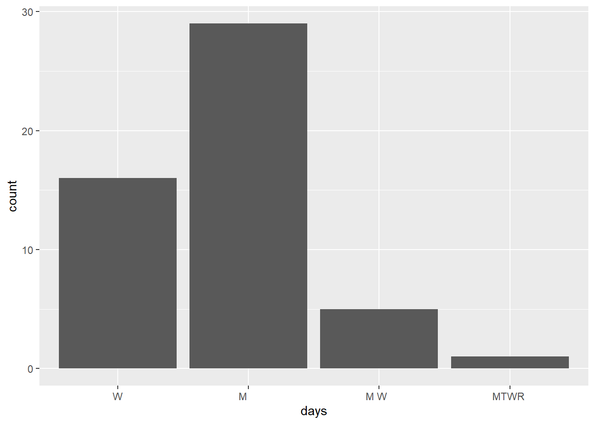

We’re in the last day of our “data preparation” unit:
17.2 Strings
In the previous class, we started discussing some considerations in working with special types of “categorical” variables: characters and factors which are:
Converting characters to factors (and factors to meaningful factors)–last time
When categorical information is stored as a character variable, the categories of interest might not be labeled or ordered in a meaningful way. We can fix that!
Strings–today!
When working with character strings, we might want to detect, replace, or extract certain patterns. For example, recall our data on courses:
Focusing on just the sem character variable, we might want to…
change FA to fall_ and SP to spring_
keep only courses taught in fall
split the variable into 2 new variables: semester (FA or SP) and year
Much more!–maybe in your projects or COMP/STAT 212
There are a lot of ways to process character variables. For example, we might have a variable that records the text for a sample of news articles. We might want to analyze things like the articles’ sentiments, word counts, typical word lengths, most common words, etc.
Essential Functions
The stringr package within tidyverse contains lots of functions to help process strings. We’ll focus on the most common. Letting x be a string variable…
function
arguments
returns
str_replace()
x, pattern, replacement
a modified string
str_replace_all()
x, pattern, replacement
a modified string
str_to_lower()
x
a modified string
str_sub()
x, start, end
a modified string
str_length()
x
a number
str_detect()
x, pattern
TRUE/FALSE
Example 1
Consider the following data with string variables :
sem area enroll instructor
1 SP2023 History 30 - people Ernesto Capello
2 FA2023 Math 20 - people Lori Ziegelmeier
3 SP2024 Anthro 25 - people Arjun Guneratne
Using only your intuition, use our str_ functions to complete the following. NOTE: You might be able to use other wrangling verbs in some cases, but focus on the new functions here.
# Define a new variable "num" that adds up the number of characters in the area labelclasses|>mutate(num=str_length(area))
sem area enroll instructor num
1 SP2023 History 30 - people Ernesto Capello 7
2 FA2023 Math 20 - people Lori Ziegelmeier 4
3 SP2024 Anthro 25 - people Arjun Guneratne 6
# Change the areas to "history", "math", "anthro" instead of "History", "Math", "Anthro"classes|>mutate(area=str_to_lower(area))
sem area enroll instructor
1 SP2023 history 30 - people Ernesto Capello
2 FA2023 math 20 - people Lori Ziegelmeier
3 SP2024 anthro 25 - people Arjun Guneratne
# Create a variable that id's which courses were taught in springclasses|>mutate(spring=str_detect(sem,"SP"))
sem area enroll instructor spring
1 SP2023 History 30 - people Ernesto Capello TRUE
2 FA2023 Math 20 - people Lori Ziegelmeier FALSE
3 SP2024 Anthro 25 - people Arjun Guneratne TRUE
# Change the semester labels to "fall2023", "spring2024", "spring2023"classes|>mutate(sem=str_replace(sem,"SP","spring")) |>mutate(sem=str_replace(sem,"FA","fall"))
sem area enroll instructor
1 spring2023 History 30 - people Ernesto Capello
2 fall2023 Math 20 - people Lori Ziegelmeier
3 spring2024 Anthro 25 - people Arjun Guneratne
# In the enroll variable, change all e's to 3's (just because?)classes|>mutate(enroll=str_replace_all(enroll,"e","3"))
sem area enroll instructor
1 SP2023 History 30 - p3opl3 Ernesto Capello
2 FA2023 Math 20 - p3opl3 Lori Ziegelmeier
3 SP2024 Anthro 25 - p3opl3 Arjun Guneratne
# Use sem to create 2 new variables, one with only the semester (SP/FA) and 1 with the yearclasses|>mutate(season=str_sub(sem,1,2)) |>mutate(year=str_sub(sem,3, 7))
sem area enroll instructor season year
1 SP2023 History 30 - people Ernesto Capello SP 2023
2 FA2023 Math 20 - people Lori Ziegelmeier FA 2023
3 SP2024 Anthro 25 - people Arjun Guneratne SP 2024
Summary
Here’s what we learned about each function:
str_replace(x, pattern, replacement) finds the first part of x that matches the pattern and replaces it with replacement
str_replace_all(x, pattern, replacement) finds all instances in x that matches the pattern and replaces it with replacement
str_to_lower(x) converts all upper case letters in x to lower case
str_sub(x, start, end) only keeps a subset of characters in x, from start (a number indexing the first letter to keep) to end (a number indexing the last letter to keep)
str_length(x) records the number of characters in x
str_detect(x, pattern) is TRUE if x contains the given pattern and FALSE otherwise
17.2.1 Example 2
Suppose we only want the spring courses:
# How can we do this after mutating?classes |>mutate(spring =str_detect(sem, "SP")) |>filter(spring==TRUE)
sem area enroll instructor spring
1 SP2023 History 30 - people Ernesto Capello TRUE
2 SP2024 Anthro 25 - people Arjun Guneratne TRUE
# We don't have to mutate first!classes |>filter(str_detect(sem, "SP"))
sem area enroll instructor
1 SP2023 History 30 - people Ernesto Capello
2 SP2024 Anthro 25 - people Arjun Guneratne
# Yet another wayclasses |>filter(!str_detect(sem, "FA"))
sem area enroll instructor
1 SP2023 History 30 - people Ernesto Capello
2 SP2024 Anthro 25 - people Arjun Guneratne
17.2.2 Example 3
Suppose we wanted to get separate columns for the first and last names of each course instructor in classes. Try doing this using str_sub(). But don’t try too long! Explain what trouble you ran into.
Before really trying, I can already tell that I will run into rouble because the first names are different lengths, meaning there is reliable first character to start on using str_sub()
17.2.3 Example 4
In general, when we want to split a column into 2+ new columns, we can often use separate():
sem area enroll first last
1 SP2023 History 30 - people Ernesto Capello
2 FA2023 Math 20 - people Lori Ziegelmeier
3 SP2024 Anthro 25 - people Arjun Guneratne
# Sometimes the function can "intuit" how we want to separate the variableclasses |>separate(instructor, c("first", "last"))
sem area enroll first last
1 SP2023 History 30 - people Ernesto Capello
2 FA2023 Math 20 - people Lori Ziegelmeier
3 SP2024 Anthro 25 - people Arjun Guneratne
Separate enroll into 2 separate columns: students and people. (These columns don’t make sense this is just practice).
sem area num species instructor
1 SP2023 History 30 people Ernesto Capello
2 FA2023 Math 20 people Lori Ziegelmeier
3 SP2024 Anthro 25 people Arjun Guneratne
We separated sem into semester and year above using str_sub(). Why would this be hard using separate()?
There is nothing between the semester and year scriptors
When we want to split a column into 2+ new columns (or do other types of string processing), but there’s no consistent pattern by which to do this, we can use regular expressions (an optional topic):
# (?<=[SP|FA]): any character *before* the split point is a "SP" or "FA"# (?=2): the first character *after* the split point is a 2classes |>separate(sem, c("semester", "year"),"(?<=[SP|FA])(?=2)")
semester year area enroll instructor
1 SP 2023 History 30 - people Ernesto Capello
2 FA 2023 Math 20 - people Lori Ziegelmeier
3 SP 2024 Anthro 25 - people Arjun Guneratne
# More general:# (?<=[a-zA-Z]): any character *before* the split point is a lower or upper case letter# (?=[0-9]): the first character *after* the split point is numberclasses |>separate(sem, c("semester", "year"),"(?<=[A-Z])(?=[0-9])")
semester year area enroll instructor
1 SP 2023 History 30 - people Ernesto Capello
2 FA 2023 Math 20 - people Lori Ziegelmeier
3 SP 2024 Anthro 25 - people Arjun Guneratne
17.3 Exercises
Exercise 1: Time slots
The courses data includes actual data scraped from Mac’s class schedule. (Thanks to Prof Leslie Myint for the scraping code!!)
If you want to learn how to scrape data, take COMP/STAT 212, Intermediate Data Science! NOTE: For simplicity, I removed classes that had “TBA” for the days.
courses <-read.csv("https://mac-stat.github.io/data/registrar.csv")# Check it outhead(courses)
number crn name days
1 AMST 112-01 10318 Introduction to African American Literature M W F
2 AMST 194-01 10073 Introduction to Asian American Studies M W F
3 AMST 194-F1 10072 What’s After White Empire - And Is It Already Here? T R
4 AMST 203-01 10646 Politics and Inequality: The American Welfare State M W F
5 AMST 205-01 10842 Trans Theories and Politics T R
6 AMST 209-01 10474 Civil Rights in the United States W
time room instructor avail_max
1 9:40 - 10:40 am MAIN 009 Daylanne English 3 / 20
2 1:10 - 2:10 pm MUSIC 219 Jake Nagasawa -4 / 16
3 3:00 - 4:30 pm HUM 214 Karin Aguilar-San Juan 0 / 14
4 9:40 - 10:40 am CARN 305 Lesley Lavery 3 / 25
5 3:00 - 4:30 pm MAIN 009 Myrl Beam -2 / 20
6 7:00 - 10:00 pm MAIN 010 Walter Greason -1 / 15
Use our more familiar wrangling tools to warm up.
# Construct a table that indicates the number of classes offered in each day/time slot# Print only the 6 most popular time slotscourses |>group_by(days,time) |>summarize(n=n()) |>arrange(desc(n)) |>head()
# A tibble: 6 × 3
# Groups: days [2]
days time n
<chr> <chr> <int>
1 "M W F" 10:50 - 11:50 am 76
2 " T R " 9:40 - 11:10 am 71
3 "M W F" 9:40 - 10:40 am 68
4 "M W F" 1:10 - 2:10 pm 66
5 " T R " 3:00 - 4:30 pm 62
6 " T R " 1:20 - 2:50 pm 59
Exercise 2: Prep the data
So that we can analyze it later, we want to wrangle the courses data:
Let’s get some enrollment info:
Split avail_max into 2 separate variables: avail and max.
Use avail and max to define a new variable called enroll. HINT: You’ll need as.numeric()
Split the course number into 3 separate variables: dept, number, and section. HINT: You can use separate() to split a variable into 3, not just 2 new variables.
Store this as courses_clean so that you can use it later.
# Identify the 6 departments with the longest average course titlescourses_clean |>mutate(namelen=str_length(name)) |>group_by(dept) |>summarize(avg=mean(namelen)) |>arrange(desc(avg)) |>head()
dept number section crn name days time
1 STAT 253 01 10806 Statistical Machine Learning T R 9:40 - 11:10 am
2 STAT 253 02 10807 Statistical Machine Learning T R 1:20 - 2:50 pm
3 STAT 253 03 10808 Statistical Machine Learning T R 3:00 - 4:30 pm
room instructor avail max enroll
1 THEATR 206 Alicia Johnson -3 20 23
2 THEATR 206 Alicia Johnson -3 20 23
3 THEATR 206 Alicia Johnson 2 20 18
Part b
Create a new dataset from courses_clean, named stat, that only includes STAT sections. In this dataset:
In the course names:
Remove “Introduction to” from any name.
Shorten “Statistical” to “Stat” where relevant.
Define a variable that records the start_time for the course.
Keep only the number, name, start_time, enroll columns.
number name start_time enroll
1 112 Data Science 3:00 27
2 112 Data Science 9:40 21
3 112 Data Science 1:20 25
4 125 Epidemiology 12:00 26
5 155 Stat Modeling 1:10 32
6 155 Stat Modeling 9:40 24
7 155 Stat Modeling 10:50 26
8 155 Stat Modeling 3:30 25
9 155 Stat Modeling 1:20 30
10 155 Stat Modeling 3:00 27
11 212 Intermediate Data Science 9:40 11
12 212 Intermediate Data Science 1:20 11
13 253 Stat Machine Learning 9:40 23
14 253 Stat Machine Learning 1:20 23
15 253 Stat Machine Learning 3:00 18
16 354 Probability 3:00 22
17 452 Correlated Data 9:40 7
18 452 Correlated Data 1:20 8
19 456 Projects in Data Science 9:40 11
Exercise 5: More cleaning
In the next exercises, we’ll dig into enrollments. Let’s get the data ready for that analysis here. Make the following changes to the courses_clean data. Because they have different enrollment structures, and we don’t want to compare apples and oranges, remove the following:
all sections in PE and INTD (interdisciplinary studies courses)
all music ensembles and dance practicums, i.e. all MUSI and THDA classes with numbers less than 100. HINT: !(dept == "MUSI" & as.numeric(number) < 100)
all lab sections. Be careful which variable you use here. For example, you don’t want to search by “Lab” and accidentally eliminate courses with words such as “Labor”.
Save the results as enrollments (don’t overwrite courses_clean).
dept number section crn
1 AMST 112 01 10318
2 AMST 194 01 10073
3 AMST 194 F1 10072
4 AMST 203 01 10646
5 AMST 205 01 10842
6 AMST 209 01 10474
7 AMST 225 01 10476
8 AMST 237 01 10075
9 AMST 240 01 10312
10 AMST 270 01 10077
11 AMST 271 01 10481
12 AMST 275 01 10331
13 AMST 284 01 10078
14 AMST 291 01 10917
15 AMST 294 01 10080
16 AMST 294 02 10719
17 AMST 294 03 10846
18 AMST 308 01 10788
19 AMST 380 01 10338
20 AMST 387 01 10795
21 AMST 394 01 10081
22 AMST 400 01 10082
23 ANTH 101 01 10886
24 ANTH 111 01 10083
25 ANTH 111 02 10084
26 ANTH 115 01 10085
27 ANTH 206 01 10536
28 ANTH 230 01 10086
29 ANTH 239 01 10087
30 ANTH 240 01 10088
31 ANTH 248 01 10887
32 ANTH 251 F1 10089
33 ANTH 294 01 10953
34 ANTH 335 01 10506
35 ANTH 363 01 10091
36 ANTH 487 01 10093
37 ANTH 494 01 10908
38 ART 130 01 10094
39 ART 130 02 10095
40 ART 149 F1 10096
41 ART 160 01 10097
42 ART 194 F1 10099
43 ART 233 01 10100
44 ART 234 01 10101
45 ART 235 01 10102
46 ART 236 01 10103
47 ART 238 01 10104
48 ART 239 01 10105
49 ART 252 01 10106
50 ART 264 01 10108
51 ART 267 01 10109
52 ART 272 01 10110
53 ART 280 01 10112
54 ART 294 01 10113
55 ART 371 01 10116
56 ART 373 01 10117
57 ART 380 01 10118
58 ART 394 01 10912
59 ASIA 113 01 10708
60 ASIA 140 01 10465
61 ASIA 194 01 10074
62 ASIA 194 02 10471
63 ASIA 236 01 10715
64 ASIA 254 F1 10520
65 ASIA 258 01 10223
66 ASIA 272 01 10111
67 ASIA 282 01 10522
68 ASIA 294 01 10490
69 ASIA 394 01 10528
70 BIOL 170 01 10119
71 BIOL 170 02 10121
72 BIOL 170 03 10123
73 BIOL 180 01 10133
74 BIOL 190 01 10136
75 BIOL 190 02 10137
76 BIOL 200 01 10142
77 BIOL 200 02 10853
78 BIOL 275 01 10145
79 BIOL 277 01 10357
80 BIOL 302 01 10149
81 BIOL 304 01 10872
82 BIOL 312 01 10151
83 BIOL 316 01 10153
84 BIOL 351 01 10203
85 BIOL 357 01 10157
86 BIOL 366 01 10159
87 BIOL 369 01 10163
88 BIOL 380 01 10165
89 BIOL 401 01 10169
90 BIOL 404 01 10170
91 BIOL 412 01 10172
92 BIOL 475 01 10173
93 CHEM 111 01 10175
94 CHEM 111 02 10176
95 CHEM 111 03 10177
96 CHEM 111 04 10178
97 CHEM 111 05 10179
98 CHEM 115 F1 10186
99 CHEM 211 01 10188
100 CHEM 211 02 10189
101 CHEM 211 03 10190
102 CHEM 300 01 10197
103 CHEM 311 01 10198
104 CHEM 351 01 10202
105 CHEM 394 01 10208
106 CHEM 411 01 10209
107 CHIN 101 01 10212
108 CHIN 101 02 10213
109 CHIN 203 01 10217
110 CHIN 203 02 10218
111 CHIN 258 01 10222
112 CHIN 305 01 10225
113 CHIN 407 01 10228
114 CLAS 111 01 10229
115 CLAS 113 01 10231
116 CLAS 115 01 10233
117 CLAS 122 01 10236
118 CLAS 129 01 10238
119 CLAS 194 01 10239
120 CLAS 202 01 10716
121 CLAS 220 01 10901
122 CLAS 231 01 10240
123 CLAS 237 01 10241
124 CLAS 241 01 10242
125 CLAS 260 01 10098
126 CLAS 294 03 10871
127 CLAS 482 01 10900
128 CLAS 485 01 10247
129 CLAS 490 01 10246
130 COMP 112 01 10248
131 COMP 112 02 10250
132 COMP 112 03 10252
133 COMP 123 01 10254
134 COMP 123 02 10255
135 COMP 123 03 10256
136 COMP 123 04 10257
137 COMP 127 01 10259
138 COMP 127 02 10260
139 COMP 127 03 10261
140 COMP 128 01 10265
141 COMP 128 02 10266
142 COMP 194 01 10563
143 COMP 194 F1 10258
144 COMP 212 01 10267
145 COMP 212 02 10269
146 COMP 221 01 10271
147 COMP 225 01 10272
148 COMP 225 02 10273
149 COMP 240 01 10274
150 COMP 240 02 10275
151 COMP 272 01 10923
152 COMP 435 01 10276
153 COMP 445 01 10277
154 COMP 446 01 10278
155 COMP 456 01 10279
156 COMP 484 01 10881
157 COMP 494 01 10896
158 ECON 113 01 10281
159 ECON 113 02 10282
160 ECON 117 01 10283
161 ECON 119 01 10286
162 ECON 119 02 10287
163 ECON 119 03 10288
164 ECON 119 04 10289
165 ECON 119 F1 10284
166 ECON 119 F2 10285
167 ECON 129 01 10290
168 ECON 221 01 10913
169 ECON 229 01 10291
170 ECON 238 01 10862
171 ECON 294 01 10292
172 ECON 294 02 10863
173 ECON 294 03 10864
174 ECON 361 01 10293
175 ECON 361 02 10294
176 ECON 371 01 10295
177 ECON 381 01 10296
178 ECON 381 02 10298
179 ECON 425 01 10302
180 ECON 426 01 10303
181 ECON 444 01 10304
182 ECON 457 01 10305
183 ECON 473 01 10902
184 ECON 474 01 10903
185 EDUC 194 F1 10308
186 EDUC 220 01 10309
187 EDUC 220 02 10976
188 EDUC 240 01 10311
189 EDUC 250 01 10313
190 EDUC 275 01 10144
191 EDUC 315 01 10660
192 EDUC 380 01 10314
193 EDUC 390 01 10315
194 EDUC 394 01 10392
195 EDUC 460 01 10316
196 ENGL 105 01 10879
197 ENGL 112 01 10317
198 ENGL 115 01 10319
199 ENGL 137 01 10320
200 ENGL 150 01 10322
201 ENGL 150 02 10323
202 ENGL 150 03 10324
203 ENGL 150 05 10878
204 ENGL 150 06 10880
205 ENGL 150 F1 10321
206 ENGL 194 F1 10326
207 ENGL 200 01 10327
208 ENGL 202 01 10910
209 ENGL 208 01 10916
210 ENGL 225 F1 10575
211 ENGL 230 01 10892
212 ENGL 262 01 10328
213 ENGL 275 01 10330
214 ENGL 280 01 10332
215 ENGL 284 01 10333
216 ENGL 285 01 10848
217 ENGL 285 02 10849
218 ENGL 294 01 10114
219 ENGL 294 04 10336
220 ENGL 294 05 10844
221 ENGL 380 01 10337
222 ENGL 394 02 10341
223 ENGL 394 03 10342
224 ENGL 400 01 10893
225 ENGL 406 01 10344
226 ENVI 130 01 10620
227 ENVI 150 01 10345
228 ENVI 160 01 10425
229 ENVI 170 01 10120
230 ENVI 170 02 10122
231 ENVI 170 03 10124
232 ENVI 202 01 11004
233 ENVI 203 01 10397
234 ENVI 215 01 10931
235 ENVI 232 01 10402
236 ENVI 234 01 10346
237 ENVI 237 01 10076
238 ENVI 240 01 10348
239 ENVI 252 F1 10350
240 ENVI 262 01 10329
241 ENVI 270 01 10353
242 ENVI 275 01 10143
243 ENVI 277 01 10356
244 ENVI 280 01 10355
245 ENVI 291 01 10891
246 ENVI 294 01 10358
247 ENVI 294 02 10454
248 ENVI 366 01 10160
249 ENVI 380 01 10166
250 ENVI 391 01 10890
251 ENVI 477 01 10420
252 ENVI 489 01 10360
253 ENVI 490 01 10361
254 FREN 101 01 10362
255 FREN 101 02 10363
256 FREN 111 01 10371
257 FREN 194 F1 10374
258 FREN 203 01 10375
259 FREN 203 02 10376
260 FREN 204 01 10381
261 FREN 305 01 10387
262 FREN 306 01 10390
263 FREN 321 01 10884
264 FREN 371 01 10899
265 FREN 394 01 10391
266 GEOG 115 01 10395
267 GEOG 203 01 10396
268 GEOG 225 01 10398
269 GEOG 232 01 10401
270 GEOG 239 F1 10403
271 GEOG 241 01 10405
272 GEOG 242 01 10407
273 GEOG 242 F1 10406
274 GEOG 248 F1 10408
275 GEOG 252 F1 10351
276 GEOG 256 01 10411
277 GEOG 261 01 10412
278 GEOG 368 01 10415
279 GEOG 372 01 10904
280 GEOG 394 02 10417
281 GEOG 477 01 10419
282 GEOL 101 F1 10851
283 GEOL 105 01 10422
284 GEOL 160 01 10424
285 GEOL 165 F1 10430
286 GEOL 250 01 10432
287 GEOL 260 01 10434
288 GEOL 300 01 10436
289 GEOL 304 01 10438
290 GERM 101 01 10440
291 GERM 110 01 10443
292 GERM 194 F1 10446
293 GERM 203 01 10447
294 GERM 204 01 10450
295 GERM 278 01 10458
296 GERM 294 01 10453
297 GERM 308 01 10455
298 GERM 364 01 10462
299 GERM 394 01 10898
300 HIST 122 01 10237
301 HIST 137 01 10463
302 HIST 137 02 10975
303 HIST 140 01 10464
304 HIST 154 01 10918
305 HIST 170 01 10466
306 HIST 181 F1 10468
307 HIST 194 01 10470
308 HIST 194 F1 10472
309 HIST 209 01 10473
310 HIST 225 01 10475
311 HIST 228 01 10477
312 HIST 234 01 10347
313 HIST 258 01 10479
314 HIST 271 01 10480
315 HIST 282 01 10484
316 HIST 294 02 10489
317 HIST 294 03 10868
318 HIST 294 F1 10874
319 HIST 367 01 10491
320 HIST 490 01 10493
321 HIST 490 02 10924
322 INTL 110 F1 10497
323 INTL 113 01 10498
324 INTL 245 01 10499
325 INTL 246 01 10501
326 INTL 250 01 10728
327 INTL 258 01 10502
328 INTL 282 01 10500
329 INTL 335 01 10505
330 INTL 380 01 10504
331 INTL 477 01 10421
332 INTL 485 01 10507
333 INTL 488 01 10508
334 JAPA 101 01 10509
335 JAPA 101 02 10510
336 JAPA 203 01 10514
337 JAPA 203 02 10515
338 JAPA 254 F1 10519
339 JAPA 282 01 10521
340 JAPA 305 01 10524
341 JAPA 394 01 10527
342 JAPA 407 01 10530
343 LATI 181 F1 10469
344 LATI 239 F1 10404
345 LATI 251 F1 10090
346 LATI 282 01 10485
347 LATI 307 01 10786
348 LATI 308 01 10789
349 LATI 331 01 10672
350 LATI 342 01 10664
351 LATI 387 01 10796
352 LATI 394 01 10418
353 LATI 394 02 10897
354 LING 100 01 10531
355 LING 104 01 10532
356 LING 200 01 10533
357 LING 205 01 10534
358 LING 206 01 10535
359 LING 220 01 10537
360 LING 236 01 10717
361 LING 282 01 10523
362 LING 300 01 10539
363 LING 309 01 10791
364 LING 394 01 10529
365 MATH 135 01 10540
366 MATH 135 02 10541
367 MATH 135 03 10542
368 MATH 137 01 10543
369 MATH 137 02 10544
370 MATH 137 03 10545
371 MATH 194 F1 10882
372 MATH 236 01 10546
373 MATH 236 02 10547
374 MATH 237 01 10548
375 MATH 237 02 10549
376 MATH 279 01 10550
377 MATH 279 02 10551
378 MATH 312 01 10553
379 MATH 354 01 10554
380 MATH 377 01 10556
381 MATH 379 01 10557
382 MATH 432 01 10558
383 MATH 437 01 10559
384 MCST 110 01 10560
385 MCST 114 01 10564
386 MCST 128 01 10565
387 MCST 194 01 10562
388 MCST 194 F1 10561
389 MCST 248 01 10566
390 MCST 258 01 10503
391 MCST 278 01 10459
392 MCST 284 01 10079
393 MCST 294 01 10567
394 MCST 394 01 10568
395 MUSI 110 01 10570
396 MUSI 113 01 10571
397 MUSI 153 01 10573
398 MUSI 180 F1 10572
399 MUSI 220 01 10538
400 MUSI 225 F1 10574
401 MUSI 342 01 10576
402 MUSI 394 01 10578
403 NSCI 488 01 10852
404 PHIL 100 01 10606
405 PHIL 100 02 10607
406 PHIL 100 F1 10605
407 PHIL 111 01 10608
408 PHIL 111 02 10609
409 PHIL 121 01 10611
410 PHIL 121 F1 10610
411 PHIL 213 01 10612
412 PHIL 310 01 10613
413 PHIL 321 01 10614
414 PHIL 489 01 10616
415 PHIL 489 02 10617
416 PHYS 126 01 10622
417 PHYS 130 01 10619
418 PHYS 194 F1 10621
419 PHYS 226 01 10625
420 PHYS 331 01 10631
421 PHYS 443 01 10634
422 PHYS 481 01 10636
423 PHYS 489 01 10638
424 POLI 100 01 10639
425 POLI 120 01 10641
426 POLI 120 F1 10640
427 POLI 140 01 10642
428 POLI 160 01 10643
429 POLI 203 01 10645
430 POLI 205 01 10644
431 POLI 207 F1 10647
432 POLI 215 01 10932
433 POLI 221 01 10648
434 POLI 242 01 10649
435 POLI 252 F1 10856
436 POLI 261 01 10650
437 POLI 268 01 10615
438 POLI 269 01 10652
439 POLI 278 01 10460
440 POLI 294 01 10653
441 POLI 294 03 10656
442 POLI 294 04 10657
443 POLI 294 05 10658
444 POLI 315 01 10659
445 POLI 324 01 10661
446 POLI 342 01 10663
447 POLI 400 01 10665
448 POLI 400 02 10666
449 POLI 400 03 10667
450 POLI 404 01 10668
451 PORT 111 01 10669
452 PORT 111 02 10670
453 PORT 331 01 10671
454 PSYC 100 01 10674
455 PSYC 100 02 10675
456 PSYC 194 F1 10673
457 PSYC 201 01 10680
458 PSYC 220 01 10310
459 PSYC 220 02 10977
460 PSYC 242 01 10684
461 PSYC 244 01 10686
462 PSYC 248 01 10688
463 PSYC 250 01 10690
464 PSYC 254 01 10691
465 PSYC 258 01 10692
466 PSYC 264 01 10693
467 PSYC 270 01 10354
468 PSYC 294 01 10359
469 PSYC 301 01 10695
470 PSYC 301 02 10696
471 PSYC 342 01 10697
472 PSYC 377 01 10698
473 PSYC 394 02 10701
474 PSYC 394 03 10869
475 PSYC 394 04 10922
476 PSYC 394 05 11027
477 PSYC 401 01 10702
478 PSYC 401 02 10703
479 PSYC 401 03 11063
480 PSYC 402 01 10704
481 RELI 100 01 10705
482 RELI 110 01 10706
483 RELI 111 01 10707
484 RELI 120 01 10709
485 RELI 121 01 10710
486 RELI 121 02 11003
487 RELI 136 01 10711
488 RELI 226 01 10712
489 RELI 235 01 10713
490 RELI 236 01 10714
491 RELI 278 01 10461
492 RELI 294 01 10718
493 RUSS 101 01 10721
494 RUSS 203 01 10724
495 RUSS 250 01 10727
496 RUSS 294 01 10729
497 RUSS 294 F1 10875
498 RUSS 394 01 10907
499 SOCI 110 01 10730
500 SOCI 150 01 10732
501 SOCI 150 F1 10731
502 SOCI 194 01 10733
503 SOCI 200 01 10885
504 SOCI 270 01 10735
505 SOCI 283 01 10736
506 SOCI 294 02 10738
507 SOCI 294 03 10870
508 SOCI 480 01 10740
509 SPAN 101 01 10741
510 SPAN 101 02 10742
511 SPAN 102 01 10748
512 SPAN 102 02 10749
513 SPAN 110 01 10755
514 SPAN 203 01 10756
515 SPAN 203 02 10757
516 SPAN 203 03 10758
517 SPAN 203 04 10759
518 SPAN 204 01 10769
519 SPAN 204 02 10770
520 SPAN 204 03 10771
521 SPAN 305 01 10780
522 SPAN 305 02 10781
523 SPAN 305 03 10782
524 SPAN 305 04 10783
525 SPAN 305 F1 10779
526 SPAN 306 01 10784
527 SPAN 307 01 10785
528 SPAN 308 01 10787
529 SPAN 309 01 10790
530 SPAN 334 01 10792
531 SPAN 382 01 10793
532 SPAN 387 01 10794
533 SPAN 394 01 10797
534 SPAN 394 02 10798
535 STAT 112 01 10249
536 STAT 112 02 10251
537 STAT 112 03 10253
538 STAT 125 01 10799
539 STAT 155 01 10800
540 STAT 155 02 10801
541 STAT 155 03 10802
542 STAT 155 04 10803
543 STAT 155 05 10804
544 STAT 155 06 10805
545 STAT 212 01 10268
546 STAT 212 02 10270
547 STAT 253 01 10806
548 STAT 253 02 10807
549 STAT 253 03 10808
550 STAT 354 01 10555
551 STAT 452 01 10809
552 STAT 452 02 10810
553 STAT 456 01 10280
554 THDA 105 F1 10811
555 THDA 105 F2 10812
556 THDA 112 01 10813
557 THDA 120 01 10814
558 THDA 120 02 10815
559 THDA 125 01 10816
560 THDA 194 01 10818
561 THDA 235 01 10819
562 THDA 242 01 10820
563 THDA 242 02 10822
564 THDA 245 01 10824
565 THDA 292 01 10867
566 THDA 294 01 10825
567 THDA 294 02 10826
568 THDA 350 01 10829
569 THDA 394 01 10830
570 THDA 490 01 10854
571 WGSS 100 F1 10840
572 WGSS 170 01 10467
573 WGSS 194 01 11025
574 WGSS 205 01 10841
575 WGSS 220 01 10843
576 WGSS 228 01 10478
577 WGSS 252 01 10107
578 WGSS 258 01 10224
579 WGSS 261 01 10651
580 WGSS 264 01 10694
581 WGSS 294 01 10845
582 WGSS 300 01 10847
583 WGSS 324 01 10662
name
1 Introduction to African American Literature
2 Introduction to Asian American Studies
3 What’s After White Empire - And Is It Already Here?
4 Politics and Inequality: The American Welfare State
5 Trans Theories and Politics
6 Civil Rights in the United States
7 Native History to 1871
8 Environmental Justice
9 Race, Culture, and Ethnicity in Education
10 Black Public Intellectuals
11 Uses and Abuses: Drugs, Addiction and Recovery
12 African American Literature to 1900
13 Radical Reelism: Indigeneity, Politics, and Visual Culture
14 Envi Justice in Practice
15 Critical Race Studies 101
16 Representing Malcolm X
17 Endarkened Feminist Epistemologies: A Black Feminist Ethic
18 Introduction to U.S. Latinx Studies
19 Topics in African American Literature: Black Feminist Thought
20 Latinx in the Midwest
21 Building Ethical Partnerships: Junior Seminar in Community Engagement
22 Senior Seminar
23 General Anthropology
24 Cultural Anthropology
25 Cultural Anthropology
26 Biological Anthropology
27 Endangered/Minority Languages
28 Ethnographic Interviewing
29 Medical Anthropology
30 Human Osteology and Paleopathology
31 Defense Against the Dark Arts
32 Politics of Memory in Latin America
33 Anthropology of Work
34 Global Generosity
35 Anthropology of Development
36 Theory in Anthropology
37 Advanced Archaeology Seminar
38 Drawing I
39 Drawing I
40 Introduction to Visual Culture
41 Introduction to Art History I: From Prehistory to the Medieval Period
42 Centering: Introduction to Ceramics Arts
43 Photography I
44 Painting I
45 Sculpture I
46 Printmaking I
47 Unconventional Clay
48 2-D Design
49 Gender, Sexualities, and Feminist Visual Culture
50 Contemporary Art and Theory
51 3-D Design
52 Art of China
53 Art and Architecture of Ancient Egypt
54 The Graphic Novel
55 Painting II
56 Printmaking II
57 Art and Iconoclasm from the Ancient World to Early Modern Era
58 Photography: Poetics of Space
59 Introduction to Buddhism
60 Introduction to East Asian Civilization
61 Introduction to Asian American Studies
62 Intro to South Asian History
63 Sanskrit and Classical Religion in India
64 Japanese Film and Animation: From the Salaryman to the Shojo
65 Gender and Sexuality in China
66 Art of China
67 Language and Identity in Japanese, Asian American, and Other Communities
68 Contemporary India Since 1945
69 Japanese Sociocultural Linguistics
70 Ecology and the Environment
71 Ecology and the Environment
72 Ecology and the Environment
73 Biodiversity and Evolution
74 Genetics
75 Genetics
76 Cell Biology
77 Cell Biology
78 Outdoor Environmental Education in Theory, Policy and Practice
79 Sustainable Cities: Urban Environmental Science
80 Invertebrate Animal Diversity
81 Neuroanatomy
82 Microbiology
83 Cell/Molecular Neuroscience
84 Biochemistry I
85 Immunology
86 Plant Ecophysiology
87 Developmental Biology
88 Animal Behavior: Fundamentals and Applications
89 Mechanisms of Memory
90 Seminar in Genome Editing
91 Seminar in Cancer Biology
92 Research in Neurobiology
93 General Chemistry I: Structure and Equilibrium
94 General Chemistry I: Structure and Equilibrium
95 General Chemistry I: Structure and Equilibrium
96 General Chemistry I: Structure and Equilibrium
97 General Chemistry I: Structure and Equilibrium
98 Accelerated General Chemistry
99 Organic Chemistry I
100 Organic Chemistry I
101 Organic Chemistry I
102 Chemistry Seminar
103 Thermodynamics and Kinetics
104 Biochemistry I
105 Scientific Communication
106 Advanced Inorganic Chemistry
107 First Year Chinese I
108 First Year Chinese I
109 Second Year Chinese I
110 Second Year Chinese I
111 Gender and Sexuality in China
112 Third Year Chinese I
113 Fourth Year Chinese I
114 Elementary Latin I
115 Elementary Arabic I
116 Elementary Greek I
117 The Roman World
118 Greek Myths
119 Ancient Comedy
120 Sanskrit and Classical Religion in India
121 Ancient Healing and Medicine
122 Intermediate Latin I: Prose
123 Intermediate Hebrew I
124 Intermediate Arabic I
125 Introduction to Art History I: From Prehistory to the Medieval Period
126 Art and Architecture of Ancient Egypt
127 Advanced Archaeology Seminar
128 Advanced Arabic
129 Senior Seminar
130 Introduction to Data Science
131 Introduction to Data Science
132 Introduction to Data Science
133 Core Concepts in Computer Science
134 Core Concepts in Computer Science
135 Core Concepts in Computer Science
136 Core Concepts in Computer Science
137 Object-Oriented Programming and Abstraction
138 Object-Oriented Programming and Abstraction
139 Object-Oriented Programming and Abstraction
140 Data Structures
141 Data Structures
142 Introduction to Data in the Humanities
143 Functional Problem Solving
144 Intermediate Data Science
145 Intermediate Data Science
146 Algorithm Design and Analysis
147 Software Design and Development
148 Software Design and Development
149 Computer Systems
150 Computer Systems
151 Advanced Remote Sensing
152 Data Visualization
153 Parallel and Distributed Processing
154 Internet Computing
155 Projects in Data Science
156 Introduction to Artificial Intelligence
157 Topics in Applied Math: Computational Geometry
158 Financial Accounting
159 Financial Accounting
160 Business Negotiations
161 Principles of Economics
162 Principles of Economics
163 Principles of Economics
164 Principles of Economics
165 Principles of Economics
166 Principles of Economics
167 Calculus-based Principles of Economics
168 Introduction to International Economics
169 World Economic History
170 Introduction to Entrepreneurship
171 Economics of the Twin Cities
172 Working in America
173 Working in America
174 Intermediate Microeconomic Analysis
175 Intermediate Microeconomic Analysis
176 Intermediate Macroeconomic Analysis
177 Introduction to Econometrics
178 Introduction to Econometrics
179 International Economic Development
180 International Economic Development Capstone
181 Honors Seminar
182 Finance
183 Open Economy Macroeconomics
184 Open Economy Macroeconomics Capstone
185 We Demand: Student Power, World Building, and Democratizing Higher Education
186 Educational Psychology
187 Educational Psychology
188 Race, Culture, and Ethnicity in Education
189 Building Trust: Education in Global Perspective
190 Outdoor Environmental Education in Theory, Policy and Practice
191 Advanced Topics in Policy: US Education Politics and Policy
192 Research Methods for Educ/Adv
193 Teaching and Learning in Urban Schools
194 World Language Methodology
195 Education and Social Change
196 Identities and Differences in U.S. Literature: LGBTQ2S+ Literature in America
197 Introduction to African American Literature
198 Shakespeare
199 Novel
200 Introduction to Creative Writing
201 Introduction to Creative Writing
202 Introduction to Creative Writing
203 Introduction to Creative Writing
204 Introduction to Creative Writing
205 Introduction to Creative Writing
206 Movie Medievalisms
207 Major British Authors: The Self and Society
208 Great Detectives and Plots of Detection
209 Literary Publishing
210 Musical Fictions
211 19th Century British Literature: Food and Literary Sustenance
212 Studies in Literature and the Natural World: Rural Outcasts
213 African American Literature to 1900
214 Crafts of Writing: Poetry - Forms of Attention, Attention to Form
215 Crafts of Writing: Screenwriting
216 Playwriting
217 Playwriting
218 The Graphic Novel
219 Writer’s Sketchbook: Space and Place
220 Feminist Reconstructions: Utopias, Masculinities, and Race
221 Topics in African American Literature: Black Feminist Thought
222 Disability in the English Renaissance
223 Demonologie
224 Special Topics in Literary Studies: Picture This! Literature and Photography
225 Projects in Creative Writing (Capstone)
226 Science of Renewable Energy
227 Climate and Society
228 Dynamic Earth/Global Change
229 Ecology and the Environment
230 Ecology and the Environment
231 Ecology and the Environment
232 Sustainability and the Campus
233 Introduction to Urban Ecology
234 Environmental Politics/Policy
235 People, Agriculture and the Environment
236 U.S. Environmental History
237 Environmental Justice
238 The Earth’s Climate System
239 Water and Power
240 Studies in Literature and the Natural World: Rural Outcasts
241 Psychology of Sustainable Behavior
242 Outdoor Environmental Education in Theory, Policy and Practice
243 Sustainable Cities: Urban Environmental Science
244 Environmental Classics
245 Environmental Justice in Practice
246 Psychology and/of Climate Change
247 Critical Ecologies: Theory in the Anthropocene
248 Plant Ecophysiology
249 Animal Behavior: Fundamentals and Applications
250 Climate Negotiations at COP28
251 Comparative Environment and Development
252 Environmental Leadership Pract
253 Envi St Leadership Seminar
254 French I
255 French I
256 Accelerated French I-II
257 18th Century
258 French III
259 French III
260 Text, Film and Media
261 Advanced Expression: Communication Tools
262 Introduction to Literary Analysis
263 Introduction to French Cinema
264 French Intellectuals in/And the World
265 World Language Methodology
266 Thinking Geographically: The Fundamentals of Human Geography
267 Introduction to Urban Ecology
268 Introduction to Geographic Information Systems
269 People, Agriculture and the Environment
270 Neotropical Landscapes
271 Urban Geography
272 Regional Geography of the US and Canada
273 Regional Geography of the US and Canada
274 The Political Geography of Nations and Nationalism
275 Water and Power
276 Health Geography
277 Geography of World Urbanization
278 Health GIS
279 Advanced Remote Sensing
280 Public Health in Latin America
281 Comparative Environment and Development
282 Dinosaurs
283 Geohazards
284 Dynamic Earth/Global Change
285 History/Evolution of Earth
286 Mineralogy
287 Geomorphology
288 Paleobiology
289 Tectonics
290 Elementary German I
291 Accelerated Elementary German
292 Our Cyborgs, Ourselves
293 Intermediate German I
294 Intermediate German II
295 Marx, Religion, and Biopolitical Race
296 Critical Ecologies: Theory in the Anthropocene
297 German Cultural History I: Uniting and Dividing Germany
298 Migration, Then and Now
299 World Language Methodology
300 The Roman World
301 From Confederation to Confederacy: US History from Independence to Civil War
302 From Confederation to Confederacy: US History from Independence to Civil War
303 Introduction to East Asian Civilization
304 African Life Histories
305 History of Childhood
306 Introduction to Latin America
307 Intro to South Asian History
308 Wakanda Forever
309 Civil Rights in the United States
310 Native History to 1871
311 The Law, Economy, and Family in the Anglo-American Tradition
312 U.S. Environmental History
313 Postwar Europe
314 Uses and Abuses: Drugs, Addiction and Recovery
315 Latin America: Art and Nation
316 Contemporary India Since 1945
317 The Caucasus: From Ancient Histories to Modern Problems
318 Between Europe and Asia
319 The Holocaust
320 Senior Seminar
321 Senior Seminar
322 Introduction to Intl Studies: Globalization - Homogeneity and Heterogeneity
323 Intro to International Studies: Border-crossing in the Age of Globalization
324 Intro to Intl Human Rights
325 Global Adolescent Sexual and Reproductive Health
326 Terrorism and Art: The Spectacle of Destruction
327 The Middle East Through Film
328 Introduction to International Public Health
329 Global Generosity
330 Global Leadership
331 Comparative Environment and Development
332 Senior Seminar: Confronting Global Hatred
333 Senior Seminar: Thinking on a World Scale
334 First Year Japanese I
335 First Year Japanese I
336 Second Year Japanese I
337 Second Year Japanese I
338 Japanese Film and Animation: From the Salaryman to the Shojo
339 Language and Identity in Japanese, Asian American, and Other Communities
340 Third Year Japanese I
341 Japanese Sociocultural Linguistics
342 Fourth Year Japanese I
343 Introduction to Latin America
344 Neotropical Landscapes
345 Politics of Memory in Latin America
346 Latin America: Art and Nation
347 Introduction to the Analysis of Hispanic Texts
348 Introduction to U.S. Latinx Studies
349 Journeys Through Brazil
350 Urban Politics of Latin America
351 Latinx in the Midwest
352 Public Health in Latin America
353 Narratives Against Extermination: Cultural Memory in the Amazon and Patagonia
354 Introduction to Linguistics
355 Sounds of the World’s Languages
356 Syntax
357 Phonology
358 Endangered/Minority Languages
359 Language and Music
360 Sanskrit and Classical Religion in India
361 Language and Identity in Japanese, Asian American, and Other Communities
362 Linguistic Analysis
363 Introduction to Hispanic Linguistics
364 Japanese Sociocultural Linguistics
365 Applied Multivariable Calculus I
366 Applied Multivariable Calculus I
367 Applied Multivariable Calculus I
368 Applied Multivariable Calculus II
369 Applied Multivariable Calculus II
370 Applied Multivariable Calculus II
371 Calculus: A Biomedical Introduction
372 Linear Algebra
373 Linear Algebra
374 Applied Multivariable Calculus III
375 Applied Multivariable Calculus III
376 Discrete Mathematics
377 Discrete Mathematics
378 Differential Equations
379 Probability
380 Real Analysis
381 Combinatorics
382 Mathematical Modeling
383 Topics in Applied Math: Computational Geometry
384 Texts and Power: Foundations of Media and Cultural Studies
385 News Reporting and Writing
386 Film Analysis/Visual Culture
387 Introduction to Data in the Humanities
388 Documentary Cinema: Theory and Practice
389 History of Film 1893-1941
390 The Middle East Through Film
391 Marx, Religion, and Biopolitical Race
392 Radical Reelism: Indigeneity, Politics, and Visual Culture
393 The Horror Film: History, Politics, and Theory
394 The Transnational Character of Alternative Culture
395 Introduction to Western Classical Music
396 Musicianship
397 Electronic Music
398 Music, Race, and Ethnicity
399 Language and Music
400 Musical Fictions
401 Sacred, Secular, Sublime: Music and Meaning in Europe, 1300-1800
402 Music and the Meaning of Life
403 Neuroscience Capstone
404 Introduction to Philosophy
405 Introduction to Philosophy
406 Introduction to Philosophy: Love and Friendship
407 Introduction to Symbolic Logic
408 Introduction to Symbolic Logic
409 Introduction to Ethics
410 Introduction to Ethics
411 Philosophy of Mind
412 Philosophy of Science
413 Contemporary Social and Political Philosophy
414 Senior Seminar
415 Senior Seminar
416 Introductory Physics I
417 Science of Renewable Energy
418 Our Solar System and Beyond
419 Principles of Physics I
420 Modern Physics
421 Electromagnetic Theory
422 Quantum Mechanics
423 Physics Seminar
424 Foundations of US Politics
425 Foundations of International Politics: Western and Non-Western Perspectives
426 Foundations of International Politics: Western and Non-Western Perspectives
427 Foundations of Comparative Politics
428 Foundations of Political Theory: Decolonizing the Canon
429 Politics and Inequality: The American Welfare State
430 US Politics and Policymaking
431 US Civil Rights and Civil Liberties
432 Environmental Politics/Policy
433 Global Governance
434 Political Economy of Development
435 Water and Power
436 Feminist Political Theory
437 Contemporary Social and Political Philosophy
438 Empirical Research Methods
439 Marx, Religion, and Biopolitical Race
440 A New Cold War? US-China Relations in the 2020s
441 Modern Political Theory (Machiavelli to Nietzsche)
442 Comics and US Political Culture
443 When Justice Goes Blind: The Problem of Wrongful Convictions
444 Advanced Topics in Policy: US Education Politics and Policy
445 Women, Peace and Security
446 Urban Politics of Latin America
447 Senior Research Seminar: World Politics
448 Senior Research Seminar
449 Senior Research Seminar
450 Honors Colloquium
451 Accelerated Beginning Portuguese
452 Accelerated Beginning Portuguese
453 Journeys through Brazil
454 Introduction to Psychology
455 Introduction to Psychology
456 Applied Cognition
457 Research in Psychology I
458 Educational Psychology
459 Educational Psychology
460 Cognitive Psychology
461 Cognitive Neuroscience
462 Behavioral Neuroscience
463 Developmental Psychology
464 Social Psychology
465 Industrial/Organizational Psychology
466 The Psychology of Gender
467 Psychology of Sustainable Behavior
468 Psychology and/of Climate Change
469 Research in Psychology II
470 Research in Psychology II
471 Intelligence
472 Moral Psychology
473 Indigenous Healing and Well-Being
474 Neuropsychology of Injury and Recovery
475 Trauma/Individuals/Society
476 Applying Developmental Psychology to 21st Century Challenges
477 Directed Research in Psychology
478 Directed Research in Psychology
479 Directed Research in Psychology
480 Clinical Science Capstone
481 Introduction to Islam: Formation and Expansion
482 The Big Questions
483 Introduction to Buddhism
484 The Jewish Bible
485 Jesus, Peter, Paul and Mary: The Beginnings of Christianity
486 Jesus, Peter, Paul and Mary: The Beginnings of Christianity
487 World Religions and World Religions Discourse
488 Martyrdom Then and Now
489 Theorizing Religion
490 Sanskrit and Classical Religion in India
491 Marx, Religion, and Biopolitical Race
492 Representing Malcolm X
493 Elementary Russian I
494 Intermediate Russian I
495 Terrorism and Art: The Spectacle of Destruction
496 The Caucasus: From Ancient Histories to Modern Problems
497 Between Europe and Asia
498 World Language Methodology
499 Introduction to Sociology
500 Prius or Pickup? Political Divides and Social Class
501 Prius or Pickup? Political Divides and Social Class
502 Children and Childhood in Times of Change and Crisis
503 The Old Order is Dying and the New Cannot Be Born
504 Interpretive Social Research
505 Economic Sociology
506 Suburbanization
507 Unequal Budgets: Taxing, Spending, and States of Inequality
508 Senior Seminar
509 Elementary Spanish I
510 Elementary Spanish I
511 Elementary Spanish II
512 Elementary Spanish II
513 Accelerated Beginning Spanish
514 Intermediate Spanish I
515 Intermediate Spanish I
516 Intermediate Spanish I
517 Intermediate Spanish I
518 Intermediate Spanish II
519 Intermediate Spanish II
520 Intermediate Spanish II
521 Advanced Oral and Written Expression
522 Advanced Oral and Written Expression
523 Advanced Oral and Written Expression
524 Advanced Oral and Written Expression
525 Advanced Oral and Written Expression: Exploring Spanish in the United States
526 Spanish for Heritage Speakers
527 Introduction to the Analysis of Hispanic Texts
528 Introduction to U.S. Latinx Studies
529 Introduction to Hispanic Linguistics
530 Spanish in the Workplace
531 Constructing the Nation
532 Latinx in the Midwest
533 Narratives Against Extermination: Cultural Memory in the Amazon and Patagonia
534 The Veils of Spain: Veiled Characters and the Use of Veils in Medieval/Early Modern Iberian Culture
535 Introduction to Data Science
536 Introduction to Data Science
537 Introduction to Data Science
538 Epidemiology
539 Introduction to Statistical Modeling
540 Introduction to Statistical Modeling
541 Introduction to Statistical Modeling
542 Introduction to Statistical Modeling
543 Introduction to Statistical Modeling
544 Introduction to Statistical Modeling
545 Intermediate Data Science
546 Intermediate Data Science
547 Statistical Machine Learning
548 Statistical Machine Learning
549 Statistical Machine Learning
550 Probability
551 Correlated Data
552 Correlated Data
553 Projects in Data Science
554 Seeing Performance in the Twin Cities
555 Seeing Performance in the Twin Cities
556 Reading Plays: Indigenous Playwrights
557 Acting
558 Acting
559 Technologies of Performance
560 Drawing for Theater and Dance
561 Fundamentals of Scenography
562 Playwriting
563 Playwriting
564 Performance Histories and Theories: From the Historical Avant-Garde to the Present
565 Stage Management
566 History Fashion and Costume
567 Sound Design
568 Directing for the Stage
569 Lighting Design II
570 Capstone and Honors Seminar
571 Intro to Women’s/Gender/Sexuality St: Intersectional Queer Approaches to Pandemics and Uprisings
572 History of Childhood
573 Identities and Differences in U.S. Literature: LGBTQ2S+ Literature in America
574 Trans Theories and Politics
575 Feminist Reconstructions: Utopias, Masculinities, and Race
576 The Law, Economy and Family in the Anglo-American Tradition
577 Gender, Sexualities and Feminist Visual Culture
578 Gender and Sexuality in China
579 Feminist Political Theory
580 The Psychology of Gender
581 Endarkened Feminist Epistemologies: A Black Feminist Ethic
582 Worlds Upside Down: Revolutions in Theories and Practices
583 Women, Peace and Security
days time room instructor
1 M W F 9:40 - 10:40 am MAIN 009 Daylanne English
2 M W F 1:10 - 2:10 pm MUSIC 219 Jake Nagasawa
3 T R 3:00 - 4:30 pm HUM 214 Karin Aguilar-San Juan
4 M W F 9:40 - 10:40 am CARN 305 Lesley Lavery
5 T R 3:00 - 4:30 pm MAIN 009 Myrl Beam
6 W 7:00 - 10:00 pm MAIN 010 Walter Greason
7 T R 9:40 - 11:10 am MAIN 010 Katrina Phillips
8 T R 9:40 - 11:10 am THEATR 001 Kirisitina Sailiata
9 T R 1:20 - 2:50 pm MUSIC 228 Brian Lozenski
10 W 7:00 - 10:00 pm HUM 213 Duchess Harris
11 M 7:00 - 10:00 pm THEATR 204 Amy Sullivan
12 M W F 12:00 - 1:00 pm MAIN 111 Daylanne English
13 M W 7:00 - 8:30 pm HUM 215 Kirisitina Sailiata
14 T R 3:00 - 4:30 pm MARKIM 201 Samuel WegnerKirisitina Sailiata
15 M W F 3:30 - 4:30 pm ARTCOM 202 Jake Nagasawa
16 T R 3:00 - 4:30 pm MAIN 011 William Hart
17 M W F 10:50 - 11:50 am MAIN 009 Ebony Aya
18 M W F 1:10 - 2:10 pm HUM 212 Alicia Muñoz
19 M W F 2:20 - 3:20 pm MAIN 111 Daylanne English
20 M W F 10:50 - 11:50 am HUM 217 Alicia Muñoz
21 M 7:00 - 10:00 pm HUM 217 Karin Aguilar-San Juan
22 T R 9:40 - 11:10 am HUM 217 Duchess Harris
23 T R 9:40 - 11:10 am CARN 06A Jane Holmstrom
24 M W F 9:40 - 10:40 am CARN 06A Hilary Chart
25 M W F 1:10 - 2:10 pm CARN 06A Hilary Chart
26 M W F 10:50 - 11:50 am CARN 06B Jane Holmstrom
27 M W F 2:20 - 3:20 pm OLRI 301 Marianne Milligan
28 M W F 9:40 - 10:40 am CARN 05 Arjun Guneratne
29 T R 1:20 - 2:50 pm CARN 06A Ron Barrett
30 M W F 1:10 - 2:10 pm CARN 06B Jane Holmstrom
31 T R 3:00 - 4:30 pm CARN 06A Ron Barrett
32 T R 3:00 - 4:30 pm CARN 204 Olga González
33 W 7:00 - 10:00 pm CARN 05 Hilary Chart
34 M W F 3:30 - 4:30 pm CARN 404 Jenna Rice Rahaim
35 M W F 1:10 - 2:10 pm CARN 05 Arjun Guneratne
36 T R 9:40 - 11:10 am THEATR 101 Olga González
37 T R 9:40 - 11:10 am MAIN 011 Andrew Overman
38 M W 1:10 - 4:20 pm ART 302 Megan Vossler
39 M W 8:30 - 11:40 am ART 302 Nicole Simpkins
40 M W F 9:40 - 10:40 am ARTCOM 102 Kari Shepherdson-Scott
41 M W F 10:50 - 11:50 am ARTCOM 102 Serdar Yalçin
42 T R 8:00 - 11:10 am ART 113 Summer Hills-Bonczyk
43 M W F 9:40 - 11:40 am ART 301 Mara Duvra
44 T R 1:20 - 4:30 pm ART 308 Chris Willcox
45 M W F 9:40 - 11:40 am ART 118 Lela Pierce
46 T R 1:20 - 4:30 pm ART 214 Ruthann Godollei
47 T R 1:20 - 4:30 pm ART 113 Summer Hills-Bonczyk
48 M W F 1:10 - 3:10 pm ART 301 Mara Duvra
49 T R 9:40 - 11:10 am ARTCOM 102 Joanna Inglot
50 T R 3:00 - 4:30 pm ARTCOM 102 Joanna Inglot
51 M W F 1:10 - 3:10 pm ART 118 Lela Pierce
52 M W F 1:10 - 2:10 pm ARTCOM 102 Kari Shepherdson-Scott
53 M W F 2:20 - 3:20 pm ARTCOM 102 Serdar Yalçin
54 T R 1:20 - 2:50 pm ARTCOM 202 Matt BurgessMegan Vossler
55 T R 8:00 - 11:10 am ART 308 Chris Willcox
56 T R ART 214 Ruthann Godollei
57 T R 1:20 - 2:50 pm ARTCOM 102 Serdar Yalçin
58 T R 8:00 - 11:10 am ART 301 Mara Duvra
59 M W F 10:50 - 11:50 am MAIN 002 Erik Davis
60 T R 9:40 - 11:10 am MAIN 002 James Coplin
61 M W F 1:10 - 2:10 pm MUSIC 219 Jake Nagasawa
62 M W F 9:40 - 10:40 am CARN 105 Niharika Yadav
63 M W F 9:40 - 10:40 am MAIN 001 James Laine
64 M W F 1:10 - 2:10 pm HUM 110 Arthur Mitchell
65 M W F 1:10 - 2:10 pm HUM 111 Xin Yang
66 M W F 1:10 - 2:10 pm ARTCOM 102 Kari Shepherdson-Scott
67 T R 9:40 - 11:10 am HUM 110 Satoko Suzuki
68 M W F 3:30 - 4:30 pm MAIN 001 Niharika Yadav
69 T R 3:00 - 4:30 pm HUM 110 Satoko Suzuki
70 M W F 9:40 - 10:40 am THEATR 203 Mary Heskel
71 M W F 1:10 - 2:10 pm THEATR 202 Stotra Chakrabarti
72 M W F 12:00 - 1:00 pm THEATR 202 Anika Bratt
73 M W F 12:00 - 1:00 pm OLRI 100 Kristina Curry Rogers
74 M W F 1:10 - 2:10 pm THEATR 205 Marc Pisansky
75 M W F 10:50 - 11:50 am THEATR 206 Robin Shields-Cutler
76 M W F 8:30 - 9:30 am THEATR 201 Phillip Rivera
77 M W F 9:40 - 10:40 am THEATR 201 Phillip Rivera
78 M W 1:10 - 2:10 pm OLRI 243 Jerald Dosch
79 T R 3:00 - 4:30 pm OLRI 243 Anika Bratt
80 M W F 9:40 - 10:40 am OLRI 270 Sarah Boyer
81 M W F 9:40 - 10:40 am OLRI 370 Elizabeth Jansen
82 M W F 9:40 - 10:40 am ARTCOM 202 Robin Shields-Cutler
83 M W F 10:50 - 11:50 am OLRI 301 Marc Pisansky
84 M W F 1:10 - 2:10 pm OLRI 350 Kathryn Splan
85 M W F 9:40 - 10:40 am OLRI 253 Elena Tonc
86 M W F 10:50 - 11:50 am OLRI 284 Mary Heskel
87 M W F 1:10 - 2:10 pm OLRI 273 Mary Montgomery
88 M W F 10:50 - 11:50 am OLRI 250 Stotra Chakrabarti
89 M W 8:00 - 9:30 am OLRI 270 Michelle Tong
90 M W F 12:00 - 1:00 pm OLRI 270 Mary Montgomery
91 M W 8:00 - 9:30 am OLRI 300 Elena Tonc
92 W 7:00 - 10:00 pm OLRI 276 Michelle Tong
93 M W F 8:30 - 9:30 am OLRI 350 Paul Fischer
94 M W F 12:00 - 1:00 pm THEATR 200 Kelsey Boyle
95 M W F 1:10 - 2:10 pm THEATR 200 Kelsey Boyle
96 M W F 9:40 - 10:40 am OLRI 350 Susan Green
97 M W F 10:50 - 11:50 am OLRI 350 Susan Green
98 M W F 1:10 - 2:10 pm OLRI 301 Keith Kuwata
99 M W F 8:30 - 9:30 am OLRI 100 Ronald Brisbois
100 M W F 9:40 - 10:40 am THEATR 205 Dennis Cao
101 M W F 10:50 - 11:50 am THEATR 205 Dennis Cao
102 W 3:30 - 4:30 pm OLRI 350 Thomas Varberg
103 M W 8:00 - 9:30 am OLRI 301 Thomas Varberg
104 M W F 1:10 - 2:10 pm OLRI 350 Kathryn Splan
105 M 7:00 - 10:00 pm OLRI 300 Leah Witus
106 M W F 10:50 - 11:50 am OLRI 300 Paul Fischer
107 M W F 9:40 - 10:40 am HUM 111 Rivi Handler-Spitz
108 M W F 10:50 - 11:50 am HUM 111 Rivi Handler-Spitz
109 M W F 9:40 - 10:40 am HUM 112 Xin Yang
110 M W F 10:50 - 11:50 am HUM 112 Xin Yang
111 M W F 1:10 - 2:10 pm HUM 111 Xin Yang
112 M W F 9:40 - 10:40 am HUM 217 Patricia Anderson
113 M W F 9:40 - 10:40 am HUM 404 Jin Stone
114 M W F 9:40 - 10:40 am MAIN 111 Beth Severy-Hoven
115 M W F 1:10 - 2:10 pm MAIN 010 Kelly Tuttle
116 M W F 2:20 - 3:20 pm MAIN 009 Nanette Goldman
117 T R 9:40 - 11:10 am MAIN 111 Beth Severy-Hoven
118 M W F 8:30 - 9:30 am MAIN 010 Fade Manley
119 M W F 10:50 - 11:50 am HUM 228 Fade Manley
120 M W F 9:40 - 10:40 am MAIN 001 James Laine
121 T R 1:20 - 2:50 pm HUM 217 Andrew Overman
122 M W F 10:50 - 11:50 am MAIN 111 Beth Severy-Hoven
123 M W F 12:00 - 1:00 pm MAIN 011 Nanette Goldman
124 M W F 2:20 - 3:20 pm MAIN 010 Kelly Tuttle
125 M W F 10:50 - 11:50 am ARTCOM 102 Serdar Yalçin
126 M W F 2:20 - 3:20 pm ARTCOM 102 Serdar Yalçin
127 T R 9:40 - 11:10 am MAIN 011 Andrew Overman
128 M W F 10:50 - 11:50 am MAIN 003 Kelly Tuttle
129 T R 3:00 - 4:30 pm MAIN 111 Andrew Overman
130 T R 3:00 - 4:30 pm OLRI 254 Brianna Heggeseth
131 T R 9:40 - 11:10 am THEATR 205 Amin Alhashim
132 T R 1:20 - 2:50 pm THEATR 205 Amin Alhashim
133 M W F 9:40 - 10:40 am OLRI 258 Lian Duan
134 M W F 10:50 - 11:50 am OLRI 258 Lian Duan
135 M W F 12:00 - 1:00 pm OLRI 258 Elizabeth Ernst
136 M W F 1:10 - 2:10 pm OLRI 258 Elizabeth Ernst
137 M W F 9:40 - 10:40 am OLRI 256 Bret Jackson
138 M W F 1:10 - 2:10 pm OLRI 256 Joslenne Peña
139 M W F 2:20 - 3:20 pm OLRI 256 Lian Duan
140 M W F 1:10 - 2:10 pm OLRI 254 Suhas Arehalli
141 M W F 2:20 - 3:20 pm OLRI 254 Suhas Arehalli
142 M W F 9:40 - 10:40 am CARN 304 Aisling Quigley
143 M W F 10:50 - 11:50 am OLRI 256 Abby Marsh
144 T R 9:40 - 11:10 am THEATR 201 Leslie Myint
145 T R 1:20 - 2:50 pm THEATR 204 Leslie Myint
146 M W F 10:50 - 11:50 am THEATR 201 Lauren Milne
147 M W F 1:10 - 2:10 pm THEATR 213 Lauren Milne
148 M W F 2:20 - 3:20 pm THEATR 213 Lauren Milne
149 M W F 9:40 - 10:40 am OLRI 245 Abby Marsh
150 M W F 1:10 - 2:10 pm OLRI 245 Susan Fox
151 T R 9:40 - 11:10 am CARN 109 Xavier Haro-Carrión
152 M W F 2:20 - 3:20 pm OLRI 245 Bret Jackson
153 T R 3:00 - 4:30 pm OLRI 245 Libby Shoop
154 M W F 10:50 - 11:50 am OLRI 245 Joslenne Peña
155 T R 9:40 - 11:10 am THEATR 202 Shilad Sen
156 M W F 3:30 - 4:30 pm OLRI 258 Susan Fox
157 T R 9:40 - 11:10 am OLRI 245 Lori Ziegelmeier
158 T R 8:00 - 9:30 am HUM 314 Bridgit Jordan
159 T R 9:40 - 11:10 am HUM 314 Bridgit Jordan
160 T R 1:20 - 2:50 pm OLRI 250 Joyce Minor
161 M W F 2:20 - 3:20 pm CARN 304 Pete Ferderer
162 T R 9:40 - 11:10 am ARTCOM 202 Mario Solis-Garcia
163 T R 9:40 - 11:10 am CARN 305 Sarah West
164 M W F 10:50 - 11:50 am CARN 305 Gary Krueger
165 M W F 1:10 - 2:10 pm CARN 304 Pete Ferderer
166 M W F 1:10 - 2:10 pm CARN 305 Gary Krueger
167 M W F 10:50 - 11:50 am THEATR 204 Liang Ding
168 T R 1:20 - 2:50 pm THEATR 002 Felix Friedt
169 M W F 10:50 - 11:50 am CARN 06A Pete Ferderer
170 M 7:00 - 10:00 pm LIBR 250 Ali Alizadeh
171 R 1:20 - 4:30 pm THEATR 203 Sarah West
172 M W F 1:10 - 2:10 pm HUM 400 Elizabeth Engle
173 M W F 10:50 - 11:50 am ARTCOM 202 Elizabeth Engle
174 T R 9:40 - 11:10 am THEATR 200 Gabriel Lade
175 T R 1:20 - 2:50 pm THEATR 200 Gabriel Lade
176 M W F 10:50 - 11:50 am THEATR 202 Mario Solis-Garcia
177 T R 9:40 - 11:10 am HUM 212 Felix Friedt
178 M W F 9:40 - 10:40 am CARN 309 Gary Krueger
179 T R 1:20 - 2:50 pm CARN 305 Amy Damon
180 T R 1:20 - 2:50 pm CARN 305 Amy Damon
181 T R 3:00 - 4:30 pm CARN 305 Amy Damon
182 M W F 1:10 - 2:10 pm CARN 206 Liang Ding
183 M W F 9:40 - 10:40 am THEATR 202 Mario Solis-Garcia
184 M W F 9:40 - 10:40 am THEATR 202 Mario Solis-Garcia
185 M W F 9:40 - 10:40 am37 MC Gonzalo Guzmán
186 T R 9:40 - 11:10 am OLRI 250 Tina Kruse
187 T R 3:00 - 4:30 pm THEATR 202 Tina Kruse
188 T R 1:20 - 2:50 pm MUSIC 228 Brian Lozenski
189 T R 3:00 - 4:30 pm ARTCOM 202 Sonia Mehta
190 M W 1:10 - 2:10 pm OLRI 243 Jerald Dosch
191 T R 3:00 - 4:30 pm CARN 304 Lesley Lavery
192 M W F 12:00 - 1:00 pm ARTCOM 102 Gonzalo Guzmán
193 M 7:00 - 10:00 pm ARTCOM 102 Brian Lozenski
194 M W F 1:10 - 2:10 pm HUM 314 Claude Cassagne
195 M W F 1:10 - 2:10 pm HUM 215 Gonzalo Guzmán
196 T R 9:40 - 11:10 am HUM 213 Rachel Gold
197 M W F 9:40 - 10:40 am MAIN 009 Daylanne English
198 M W F 10:50 - 11:50 am MAIN 001 Penelope Geng
199 T R 1:20 - 2:50 pm HUM 212 James Dawes
200 M W F 9:40 - 10:40 am MAIN 011 James Dawes
201 T R 9:40 - 11:10 am MAIN 001 Matt Burgess
202 T R 1:20 - 2:50 pm HUM 409 Emma Törzs
203 M W F 10:50 - 11:50 am MAIN 011 Cody Klippenstein
204 M W F 1:10 - 2:10 pm MAIN 011 Cody Klippenstein
205 T R 1:20 - 2:50 pm MAIN 001 Michael Prior
206 M W F 10:50 - 11:50 am HUM 213 Coral Lumbley
207 M W F 1:10 - 2:10 pm HUM 112 Coral Lumbley
208 M W F 9:40 - 10:40 am HUM 402 Andrea Kaston Tange
209 M W F 2:20 - 3:20 pm HUM 216 Steven Woodward
210 M W F 12:00 - 1:00 pm MUSIC 228 Mark Mazullo
211 M W F 3:30 - 4:30 pm MAIN 009 Andrea Kaston Tange
212 T R 1:20 - 2:50 pm MAIN 111 Amy Elkins
213 M W F 12:00 - 1:00 pm MAIN 111 Daylanne English
214 T R 3:00 - 4:30 pm MAIN 001 Michael Prior
215 T R 9:40 - 11:10 am HUM 111 Peter Bognanni
216 M W F 3:30 - 4:30 pm THEATR 213 Alayna Jacqueline
217 T R 3:00 - 4:30 pm THEATR 213 Cristina Luzárraga
218 T R 1:20 - 2:50 pm ARTCOM 202 Megan VosslerMatt Burgess
219 T R 3:00 - 4:30 pm HUM 409 Emma Törzs
220 T R 9:40 - 11:10 am MAIN 009 Sonita Sarker
221 M W F 2:20 - 3:20 pm MAIN 111 Daylanne English
222 M W F 1:10 - 2:10 pm MAIN 001 Penelope Geng
223 M W F 3:30 - 4:30 pm MAIN 111 Penelope Geng
224 M 7:00 - 10:00 pm MAIN 011 Amy Elkins
225 T R 1:20 - 2:50 pm LIBR 250 Peter Bognanni
226 M W F 1:10 - 2:10 pm OLRI 150 James Doyle
227 M W F 9:40 - 10:40 am OLRI 243 Louisa Bradtmiller
228 M W F 9:40 - 10:40 am OLRI 100 Kelly MacGregor
229 M W F 9:40 - 10:40 am THEATR 203 Mary Heskel
230 M W F 1:10 - 2:10 pm THEATR 202 Stotra Chakrabarti
231 M W F 12:00 - 1:00 pm THEATR 202 Anika Bratt
232 W 8:00 - 9:30 am OLRI 243 Megan Butler
233 T R 1:20 - 2:50 pm CARN 107 I-Chun Catherine Chang
234 M 7:00 - 10:00 pm CARN 305 Eric Wojchik
235 T R 9:40 - 11:10 am LIBR 250 William Moseley
236 M W F 2:20 - 3:20 pm THEATR 205 Chris Wells
237 T R 9:40 - 11:10 am THEATR 001 Kirisitina Sailiata
238 M W F 10:50 - 11:50 am OLRI 243 Louisa Bradtmiller
239 T R 9:40 - 11:10 am OLRI 300 Roopali Phadke
240 T R 1:20 - 2:50 pm MAIN 111 Amy Elkins
241 T R 1:20 - 2:50 pm OLRI 243 Christie Manning
242 M W 1:10 - 2:10 pm OLRI 243 Jerald Dosch
243 T R 3:00 - 4:30 pm OLRI 243 Anika Bratt
244 W 7:00 - 10:00 pm OLRI 243 Chris Wells
245 T R 3:00 - 4:30 pm MARKIM 201 Samuel WegnerKirisitina Sailiata
246 T R 9:40 - 11:10 am OLRI 243 Christie Manning
247 M W 7:00 - 8:30 pm HUM 216 Ross Shields
248 M W F 10:50 - 11:50 am OLRI 284 Mary Heskel
249 M W F 10:50 - 11:50 am OLRI 250 Stotra Chakrabarti
250 M W 8:00 - 9:30 am OLRI 247 Roopali Phadke
251 T R 3:00 - 4:30 pm CARN 105 William Moseley
252 M 7:00 - 10:00 pm OLRI 243 Christie Manning
253 M 7:00 - 10:00 pm OLRI 243 Christie Manning
254 M W F 8:30 - 9:30 am HUM 215 Lise Hoy
255 M W F 2:20 - 3:20 pm HUM 404 El Hadji Diop
256 M W F 9:40 - 10:40 am HUM 216 Juliette Rogers
257 M W F 2:20 - 3:20 pm HUM 314 Andrew Billing
258 M W F 9:40 - 10:40 am HUM 213 Claude Cassagne
259 M W F 12:00 - 1:00 pm HUM 314 Claude Cassagne
260 M W F 1:10 - 2:10 pm HUM 402 Lise Hoy
261 M W F 12:00 - 1:00 pm HUM 402 Juliette Rogers
262 M W F 1:10 - 2:10 pm HUM 404 El Hadji Diop
263 M W F 12:00 - 1:00 pm HUM 212 Andrew Billing
264 M W F 10:50 - 11:50 am HUM 402 Joëlle Vitiello
265 M W F 1:10 - 2:10 pm HUM 314 Claude Cassagne
266 T R 9:40 - 11:10 am CARN 107 I-Chun Catherine Chang
267 T R 1:20 - 2:50 pm CARN 107 I-Chun Catherine Chang
268 M W F 9:40 - 10:40 am CARN 107 Holly Barcus
269 T R 9:40 - 11:10 am LIBR 250 William Moseley
270 T R 3:00 - 4:30 pm CARN 05 Xavier Haro-Carrión
271 M W F 3:30 - 4:30 pm CARN 06A Daniel Trudeau
272 M W F 2:20 - 3:20 pm CARN 107 Laura Smith
273 M W F 10:50 - 11:50 am CARN 105 Laura Smith
274 M W F 12:00 - 1:00 pm CARN 05 Daniel Trudeau
275 T R 9:40 - 11:10 am OLRI 300 Roopali Phadke
276 M W F 10:50 - 11:50 am HUM 216 Eric Carter
277 M W F 1:10 - 2:10 pm CARN 107 I-Chun Catherine Chang
278 T R 1:20 - 2:50 pm CARN 109 Eric Carter
279 T R 9:40 - 11:10 am CARN 109 Xavier Haro-Carrión
280 M 7:00 - 10:00 pm CARN 05 Eric Carter
281 T R 3:00 - 4:30 pm CARN 105 William Moseley
282 M W F 1:10 - 2:10 pm OLRI 187 Kristina Curry Rogers
283 M W F 10:50 - 11:50 am OLRI 100 Alan Chapman
284 M W F 9:40 - 10:40 am OLRI 100 Kelly MacGregor
285 M W F 1:10 - 2:10 pm OLRI 175 Raymond Rogers
286 M W F 9:40 - 10:40 am OLRI 179 Emily First
287 M W F 10:50 - 11:50 am OLRI 175 Kelly MacGregor
288 M W F 12:00 - 1:00 pm OLRI 175 Raymond Rogers
289 M W F 12:00 - 1:00 pm OLRI 179 Alan Chapman
290 M W F 12:00 - 1:00 pm HUM 216 Ross Shields
291 M W F 9:40 - 10:40 am HUM 409 Ross Shields
292 T R 9:40 - 11:10 am HUM 215 David Martyn
293 M W F 9:40 - 10:40 am HUM 214 Rachael Huener
294 M W F 10:50 - 11:50 am HUM 214 Rachael Huener
295 T R 3:00 - 4:30 pm HUM 401 Kiarina Kordela
296 M W 7:00 - 8:30 pm HUM 216 Ross Shields
297 T R 1:20 - 2:50 pm HUM 401 Kiarina Kordela
298 T R 3:00 - 4:30 pm HUM 215 David Martyn
299 M W F 1:10 - 2:10 pm HUM 314 Claude Cassagne
300 T R 9:40 - 11:10 am MAIN 111 Beth Severy-Hoven
301 M W F 10:50 - 11:50 am HUM 110 Linda Sturtz
302 M W F 1:10 - 2:10 pm MAIN 111 Linda Sturtz
303 T R 9:40 - 11:10 am MAIN 002 James Coplin
304 M W F 10:50 - 11:50 am CARN 304 Tara Hollies
305 T R 3:00 - 4:30 pm THEATR 200 Amy Sullivan
306 T R 3:00 - 4:30 pm MAIN 010 Ernesto Capello
307 M W F 9:40 - 10:40 am CARN 105 Niharika Yadav
308 M 7:00 - 10:00 pm MAIN 001 Walter Greason
309 W 7:00 - 10:00 pm MAIN 010 Walter Greason
310 T R 9:40 - 11:10 am MAIN 010 Katrina Phillips
311 M W F 8:30 - 9:30 am MAIN 002 Linda Sturtz
312 M W F 2:20 - 3:20 pm THEATR 205 Chris Wells
313 T R 9:40 - 11:10 am HUM 228 Lauren Henry
314 M 7:00 - 10:00 pm THEATR 204 Amy Sullivan
315 T R 1:20 - 2:50 pm MAIN 010 Ernesto Capello
316 M W F 3:30 - 4:30 pm MAIN 001 Niharika Yadav
317 T R 1:20 - 2:50 pm HUM 314 Artyom Tonoyan
318 M W F 10:50 - 11:50 am THEATR 001 Maria Fedorova
319 T R 1:20 - 2:50 pm MAIN 011 Lauren Henry
320 T R 8:00 - 9:30 am MAIN 010 Katrina Phillips
321 M W 8:00 - 9:30 am MAIN 011 Karin Vélez
322 T R 3:00 - 4:30 pm CARN 404 Ahmed Samatar
323 T R 9:40 - 11:10 am CARN 404 Nadya Nedelsky
324 T R 1:20 - 2:50 pm CARN 404 Nadya Nedelsky
325 M W F 12:00 - 1:00 pm CARN 404 Vanessa Voller
326 M W F 2:20 - 3:20 pm THEATR 201 Julia Chadaga
327 M 7:00 - 10:00 pm CARN 404 Jenna Rice Rahaim
328 M W F 1:10 - 2:10 pm CARN 404 Vanessa Voller
329 M W F 3:30 - 4:30 pm CARN 404 Jenna Rice Rahaim
330 T R 1:20 - 2:50 pm CARN 411 Ahmed Samatar
331 T R 3:00 - 4:30 pm CARN 105 William Moseley
332 W 7:00 - 10:00 pm CARN 411 Nadya Nedelsky
333 M 7:00 - 10:00 pm CARN 105 David Moore
334 M W F 9:40 - 10:40 am HUM 110 Arthur Mitchell
335 M W F 10:50 - 11:50 am HUM 401 Arthur Mitchell
336 M W F 2:20 - 3:20 pm HUM 110 Ritsuko Larson
337 M W F 3:30 - 4:30 pm HUM 110 Ritsuko Larson
338 M W F 1:10 - 2:10 pm HUM 110 Arthur Mitchell
339 T R 9:40 - 11:10 am HUM 110 Satoko Suzuki
340 M W F 12:00 - 1:00 pm HUM 110 Ritsuko Larson
341 T R 3:00 - 4:30 pm HUM 110 Satoko Suzuki
342 M W F 10:50 - 11:50 am HUM 215 Kyoshin Sasahara
343 T R 3:00 - 4:30 pm MAIN 010 Ernesto Capello
344 T R 3:00 - 4:30 pm CARN 05 Xavier Haro-Carrión
345 T R 3:00 - 4:30 pm CARN 204 Olga González
346 T R 1:20 - 2:50 pm MAIN 010 Ernesto Capello
347 M W F 10:50 - 11:50 am HUM 212 J. Ernesto Ortiz Díaz
348 M W F 1:10 - 2:10 pm HUM 212 Alicia Muñoz
349 M W F 12:00 - 1:00 pm HUM 217 J. Ernesto Ortiz Díaz
350 M W F 10:50 - 11:50 am LIBR 250 Paul Dosh
351 M W F 10:50 - 11:50 am HUM 217 Alicia Muñoz
352 M 7:00 - 10:00 pm CARN 05 Eric Carter
353 M W F 2:20 - 3:20 pm HUM 215 Daniel Coral Reyes
354 T R 9:40 - 11:10 am HUM 400 Christina Esposito
355 T R 8:00 - 9:30 am HUM 400 Christina Esposito
356 M W F 12:00 - 1:00 pm HUM 400 Morgan Sleeper
357 T R 1:20 - 2:50 pm OLRI 301 Marianne Milligan
358 M W F 2:20 - 3:20 pm OLRI 301 Marianne Milligan
359 M W F 10:50 - 11:50 am HUM 400 Morgan Sleeper
360 M W F 9:40 - 10:40 am MAIN 001 James Laine
361 T R 9:40 - 11:10 am HUM 110 Satoko Suzuki
362 W 7:00 - 10:00 pm HUM 214 Morgan Sleeper
363 M W F 9:40 - 10:40 am THEATR 213 Cynthia Kauffeld
364 T R 3:00 - 4:30 pm HUM 110 Satoko Suzuki
365 M W F 9:40 - 10:40 am OLRI 241 Yariana Diaz
366 M W F 10:50 - 11:50 am OLRI 241 Yariana Diaz
367 M W F 2:20 - 3:20 pm OLRI 241 Andrew Beveridge
368 T R 9:40 - 11:10 am THEATR 002 David Ehren
369 M W F 2:20 - 3:20 pm THEATR 206 Paul Herstedt
370 M W F 3:30 - 4:30 pm THEATR 206 Paul Herstedt
371 T R 9:40 - 11:10 am OLRI 241 Will Mitchell
372 M W F 1:10 - 2:10 pm THEATR 203 Kristin Heysse
373 M W F 2:20 - 3:20 pm THEATR 203 Kristin Heysse
374 M W F 2:20 - 3:20 pm THEATR 204 Taryn Flock
375 M W F 3:30 - 4:30 pm THEATR 204 Taryn Flock
376 M W F 9:40 - 10:40 am THEATR 200 Andrew Beveridge
377 M W F 10:50 - 11:50 am THEATR 200 Andrew Beveridge
378 T R 3:00 - 4:30 pm THEATR 002 Daniel O'Loughlin
379 T R 3:00 - 4:30 pm THEATR 204 Laura Lyman
380 M W F 9:40 - 10:40 am THEATR 002 Taryn Flock
381 M W F 10:50 - 11:50 am THEATR 203 Kristin Heysse
382 T R 1:20 - 2:50 pm OLRI 245 Will Mitchell
383 T R 9:40 - 11:10 am OLRI 245 Lori Ziegelmeier
384 M W F 2:20 - 3:20 pm HUM 400 Michael Griffin
385 M 7:00 - 10:00 pm HUM 400 Howard Sinker
386 M W F 9:40 - 10:40 am HUM 401 Bradley Stiffler
387 M W F 9:40 - 10:40 am CARN 304 Aisling Quigley
388 T R 1:20 - 2:50 pm HUM 112 Morgan Adamson
389 T R 9:40 - 11:10 am HUM 401 Michael Griffin
390 M 7:00 - 10:00 pm CARN 404 Jenna Rice Rahaim
391 T R 3:00 - 4:30 pm HUM 401 Kiarina Kordela
392 M W 7:00 - 8:30 pm HUM 215 Kirisitina Sailiata
393 M W F 3:30 - 4:30 pm HUM 400 Bradley Stiffler
394 M 7:00 - 10:00 pm HUM 402 Bradley Stiffler
395 M W F 12:00 - 1:00 pm MUSIC 219 Randy Bauer
396 M W F 9:40 - 10:40 am MUSIC 219 Randy Bauer
397 T R 3:00 - 4:30 pm MUSIC 228 Reid Kruger
398 M W F 10:50 - 11:50 am MUSIC 228 Chuen-Fung Wong
399 M W F 10:50 - 11:50 am HUM 400 Morgan Sleeper
400 M W F 12:00 - 1:00 pm MUSIC 228 Mark Mazullo
401 M W F 1:10 - 2:10 pm MUSIC 228 Mark Mazullo
402 M W F 10:50 - 11:50 am MUSIC 219 Randy Bauer
403 M 12:00 - 1:00 pm OLRI 370 Darcy Burgund
404 T R 1:20 - 2:50 pm HUM 213 Rotem Herrmann
405 T R 3:00 - 4:30 pm HUM 213 Rotem Herrmann
406 T R 1:20 - 2:50 pm MAIN 002 Geoffrey Gorham
407 M W F 9:40 - 10:40 am MAIN 010 Max Dresow
408 M W F 10:50 - 11:50 am MAIN 010 Max Dresow
409 M W F 2:20 - 3:20 pm OLRI 300 Samuel Asarnow
410 M W F 1:10 - 2:10 pm OLRI 270 Samuel Asarnow
411 M W F 9:40 - 10:40 am OLRI 300 Rotem Herrmann
412 M 7:00 - 10:00 pm MAIN 002 Max Dresow
413 T R 1:20 - 2:50 pm HUM 215 Sumeet Patwardhan
414 W 7:00 - 10:00 pm MAIN 002 Geoffrey Gorham
415 W 7:00 - 10:00 pm MAIN 003 Sumeet Patwardhan
416 M W F 9:40 - 10:40 am OLRI 250 Saki Khan
417 M W F 1:10 - 2:10 pm OLRI 150 James Doyle
418 M W F 12:00 - 1:00 pm OLRI 101 Anna Williams
419 M W F 9:40 - 10:40 am OLRI 150 Tonnis ter Veldhuis
420 M W F 8:30 - 9:30 am OLRI 101 James Heyman
421 M W F 1:10 - 2:10 pm OLRI 101 James Heyman
422 M W F 2:20 - 3:20 pm OLRI 101 Tonnis ter Veldhuis
423 W 3:30 - 4:30 pm OLRI 150 James Doyle
424 T R 9:40 - 11:10 am CARN 206 Patrick Schmidt
425 M W 8:00 - 9:30 am CARN 305 Andrew Latham
426 M W F 1:10 - 2:10 pm ARTCOM 202 Andrew Latham
427 M W 8:00 - 9:30 am LIBR 250 Paul Dosh
428 T R 1:20 - 2:50 pm CARN 05 Rothin Datta
429 M W F 9:40 - 10:40 am CARN 305 Lesley Lavery
430 M W F 10:50 - 11:50 am CARN 206 Julie Dolan
431 M W F 10:50 - 11:50 am CARN 204 Patrick Schmidt
432 M 7:00 - 10:00 pm CARN 305 Eric Wojchik
433 T R 9:40 - 11:10 am HUM 112 Wendy Weber
434 T R 3:00 - 4:30 pm CARN 206 Lisa Mueller
435 T R 9:40 - 11:10 am OLRI 300 Roopali Phadke
436 T R 1:20 - 2:50 pm CARN 206 Della Zurick
437 T R 1:20 - 2:50 pm HUM 215 Sumeet Patwardhan
438 T R 1:20 - 2:50 pm CARN 105 Lisa Mueller
439 T R 3:00 - 4:30 pm HUM 401 Kiarina Kordela
440 T R 1:20 - 2:50 pm THEATR 201 Andrew Latham
441 M W F 2:20 - 3:20 pm CARN 305 Della Zurick
442 M 7:00 - 10:00 pm CARN 06A Della Zurick
443 W 7:00 - 10:00 pm CARN 06A David Schultz
444 T R 3:00 - 4:30 pm CARN 304 Lesley Lavery
445 M W F 10:50 - 11:50 am CARN 404 Wendy Weber
446 M W F 10:50 - 11:50 am LIBR 250 Paul Dosh
447 M W F 1:10 - 2:10 pm CARN 204 Wendy Weber
448 M W F 12:00 - 1:00 pm CARN 204 Julie Dolan
449 M W F 9:40 - 10:40 am LIBR 250 Paul Dosh
450 W F 8:45 - 9:30 am CARN 204 Lesley Lavery
451 M W F 10:50 - 11:50 am HUM 409 Fernanda Bartolomei-Merlin
452 M W F 2:20 - 3:20 pm HUM 217 J. Ernesto Ortiz Díaz
453 M W F 12:00 - 1:00 pm HUM 217 J. Ernesto Ortiz Díaz
454 M W F 9:40 - 10:40 am THEATR 206 Cari Gillen-O'Neel
455 M W F 8:30 - 9:30 am THEATR 206 Cari Gillen-O'Neel
456 M W F 10:50 - 11:50 am THEATR 213 Brooke Lea
457 M W F 2:20 - 3:20 pm THEATR 202 Brooke Lea
458 T R 9:40 - 11:10 am OLRI 250 Tina Kruse
459 T R 3:00 - 4:30 pm THEATR 202 Tina Kruse
460 M W F 8:30 - 9:30 am OLRI 352 Ariel James
461 M W F 9:40 - 10:40 am THEATR 204 Darcy Burgund
462 M W F 2:20 - 3:20 pm OLRI 352 Jean-Marie Maddux
463 M W F 1:10 - 2:10 pm THEATR 204 Annie Pezalla
464 T R 1:20 - 2:50 pm THEATR 202 Varnica Arora
465 M 7:00 - 10:00 pm THEATR 202 Keith HalperinKaren Grabow
466 T R 3:00 - 4:30 pm THEATR 201 Rebecca Bigler
467 T R 1:20 - 2:50 pm OLRI 243 Christie Manning
468 T R 9:40 - 11:10 am OLRI 243 Christie Manning
469 T R 1:20 - 2:50 pm THEATR 213 Steve Guglielmo
470 T R 9:40 - 11:10 am OLRI 301 Annie Pezalla
471 T R 3:00 - 4:30 pm OLRI 300 Ariel James
472 T R 9:40 - 11:10 am OLRI 370 Steve Guglielmo
473 T R 1:20 - 2:50 pm OLRI 370 Jill Fish
474 M W 7:00 - 8:30 pm OLRI 352 Alexander RomanAnne Rial
475 W 7:00 - 10:00 pm OLRI 370 Tracey Wilkins
476 T R 8:00 - 9:30 am OLRI 370 Sarah Gillespie
477 M W F 10:50 - 11:50 am OLRI 352 Piercarlo Valdesolo
478 M W F 10:50 - 11:50 am OLRI 370 Annie Pezalla
479 M W F 10:50 - 11:50 am OLRI 349 Cari Gillen-O'Neel
480 M W F 10:50 - 11:50 am OLRI 270 Jaine Strauss
481 M W F 2:20 - 3:20 pm CARN 404 Jenna Rice Rahaim
482 T R 9:40 - 11:10 am CARN 05 William Hart
483 M W F 10:50 - 11:50 am MAIN 002 Erik Davis
484 T R 3:00 - 4:30 pm MAIN 003 Nicholas Schaser
485 M W F 9:40 - 10:40 am CARN 204 Susanna Drake
486 M W F 10:50 - 11:50 am HUM 314 Susanna Drake
487 M W F 1:10 - 2:10 pm MAIN 002 James Laine
488 T R 9:40 - 11:10 am HUM 402 Susanna Drake
489 T R 1:20 - 2:50 pm MAIN 003 Erik Davis
490 M W F 9:40 - 10:40 am MAIN 001 James Laine
491 T R 3:00 - 4:30 pm HUM 401 Kiarina Kordela
492 T R 3:00 - 4:30 pm MAIN 011 William Hart
493 M W F 9:40 - 10:40 am THEATR 001 Maria Fedorova
494 M W F 9:40 - 10:40 am HUM 314 Julia Chadaga
495 M W F 2:20 - 3:20 pm THEATR 201 Julia Chadaga
496 T R 1:20 - 2:50 pm HUM 314 Artyom Tonoyan
497 M W F 10:50 - 11:50 am THEATR 001 Maria Fedorova
498 M W F 1:10 - 2:10 pm HUM 314 Claude Cassagne
499 M W F 3:30 - 4:30 pm MAIN 010 Christina Hughes
500 W 7:00 - 10:00 pm CARN 204 Khaldoun Samman
501 T R 1:20 - 2:50 pm CARN 204 Khaldoun Samman
502 M W F 12:00 - 1:00 pm CARN 06A Aspen Chen
503 M 7:00 - 10:00 pm CARN 204 Khaldoun Samman
504 T R 9:40 - 11:10 am CARN 304 Erika Busse-Cárdenas
505 M W F 10:50 - 11:50 am CARN 05 Erik Larson
506 T R 3:00 - 4:30 pm HUM 112 Christina Hughes
507 M W F 1:10 - 2:10 pm LIBR 250 Erik Larson
508 T R 1:20 - 2:50 pm CARN 304 Christina HughesErika Busse-Cárdenas
509 M W F 1:10 - 2:10 pm HUM 214 Fernanda Bartolomei-Merlin
510 M W F 2:20 - 3:20 pm HUM 214 Fernanda Bartolomei-Merlin
511 M W F 8:30 - 9:30 am HUM 400 Rosa Rull-Montoya
512 M W F 9:40 - 10:40 am HUM 400 Rosa Rull-Montoya
513 M W F 1:10 - 2:10 pm HUM 217 Susana Blanco-Iglesias
514 M W F 9:40 - 10:40 am HUM 212 Fernando Contreras
515 M W F 8:30 - 9:30 am HUM 212 Magaly Ortiz
516 M W F 12:00 - 1:00 pm THEATR 204 Rosa Rull-Montoya
517 M W F 2:20 - 3:20 pm HUM 212 Toni Dorca
518 M W F 12:00 - 1:00 pm THEATR 205 Blanca Gimeno Escudero
519 M W F 1:10 - 2:10 pm HUM 213 Claudia Giannini
520 M W F 2:20 - 3:20 pm HUM 213 Claudia Giannini
521 T R 1:20 - 2:50 pm HUM 402 Blanca Gimeno Escudero
522 T R 3:00 - 4:30 pm HUM 402 Blanca Gimeno Escudero
523 M W F 10:50 - 11:50 am HUM 113 Claudia Giannini
524 M W F 12:00 - 1:00 pm HUM 112 Daniel Coral Reyes
525 M W F 12:00 - 1:00 pm THEATR 213 Cynthia Kauffeld
526 M W F 9:40 - 10:40 am HUM 215 Alicia Muñoz
527 M W F 10:50 - 11:50 am HUM 212 J. Ernesto Ortiz Díaz
528 M W F 1:10 - 2:10 pm HUM 212 Alicia Muñoz
529 M W F 9:40 - 10:40 am THEATR 213 Cynthia Kauffeld
530 M W F 12:00 - 1:00 pm HUM 214 Susana Blanco-Iglesias
531 M W F 12:00 - 1:00 pm HUM 213 Toni Dorca
532 M W F 10:50 - 11:50 am HUM 217 Alicia Muñoz
533 M W F 2:20 - 3:20 pm HUM 215 Daniel Coral Reyes
534 T R 9:40 - 11:10 am HUM 216 Magaly Ortiz
535 T R 3:00 - 4:30 pm OLRI 254 Brianna Heggeseth
536 T R 9:40 - 11:10 am THEATR 205 Amin Alhashim
537 T R 1:20 - 2:50 pm THEATR 205 Amin Alhashim
538 M W F 12:00 - 1:00 pm THEATR 206 Vittorio Addona
539 M W F 1:10 - 2:10 pm THEATR 206 Vittorio Addona
540 M W F 9:40 - 10:40 am OLRI 254 Taylor Okonek
541 M W F 10:50 - 11:50 am OLRI 254 Taylor Okonek
542 M W F 3:30 - 4:30 pm OLRI 254 Laura Lyman
543 T R 1:20 - 2:50 pm OLRI 241 Lori Ziegelmeier
544 T R 3:00 - 4:30 pm OLRI 241 Lori Ziegelmeier
545 T R 9:40 - 11:10 am THEATR 201 Leslie Myint
546 T R 1:20 - 2:50 pm THEATR 204 Leslie Myint
547 T R 9:40 - 11:10 am THEATR 206 Alicia Johnson
548 T R 1:20 - 2:50 pm THEATR 206 Alicia Johnson
549 T R 3:00 - 4:30 pm THEATR 206 Alicia Johnson
550 T R 3:00 - 4:30 pm THEATR 204 Laura Lyman
551 T R 9:40 - 11:10 am OLRI 254 Brianna Heggeseth
552 T R 1:20 - 2:50 pm OLRI 254 Brianna Heggeseth
553 T R 9:40 - 11:10 am THEATR 202 Shilad Sen
554 T R 9:40 - 11:10 am THEATR 203 Wynn Fricke
555 T R 9:40 - 11:10 am THEATR 204 Randy Reyes
556 T R 9:40 - 11:10 am THEATR 213 Sam Mitchell
557 M W F 2:20 - 3:20 pm THEATR 120 Robert Rosen
558 M W F 3:30 - 4:30 pm THEATR 120 Robert Rosen
559 M W F 10:50 - 11:50 am THEATR 006 Thomas Barrett
560 M W F 8:30 - 10:40 am THEATR 006 Brandon Chambers
561 T R 1:20 - 2:50 pm THEATR 006 Wu Chen Khoo
562 M W F 3:30 - 4:30 pm THEATR 213 Alayna Jacqueline
563 T R 3:00 - 4:30 pm THEATR 213 Cristina Luzárraga
564 T R 3:00 - 4:30 pm THEATR 205 Cláudia Tatinge Nascimento
565 M 7:00 - 8:30 pm THEATR 213 Kenji Shoemaker
566 M W F 12:00 - 1:00 pm THEATR 101 MaryBeth Gagner
567 M W F 1:10 - 2:10 pm THEATR 006 Katharine Horowitz
568 M W F 2:20 - 4:30 pm THEATR 002 Randy Reyes
569 T R 9:40 - 11:10 am THEATR 006 Kathy Maxwell
570 M 4:45 - 6:30 pm THEATR 213 Cláudia Tatinge Nascimento
571 M W F 1:10 - 2:10 pm MAIN 009 Myrl Beam
572 T R 3:00 - 4:30 pm THEATR 200 Amy Sullivan
573 T R 9:40 - 11:10 am HUM 213 Rachel Gold
574 T R 3:00 - 4:30 pm MAIN 009 Myrl Beam
575 T R 9:40 - 11:10 am MAIN 009 Sonita Sarker
576 M W F 8:30 - 9:30 am MAIN 002 Linda Sturtz
577 T R 9:40 - 11:10 am ARTCOM 102 Joanna Inglot
578 M W F 1:10 - 2:10 pm HUM 111 Xin Yang
579 T R 1:20 - 2:50 pm CARN 206 Della Zurick
580 T R 3:00 - 4:30 pm THEATR 201 Rebecca Bigler
581 M W F 10:50 - 11:50 am MAIN 009 Ebony Aya
582 T R 1:20 - 2:50 pm MAIN 009 Sonita Sarker
583 M W F 10:50 - 11:50 am CARN 404 Wendy Weber
avail max enroll
1 3 20 17
2 -4 16 20
3 0 14 14
4 3 25 22
5 -2 20 22
6 -1 15 16
7 2 20 18
8 8 25 17
9 -4 24 28
10 3 25 22
11 -5 20 25
12 0 20 20
13 11 25 14
14 2 12 10
15 2 16 14
16 6 15 9
17 9 20 11
18 2 15 13
19 7 20 13
20 8 15 7
21 5 16 11
22 4 16 12
23 0 24 24
24 1 24 23
25 1 24 23
26 -1 24 25
27 0 20 20
28 11 16 5
29 10 30 20
30 6 16 10
31 4 30 26
32 0 14 14
33 11 20 9
34 2 20 18
35 16 20 4
36 7 16 9
37 8 12 4
38 0 15 15
39 0 15 15
40 0 13 13
41 -3 30 33
42 0 12 12
43 1 16 15
44 0 14 14
45 0 15 15
46 1 15 14
47 0 12 12
48 0 16 16
49 0 20 20
50 5 20 15
51 1 15 14
52 2 20 18
53 3 20 17
54 0 16 16
55 0 8 8
56 9 15 6
57 8 15 7
58 11 16 5
59 -1 16 17
60 7 20 13
61 -4 16 20
62 4 20 16
63 7 20 13
64 0 14 14
65 2 20 18
66 2 20 18
67 6 20 14
68 0 15 15
69 12 20 8
70 -1 32 33
71 1 28 27
72 0 28 28
73 0 36 36
74 7 36 29
75 0 36 36
76 1 24 23
77 0 24 24
78 2 15 13
79 3 16 13
80 3 12 9
81 -3 14 17
82 -2 12 14
83 0 18 18
84 0 32 32
85 0 16 16
86 -1 12 13
87 2 12 10
88 0 16 16
89 6 18 12
90 0 12 12
91 5 16 11
92 2 6 4
93 20 33 13
94 0 32 32
95 0 32 32
96 0 32 32
97 0 32 32
98 0 16 16
99 8 24 16
100 -1 24 25
101 -4 32 36
102 28 70 42
103 4 24 20
104 0 32 32
105 2 12 10
106 6 12 6
107 12 20 8
108 9 20 11
109 12 20 8
110 13 20 7
111 2 20 18
112 9 20 11
113 11 20 9
114 10 20 10
115 7 20 13
116 3 20 17
117 5 25 20
118 0 20 20
119 9 20 11
120 7 20 13
121 4 16 12
122 13 25 12
123 12 20 8
124 11 20 9
125 -3 30 33
126 3 20 17
127 8 12 4
128 15 20 5
129 8 20 12
130 1 28 27
131 3 24 21
132 1 26 25
133 2 25 23
134 -6 25 31
135 5 25 20
136 2 25 23
137 0 16 16
138 0 16 16
139 -1 16 17
140 1 20 19
141 -1 22 23
142 -1 16 17
143 0 16 16
144 9 20 11
145 9 20 11
146 13 25 12
147 2 16 14
148 0 16 16
149 3 20 17
150 1 22 21
151 4 12 8
152 2 20 18
153 7 14 7
154 0 20 20
155 9 20 11
156 0 33 33
157 0 16 16
158 -1 25 26
159 1 25 24
160 6 25 19
161 4 25 21
162 -1 25 26
163 7 25 18
164 11 25 14
165 0 16 16
166 1 15 14
167 16 25 9
168 11 25 14
169 8 25 17
170 -2 20 22
171 5 25 20
172 5 25 20
173 9 25 16
174 0 25 25
175 0 25 25
176 15 35 20
177 -2 22 24
178 4 22 18
179 -3 20 23
180 -3 20 23
181 9 15 6
182 -5 20 25
183 0 20 20
184 0 20 20
185 0 13 13
186 0 30 30
187 -10 18 28
188 -4 24 28
189 4 24 20
190 2 15 13
191 5 20 15
192 -2 18 20
193 11 18 7
194 11 20 9
195 6 12 6
196 2 20 18
197 3 20 17
198 1 20 19
199 3 20 17
200 3 16 13
201 0 16 16
202 2 16 14
203 0 16 16
204 0 16 16
205 0 15 15
206 0 15 15
207 1 20 19
208 0 20 20
209 5 20 15
210 0 13 13
211 4 20 16
212 7 20 13
213 0 20 20
214 1 16 15
215 0 16 16
216 3 12 9
217 7 12 5
218 0 16 16
219 0 16 16
220 4 15 11
221 7 20 13
222 1 16 15
223 -2 20 22
224 7 12 5
225 2 14 12
226 2 48 46
227 3 24 21
228 28 48 20
229 -1 32 33
230 1 28 27
231 0 28 28
232 15 20 5
233 6 24 18
234 1 25 24
235 10 30 20
236 -2 40 42
237 8 25 17
238 5 24 19
239 0 16 16
240 7 20 13
241 3 22 19
242 2 15 13
243 3 16 13
244 4 18 14
245 2 12 10
246 1 22 21
247 19 25 6
248 -1 12 13
249 0 16 16
250 -1 8 9
251 6 16 10
252 2 20 18
253 2 20 18
254 1 15 14
255 0 15 15
256 3 20 17
257 1 10 9
258 3 23 20
259 1 23 22
260 8 20 12
261 7 15 8
262 10 15 5
263 -1 15 16
264 5 15 10
265 11 20 9
266 6 20 14
267 6 24 18
268 6 30 24
269 10 30 20
270 0 13 13
271 -2 30 32
272 0 25 25
273 0 14 14
274 0 15 15
275 0 16 16
276 7 25 18
277 7 24 17
278 7 12 5
279 4 12 8
280 12 20 8
281 6 16 10
282 0 14 14
283 0 48 48
284 28 48 20
285 0 13 13
286 9 18 9
287 -3 18 21
288 6 18 12
289 12 18 6
290 12 20 8
291 4 15 11
292 0 14 14
293 9 20 11
294 6 20 14
295 2 30 28
296 19 25 6
297 1 15 14
298 0 18 18
299 11 20 9
300 5 25 20
301 1 20 19
302 4 18 14
303 7 20 13
304 0 20 20
305 -1 18 19
306 0 10 10
307 4 20 16
308 0 14 14
309 -1 15 16
310 2 20 18
311 8 20 12
312 -2 40 42
313 3 20 17
314 -5 20 25
315 1 20 19
316 0 15 15
317 7 20 13
318 0 10 10
319 8 15 7
320 1 15 14
321 6 15 9
322 1 12 11
323 1 25 24
324 -1 20 21
325 -2 20 22
326 1 20 19
327 -3 20 23
328 0 20 20
329 2 20 18
330 7 15 8
331 6 16 10
332 -1 14 15
333 0 14 14
334 2 22 20
335 -3 22 25
336 5 20 15
337 9 20 11
338 0 14 14
339 6 20 14
340 4 20 16
341 12 20 8
342 17 20 3
343 0 10 10
344 0 13 13
345 0 14 14
346 1 20 19
347 1 15 14
348 2 15 13
349 9 15 6
350 5 20 15
351 8 15 7
352 12 20 8
353 0 15 15
354 -1 30 31
355 0 20 20
356 5 20 15
357 5 20 15
358 0 20 20
359 1 20 19
360 7 20 13
361 6 20 14
362 11 20 9
363 -1 15 16
364 12 20 8
365 3 24 21
366 0 24 24
367 -9 24 33
368 9 24 15
369 6 24 18
370 2 24 22
371 1 15 14
372 -5 24 29
373 -3 24 27
374 1 20 19
375 5 20 15
376 -9 20 29
377 -6 20 26
378 7 20 13
379 -2 20 22
380 -4 20 24
381 -2 20 22
382 1 16 15
383 0 16 16
384 2 16 14
385 -1 18 19
386 2 24 22
387 -1 16 17
388 0 12 12
389 19 24 5
390 -3 20 23
391 2 30 28
392 11 25 14
393 0 24 24
394 9 20 11
395 5 25 20
396 3 25 22
397 -1 12 13
398 0 8 8
399 1 20 19
400 0 13 13
401 10 20 10
402 6 20 14
403 4 16 12
404 0 20 20
405 2 20 18
406 1 16 15
407 0 20 20
408 3 20 17
409 0 20 20
410 0 16 16
411 1 16 15
412 10 16 6
413 5 16 11
414 3 10 7
415 9 10 1
416 22 36 14
417 2 48 46
418 1 15 14
419 14 54 40
420 12 24 12
421 8 24 16
422 14 24 10
423 51 63 12
424 4 25 21
425 3 25 22
426 -1 15 16
427 1 20 19
428 2 20 18
429 3 25 22
430 1 25 24
431 0 16 16
432 1 25 24
433 7 25 18
434 -1 20 21
435 0 16 16
436 5 25 20
437 5 16 11
438 5 25 20
439 2 30 28
440 3 25 22
441 9 25 16
442 8 25 17
443 -2 25 27
444 5 20 15
445 11 20 9
446 5 20 15
447 5 15 10
448 5 15 10
449 9 15 6
450 3 16 13
451 1 15 14
452 2 15 13
453 9 15 6
454 3 36 33
455 3 36 33
456 0 16 16
457 0 32 32
458 0 30 30
459 -10 18 28
460 0 24 24
461 -1 30 31
462 0 24 24
463 -2 28 30
464 -1 28 29
465 3 24 21
466 2 28 26
467 3 22 19
468 1 22 21
469 12 24 12
470 2 24 22
471 0 16 16
472 0 16 16
473 0 15 15
474 0 16 16
475 0 16 16
476 0 16 16
477 0 9 9
478 0 4 4
479 0 9 9
480 0 14 14
481 0 15 15
482 2 15 13
483 -1 16 17
484 7 15 8
485 5 20 15
486 10 20 10
487 1 12 11
488 2 15 13
489 4 12 8
490 7 20 13
491 2 30 28
492 6 15 9
493 6 20 14
494 10 20 10
495 1 20 19
496 7 20 13
497 0 10 10
498 11 20 9
499 2 25 23
500 7 20 13
501 1 14 13
502 9 25 16
503 2 20 18
504 -2 20 22
505 9 20 11
506 3 20 17
507 19 25 6
508 3 19 16
509 0 20 20
510 -1 20 21
511 -1 20 21
512 1 20 19
513 0 15 15
514 0 20 20
515 9 20 11
516 1 20 19
517 5 20 15
518 4 20 16
519 6 20 14
520 4 20 16
521 4 15 11
522 6 15 9
523 3 15 12
524 6 15 9
525 9 16 7
526 0 15 15
527 1 15 14
528 2 15 13
529 -1 15 16
530 -1 15 16
531 1 15 14
532 8 15 7
533 0 15 15
534 8 15 7
535 1 28 27
536 3 24 21
537 1 26 25
538 -2 24 26
539 -8 24 32
540 0 24 24
541 -2 24 26
542 -1 24 25
543 -6 24 30
544 -3 24 27
545 9 20 11
546 9 20 11
547 -3 20 23
548 -3 20 23
549 2 20 18
550 -2 20 22
551 7 14 7
552 6 14 8
553 9 20 11
554 1 10 9
555 0 9 9
556 8 14 6
557 4 14 10
558 0 14 14
559 6 12 6
560 7 12 5
561 2 12 10
562 3 12 9
563 7 12 5
564 11 16 5
565 4 14 10
566 2 16 14
567 5 12 7
568 -1 8 9
569 8 12 4
570 6 12 6
571 0 15 15
572 -1 18 19
573 2 20 18
574 -2 20 22
575 4 15 11
576 8 20 12
577 0 20 20
578 2 20 18
579 5 25 20
580 2 28 26
581 9 20 11
582 10 15 5
583 11 20 9
Exercise 6: Enrollment & departments
Explore enrollments by department. You decide what research questions to focus on. Use both visual and numerical summaries. Which foreign language (that has it’s own department) has, on average, the most full elementary/first-year classes?
dept section number name avail
1 CHIN 01 101 First Year Chinese I 12
2 CHIN 02 101 First Year Chinese I 9
3 FREN 01 101 French I 1
4 FREN 02 101 French I 0
5 FREN 01 111 Accelerated French I-II 3
6 GERM 01 101 Elementary German I 12
7 GERM 01 110 Accelerated Elementary German 4
8 JAPA 01 101 First Year Japanese I 2
9 JAPA 02 101 First Year Japanese I -3
10 PORT 01 111 Accelerated Beginning Portuguese 1
11 PORT 02 111 Accelerated Beginning Portuguese 2
12 RUSS 01 101 Elementary Russian I 6
13 SPAN 01 101 Elementary Spanish I 0
14 SPAN 02 101 Elementary Spanish I -1
15 SPAN 01 102 Elementary Spanish II -1
16 SPAN 02 102 Elementary Spanish II 1
17 SPAN 01 110 Accelerated Beginning Spanish 0
Let’s now explore enrollments by instructor. In doing so, we have to be cautious of cross-listed courses that are listed under multiple different departments. Uncomment the code lines in the chunk below for an example.
Commenting/Uncommenting Code
To comment/uncomment several lines of code at once, highlight them then click ctrl/cmd+shift+c.
enrollments |>filter(dept %in%c("STAT", "COMP"), number ==112, section =="01")
dept number section crn name days time
1 COMP 112 01 10248 Introduction to Data Science T R 3:00 - 4:30 pm
2 STAT 112 01 10249 Introduction to Data Science T R 3:00 - 4:30 pm
room instructor avail max enroll
1 OLRI 254 Brianna Heggeseth 1 28 27
2 OLRI 254 Brianna Heggeseth 1 28 27
Notice that these are the exact same section! In order to not double count an instructor’s enrollments, we can keep only the courses that have distinct()combinations of days, time, instructor values. Uncomment the code lines in the chunk below.
enrollments_2 <- enrollments |>distinct(days, time, instructor, .keep_all =TRUE)# NOTE: By default this keeps the first department alphabetically# That's fine because we won't use this to analyze department enrollments!enrollments_2 |>filter(instructor =="Brianna Heggeseth", name =="Introduction to Data Science")
dept number section crn name days time
1 COMP 112 01 10248 Introduction to Data Science T R 3:00 - 4:30 pm
room instructor avail max enroll
1 OLRI 254 Brianna Heggeseth 1 28 27
Now, explore enrollments by instructor. You decide what research questions to focus on. Use both visual and numerical summaries.
CAVEAT: The above code doesn’t deal with co-taught courses that have more than one instructor. Thus instructors that co-taught are recorded as a pair, and their co-taught enrollments aren’t added to their total enrollments. This is tough to get around with how the data were scraped as the instructor names are smushed together, not separated by a comma!
dept number section crn
1 EDUC 220 02 10976
2 MATH 135 03 10542
3 MATH 279 01 10550
4 STAT 155 01 10800
5 COMP 123 02 10255
6 MATH 279 02 10551
7 STAT 155 05 10804
8 AMST 271 01 10481
9 ECON 457 01 10305
10 MATH 236 01 10546
11 AMST 194 01 10073
12 AMST 240 01 10312
13 CHEM 211 03 10190
14 MATH 377 01 10556
15 ART 160 01 10097
16 BIOL 304 01 10872
17 ECON 425 01 10302
18 GEOL 260 01 10434
19 INTL 258 01 10502
20 JAPA 101 02 10510
21 MATH 236 02 10547
22 STAT 155 06 10805
23 STAT 253 01 10806
24 STAT 253 02 10807
25 AMST 205 01 10842
26 BIOL 312 01 10151
27 ECON 238 01 10862
28 ECON 381 01 10296
29 EDUC 380 01 10314
30 ENGL 394 03 10342
31 ENVI 234 01 10346
32 GEOG 241 01 10405
33 INTL 246 01 10501
34 MATH 354 01 10554
35 MATH 379 01 10557
36 POLI 294 05 10658
37 PSYC 250 01 10690
38 SOCI 270 01 10735
39 STAT 125 01 10799
40 STAT 155 03 10802
41 AMST 209 01 10474
42 ANTH 115 01 10085
43 ASIA 113 01 10708
44 BIOL 170 01 10119
45 BIOL 366 01 10159
46 CHEM 211 02 10189
47 COMP 127 03 10261
48 COMP 128 02 10266
49 COMP 194 01 10563
50 ECON 113 01 10281
51 ECON 119 02 10287
52 ENVI 391 01 10890
53 FREN 321 01 10884
54 HIST 170 01 10466
55 INTL 245 01 10499
56 INTL 485 01 10507
57 LING 100 01 10531
58 LING 309 01 10791
59 MCST 114 01 10564
60 MUSI 153 01 10573
61 POLI 120 F1 10640
62 POLI 242 01 10649
63 PSYC 244 01 10686
64 PSYC 254 01 10691
65 SPAN 101 02 10742
66 SPAN 102 01 10748
67 SPAN 334 01 10792
68 STAT 155 04 10803
69 THDA 350 01 10829
70 AMST 194 F1 10072
71 AMST 275 01 10331
72 ANTH 101 01 10886
73 ANTH 206 01 10536
74 ANTH 251 F1 10089
75 ART 130 01 10094
76 ART 130 02 10095
77 ART 149 F1 10096
78 ART 194 F1 10099
79 ART 234 01 10101
80 ART 235 01 10102
81 ART 238 01 10104
82 ART 239 01 10105
83 ART 252 01 10106
84 ART 294 01 10113
85 ART 371 01 10116
86 ASIA 254 F1 10520
87 ASIA 294 01 10490
88 BIOL 170 03 10123
89 BIOL 180 01 10133
90 BIOL 190 02 10137
91 BIOL 200 02 10853
92 BIOL 316 01 10153
93 BIOL 351 01 10203
94 BIOL 357 01 10157
95 BIOL 380 01 10165
96 BIOL 404 01 10170
97 CHEM 111 02 10176
98 CHEM 111 03 10177
99 CHEM 111 04 10178
100 CHEM 111 05 10179
101 CHEM 115 F1 10186
102 CLAS 129 01 10238
103 COMP 127 01 10259
104 COMP 127 02 10260
105 COMP 194 F1 10258
106 COMP 225 02 10273
107 COMP 446 01 10278
108 COMP 484 01 10881
109 COMP 494 01 10896
110 ECON 119 F1 10284
111 ECON 361 01 10293
112 ECON 361 02 10294
113 ECON 473 01 10902
114 EDUC 194 F1 10308
115 EDUC 220 01 10309
116 ENGL 150 02 10323
117 ENGL 150 05 10878
118 ENGL 150 06 10880
119 ENGL 150 F1 10321
120 ENGL 194 F1 10326
121 ENGL 202 01 10910
122 ENGL 225 F1 10575
123 ENGL 284 01 10333
124 ENGL 294 01 10114
125 ENGL 294 04 10336
126 ENVI 252 F1 10350
127 FREN 101 02 10363
128 GEOG 239 F1 10403
129 GEOG 242 01 10407
130 GEOG 242 F1 10406
131 GEOG 248 F1 10408
132 GEOL 101 F1 10851
133 GEOL 105 01 10422
134 GEOL 165 F1 10430
135 GERM 194 F1 10446
136 GERM 364 01 10462
137 HIST 154 01 10918
138 HIST 181 F1 10468
139 HIST 194 F1 10472
140 HIST 294 F1 10874
141 INTL 282 01 10500
142 INTL 488 01 10508
143 LATI 394 02 10897
144 LING 104 01 10532
145 MATH 135 02 10541
146 MCST 194 F1 10561
147 MCST 294 01 10567
148 MUSI 180 F1 10572
149 PHIL 100 01 10606
150 PHIL 111 01 10608
151 PHIL 121 01 10611
152 PHIL 121 F1 10610
153 POLI 207 F1 10647
154 PSYC 194 F1 10673
155 PSYC 201 01 10680
156 PSYC 242 01 10684
157 PSYC 248 01 10688
158 PSYC 342 01 10697
159 PSYC 377 01 10698
160 PSYC 394 02 10701
161 PSYC 394 03 10869
162 PSYC 394 04 10922
163 PSYC 394 05 11027
164 PSYC 401 01 10702
165 PSYC 401 02 10703
166 PSYC 401 03 11063
167 PSYC 402 01 10704
168 RELI 100 01 10705
169 SPAN 101 01 10741
170 SPAN 110 01 10755
171 SPAN 203 01 10756
172 SPAN 306 01 10784
173 STAT 155 02 10801
174 THDA 105 F2 10812
175 THDA 120 02 10815
176 WGSS 100 F1 10840
177 ANTH 111 01 10083
178 ANTH 111 02 10084
179 ART 233 01 10100
180 ART 236 01 10103
181 ART 267 01 10109
182 BIOL 170 02 10121
183 BIOL 200 01 10142
184 COMP 112 01 10248
185 COMP 112 03 10252
186 COMP 128 01 10265
187 COMP 240 02 10275
188 ECON 113 02 10282
189 ECON 119 F2 10285
190 ENGL 115 01 10319
191 ENGL 200 01 10327
192 ENGL 280 01 10332
193 ENGL 394 02 10341
194 ENVI 215 01 10931
195 ENVI 294 01 10358
196 FREN 101 01 10362
197 FREN 194 F1 10374
198 FREN 203 02 10376
199 GERM 308 01 10455
200 HIST 137 01 10463
201 HIST 282 01 10484
202 HIST 490 01 10493
203 INTL 110 F1 10497
204 INTL 113 01 10498
205 INTL 250 01 10728
206 LATI 307 01 10786
207 LING 220 01 10537
208 MATH 194 F1 10882
209 MATH 237 01 10548
210 MATH 432 01 10558
211 PHIL 100 F1 10605
212 PHIL 213 01 10612
213 PHYS 194 F1 10621
214 POLI 140 01 10642
215 POLI 205 01 10644
216 PORT 111 01 10669
217 RELI 136 01 10711
218 SOCI 150 F1 10731
219 SPAN 102 02 10749
220 SPAN 203 03 10758
221 SPAN 382 01 10793
222 THDA 105 F1 10811
223 AMST 225 01 10476
224 AMST 291 01 10917
225 AMST 294 01 10080
226 AMST 308 01 10788
227 ANTH 335 01 10506
228 ART 272 01 10110
229 ASIA 258 01 10223
230 BIOL 275 01 10145
231 BIOL 369 01 10163
232 BIOL 475 01 10173
233 CHEM 394 01 10208
234 COMP 123 01 10254
235 COMP 123 04 10257
236 COMP 225 01 10272
237 COMP 435 01 10276
238 ENGL 105 01 10879
239 ENGL 150 03 10324
240 ENGL 406 01 10344
241 ENVI 130 01 10620
242 ENVI 489 01 10360
243 GERM 278 01 10458
244 JAPA 101 01 10509
245 MATH 137 03 10545
246 MCST 110 01 10560
247 MCST 128 01 10565
248 PHIL 100 02 10607
249 POLI 160 01 10643
250 PORT 111 02 10670
251 PSYC 264 01 10693
252 PSYC 301 02 10696
253 RELI 110 01 10706
254 RELI 226 01 10712
255 SOCI 110 01 10730
256 SOCI 200 01 10885
257 STAT 253 03 10808
258 THDA 235 01 10819
259 THDA 294 01 10825
260 AMST 112 01 10318
261 AMST 203 01 10646
262 AMST 270 01 10077
263 ART 280 01 10112
264 BIOL 277 01 10357
265 BIOL 302 01 10149
266 CLAS 115 01 10233
267 COMP 112 02 10250
268 COMP 240 01 10274
269 ENGL 137 01 10320
270 ENGL 150 01 10322
271 ENGL 285 01 10848
272 ENVI 150 01 10345
273 ENVI 270 01 10353
274 FREN 111 01 10371
275 FREN 203 01 10375
276 HIST 258 01 10479
277 MATH 135 01 10540
278 MUSI 113 01 10571
279 PHIL 111 02 10609
280 PHIL 489 01 10616
281 POLI 120 01 10641
282 POLI 294 01 10653
283 POLI 404 01 10668
284 PSYC 100 01 10674
285 PSYC 100 02 10675
286 PSYC 258 01 10692
287 SOCI 294 02 10738
288 SOCI 480 01 10740
289 SPAN 305 03 10782
290 AMST 400 01 10082
291 ANTH 248 01 10887
292 ASIA 194 02 10471
293 CHEM 311 01 10198
294 CLAS 220 01 10901
295 COMP 272 01 10923
296 ECON 119 01 10286
297 ECON 381 02 10298
298 EDUC 250 01 10313
299 ENGL 230 01 10892
300 ENGL 294 05 10844
301 ENVI 280 01 10355
302 GERM 110 01 10443
303 HIST 137 02 10975
304 JAPA 305 01 10524
305 NSCI 488 01 10852
306 POLI 100 01 10639
307 RELI 235 01 10713
308 SPAN 204 01 10769
309 SPAN 204 03 10771
310 SPAN 305 01 10780
311 THDA 120 01 10814
312 THDA 292 01 10867
313 AMST 394 01 10081
314 ART 264 01 10108
315 BIOL 412 01 10172
316 CLAS 122 01 10236
317 COMP 123 03 10256
318 ECON 294 01 10292
319 ECON 294 02 10863
320 EDUC 315 01 10660
321 ENGL 208 01 10916
322 ENVI 240 01 10348
323 FREN 371 01 10899
324 JAPA 203 01 10514
325 LATI 342 01 10664
326 LING 200 01 10533
327 LING 205 01 10534
328 MATH 237 02 10549
329 MUSI 110 01 10570
330 PHIL 321 01 10614
331 POLI 261 01 10650
332 POLI 269 01 10652
333 POLI 400 01 10665
334 POLI 400 02 10666
335 RELI 121 01 10710
336 SPAN 203 04 10759
337 THDA 294 02 10826
338 AMST 294 02 10719
339 ANTH 240 01 10088
340 ASIA 282 01 10522
341 BIOL 401 01 10169
342 CHEM 411 01 10209
343 ECON 117 01 10283
344 EDUC 460 01 10316
345 ENVI 203 01 10397
346 ENVI 477 01 10420
347 GEOG 115 01 10395
348 GEOG 225 01 10398
349 GEOL 300 01 10436
350 GERM 204 01 10450
351 HIST 490 02 10924
352 MATH 137 02 10544
353 MUSI 394 01 10578
354 RUSS 101 01 10721
355 SPAN 204 02 10770
356 SPAN 305 02 10781
357 SPAN 305 04 10783
358 STAT 452 02 10810
359 THDA 125 01 10816
360 THDA 490 01 10854
361 AMST 380 01 10338
362 ANTH 487 01 10093
363 ASIA 140 01 10465
364 ASIA 236 01 10715
365 BIOL 190 01 10136
366 CLAS 113 01 10231
367 COMP 445 01 10277
368 ECON 119 03 10288
369 ENGL 262 01 10328
370 ENGL 285 02 10849
371 ENGL 400 01 10893
372 FREN 305 01 10387
373 GEOG 256 01 10411
374 GEOG 261 01 10412
375 GEOG 368 01 10415
376 HIST 294 03 10868
377 INTL 380 01 10504
378 MATH 312 01 10553
379 POLI 221 01 10648
380 RELI 120 01 10709
381 SOCI 150 01 10732
382 STAT 452 01 10809
383 THDA 194 01 10818
384 AMST 237 01 10075
385 AMST 387 01 10795
386 ANTH 494 01 10908
387 ART 380 01 10118
388 CHEM 211 01 10188
389 CLAS 490 01 10246
390 ECON 229 01 10291
391 FREN 204 01 10381
392 HIST 228 01 10477
393 HIST 367 01 10491
394 PHYS 443 01 10634
395 POLI 294 04 10657
396 SPAN 394 02 10798
397 THDA 112 01 10813
398 THDA 394 01 10830
399 AMST 294 03 10846
400 ART 373 01 10117
401 CHIN 101 02 10213
402 CHIN 305 01 10225
403 CLAS 194 01 10239
404 COMP 212 01 10267
405 COMP 212 02 10269
406 COMP 456 01 10279
407 ECON 294 03 10864
408 ECON 444 01 10304
409 GEOL 250 01 10432
410 GERM 203 01 10447
411 JAPA 203 02 10515
412 LATI 331 01 10672
413 MATH 137 01 10543
414 MCST 394 01 10568
415 PHIL 489 02 10617
416 POLI 294 03 10656
417 POLI 400 03 10667
418 SOCI 194 01 10733
419 SOCI 283 01 10736
420 SPAN 203 02 10757
421 SPAN 305 F1 10779
422 ANTH 239 01 10087
423 CLAS 111 01 10229
424 ENVI 232 01 10402
425 FREN 306 01 10390
426 MUSI 342 01 10576
427 PHIL 310 01 10613
428 RELI 121 02 11003
429 RUSS 203 01 10724
430 WGSS 300 01 10847
431 AMST 284 01 10078
432 ANTH 230 01 10086
433 ANTH 294 01 10953
434 ART 394 01 10912
435 CHIN 407 01 10228
436 CLAS 241 01 10242
437 ECON 119 04 10289
438 ECON 221 01 10913
439 EDUC 390 01 10315
440 EDUC 394 01 10392
441 LING 300 01 10539
442 POLI 324 01 10661
443 THDA 245 01 10824
444 ASIA 394 01 10528
445 CHIN 101 01 10212
446 CHIN 203 01 10217
447 CLAS 237 01 10241
448 GEOG 394 02 10417
449 GEOL 304 01 10438
450 GERM 101 01 10440
451 PHYS 331 01 10631
452 PSYC 301 01 10695
453 CHIN 203 02 10218
454 CLAS 231 01 10240
455 COMP 221 01 10271
456 PHYS 226 01 10625
457 PHYS 481 01 10636
458 CLAS 485 01 10247
459 ECON 371 01 10295
460 ENVI 202 01 11004
461 ANTH 363 01 10091
462 ECON 129 01 10290
463 JAPA 407 01 10530
464 ENVI 294 02 10454
465 MCST 248 01 10566
466 SOCI 294 03 10870
467 CHEM 111 01 10175
468 PHYS 126 01 10622
469 CHEM 300 01 10197
470 ENVI 160 01 10425
471 PHYS 489 01 10638
name
1 Educational Psychology
2 Applied Multivariable Calculus I
3 Discrete Mathematics
4 Introduction to Statistical Modeling
5 Core Concepts in Computer Science
6 Discrete Mathematics
7 Introduction to Statistical Modeling
8 Uses and Abuses: Drugs, Addiction and Recovery
9 Finance
10 Linear Algebra
11 Introduction to Asian American Studies
12 Race, Culture, and Ethnicity in Education
13 Organic Chemistry I
14 Real Analysis
15 Introduction to Art History I: From Prehistory to the Medieval Period
16 Neuroanatomy
17 International Economic Development
18 Geomorphology
19 The Middle East Through Film
20 First Year Japanese I
21 Linear Algebra
22 Introduction to Statistical Modeling
23 Statistical Machine Learning
24 Statistical Machine Learning
25 Trans Theories and Politics
26 Microbiology
27 Introduction to Entrepreneurship
28 Introduction to Econometrics
29 Research Methods for Educ/Adv
30 Demonologie
31 U.S. Environmental History
32 Urban Geography
33 Global Adolescent Sexual and Reproductive Health
34 Probability
35 Combinatorics
36 When Justice Goes Blind: The Problem of Wrongful Convictions
37 Developmental Psychology
38 Interpretive Social Research
39 Epidemiology
40 Introduction to Statistical Modeling
41 Civil Rights in the United States
42 Biological Anthropology
43 Introduction to Buddhism
44 Ecology and the Environment
45 Plant Ecophysiology
46 Organic Chemistry I
47 Object-Oriented Programming and Abstraction
48 Data Structures
49 Introduction to Data in the Humanities
50 Financial Accounting
51 Principles of Economics
52 Climate Negotiations at COP28
53 Introduction to French Cinema
54 History of Childhood
55 Intro to Intl Human Rights
56 Senior Seminar: Confronting Global Hatred
57 Introduction to Linguistics
58 Introduction to Hispanic Linguistics
59 News Reporting and Writing
60 Electronic Music
61 Foundations of International Politics: Western and Non-Western Perspectives
62 Political Economy of Development
63 Cognitive Neuroscience
64 Social Psychology
65 Elementary Spanish I
66 Elementary Spanish II
67 Spanish in the Workplace
68 Introduction to Statistical Modeling
69 Directing for the Stage
70 What’s After White Empire - And Is It Already Here?
71 African American Literature to 1900
72 General Anthropology
73 Endangered/Minority Languages
74 Politics of Memory in Latin America
75 Drawing I
76 Drawing I
77 Introduction to Visual Culture
78 Centering: Introduction to Ceramics Arts
79 Painting I
80 Sculpture I
81 Unconventional Clay
82 2-D Design
83 Gender, Sexualities, and Feminist Visual Culture
84 The Graphic Novel
85 Painting II
86 Japanese Film and Animation: From the Salaryman to the Shojo
87 Contemporary India Since 1945
88 Ecology and the Environment
89 Biodiversity and Evolution
90 Genetics
91 Cell Biology
92 Cell/Molecular Neuroscience
93 Biochemistry I
94 Immunology
95 Animal Behavior: Fundamentals and Applications
96 Seminar in Genome Editing
97 General Chemistry I: Structure and Equilibrium
98 General Chemistry I: Structure and Equilibrium
99 General Chemistry I: Structure and Equilibrium
100 General Chemistry I: Structure and Equilibrium
101 Accelerated General Chemistry
102 Greek Myths
103 Object-Oriented Programming and Abstraction
104 Object-Oriented Programming and Abstraction
105 Functional Problem Solving
106 Software Design and Development
107 Internet Computing
108 Introduction to Artificial Intelligence
109 Topics in Applied Math: Computational Geometry
110 Principles of Economics
111 Intermediate Microeconomic Analysis
112 Intermediate Microeconomic Analysis
113 Open Economy Macroeconomics
114 We Demand: Student Power, World Building, and Democratizing Higher Education
115 Educational Psychology
116 Introduction to Creative Writing
117 Introduction to Creative Writing
118 Introduction to Creative Writing
119 Introduction to Creative Writing
120 Movie Medievalisms
121 Great Detectives and Plots of Detection
122 Musical Fictions
123 Crafts of Writing: Screenwriting
124 The Graphic Novel
125 Writer’s Sketchbook: Space and Place
126 Water and Power
127 French I
128 Neotropical Landscapes
129 Regional Geography of the US and Canada
130 Regional Geography of the US and Canada
131 The Political Geography of Nations and Nationalism
132 Dinosaurs
133 Geohazards
134 History/Evolution of Earth
135 Our Cyborgs, Ourselves
136 Migration, Then and Now
137 African Life Histories
138 Introduction to Latin America
139 Wakanda Forever
140 Between Europe and Asia
141 Introduction to International Public Health
142 Senior Seminar: Thinking on a World Scale
143 Narratives Against Extermination: Cultural Memory in the Amazon and Patagonia
144 Sounds of the World’s Languages
145 Applied Multivariable Calculus I
146 Documentary Cinema: Theory and Practice
147 The Horror Film: History, Politics, and Theory
148 Music, Race, and Ethnicity
149 Introduction to Philosophy
150 Introduction to Symbolic Logic
151 Introduction to Ethics
152 Introduction to Ethics
153 US Civil Rights and Civil Liberties
154 Applied Cognition
155 Research in Psychology I
156 Cognitive Psychology
157 Behavioral Neuroscience
158 Intelligence
159 Moral Psychology
160 Indigenous Healing and Well-Being
161 Neuropsychology of Injury and Recovery
162 Trauma/Individuals/Society
163 Applying Developmental Psychology to 21st Century Challenges
164 Directed Research in Psychology
165 Directed Research in Psychology
166 Directed Research in Psychology
167 Clinical Science Capstone
168 Introduction to Islam: Formation and Expansion
169 Elementary Spanish I
170 Accelerated Beginning Spanish
171 Intermediate Spanish I
172 Spanish for Heritage Speakers
173 Introduction to Statistical Modeling
174 Seeing Performance in the Twin Cities
175 Acting
176 Intro to Women’s/Gender/Sexuality St: Intersectional Queer Approaches to Pandemics and Uprisings
177 Cultural Anthropology
178 Cultural Anthropology
179 Photography I
180 Printmaking I
181 3-D Design
182 Ecology and the Environment
183 Cell Biology
184 Introduction to Data Science
185 Introduction to Data Science
186 Data Structures
187 Computer Systems
188 Financial Accounting
189 Principles of Economics
190 Shakespeare
191 Major British Authors: The Self and Society
192 Crafts of Writing: Poetry - Forms of Attention, Attention to Form
193 Disability in the English Renaissance
194 Environmental Politics/Policy
195 Psychology and/of Climate Change
196 French I
197 18th Century
198 French III
199 German Cultural History I: Uniting and Dividing Germany
200 From Confederation to Confederacy: US History from Independence to Civil War
201 Latin America: Art and Nation
202 Senior Seminar
203 Introduction to Intl Studies: Globalization - Homogeneity and Heterogeneity
204 Intro to International Studies: Border-crossing in the Age of Globalization
205 Terrorism and Art: The Spectacle of Destruction
206 Introduction to the Analysis of Hispanic Texts
207 Language and Music
208 Calculus: A Biomedical Introduction
209 Applied Multivariable Calculus III
210 Mathematical Modeling
211 Introduction to Philosophy: Love and Friendship
212 Philosophy of Mind
213 Our Solar System and Beyond
214 Foundations of Comparative Politics
215 US Politics and Policymaking
216 Accelerated Beginning Portuguese
217 World Religions and World Religions Discourse
218 Prius or Pickup? Political Divides and Social Class
219 Elementary Spanish II
220 Intermediate Spanish I
221 Constructing the Nation
222 Seeing Performance in the Twin Cities
223 Native History to 1871
224 Envi Justice in Practice
225 Critical Race Studies 101
226 Introduction to U.S. Latinx Studies
227 Global Generosity
228 Art of China
229 Gender and Sexuality in China
230 Outdoor Environmental Education in Theory, Policy and Practice
231 Developmental Biology
232 Research in Neurobiology
233 Scientific Communication
234 Core Concepts in Computer Science
235 Core Concepts in Computer Science
236 Software Design and Development
237 Data Visualization
238 Identities and Differences in U.S. Literature: LGBTQ2S+ Literature in America
239 Introduction to Creative Writing
240 Projects in Creative Writing (Capstone)
241 Science of Renewable Energy
242 Environmental Leadership Pract
243 Marx, Religion, and Biopolitical Race
244 First Year Japanese I
245 Applied Multivariable Calculus II
246 Texts and Power: Foundations of Media and Cultural Studies
247 Film Analysis/Visual Culture
248 Introduction to Philosophy
249 Foundations of Political Theory: Decolonizing the Canon
250 Accelerated Beginning Portuguese
251 The Psychology of Gender
252 Research in Psychology II
253 The Big Questions
254 Martyrdom Then and Now
255 Introduction to Sociology
256 The Old Order is Dying and the New Cannot Be Born
257 Statistical Machine Learning
258 Fundamentals of Scenography
259 History Fashion and Costume
260 Introduction to African American Literature
261 Politics and Inequality: The American Welfare State
262 Black Public Intellectuals
263 Art and Architecture of Ancient Egypt
264 Sustainable Cities: Urban Environmental Science
265 Invertebrate Animal Diversity
266 Elementary Greek I
267 Introduction to Data Science
268 Computer Systems
269 Novel
270 Introduction to Creative Writing
271 Playwriting
272 Climate and Society
273 Psychology of Sustainable Behavior
274 Accelerated French I-II
275 French III
276 Postwar Europe
277 Applied Multivariable Calculus I
278 Musicianship
279 Introduction to Symbolic Logic
280 Senior Seminar
281 Foundations of International Politics: Western and Non-Western Perspectives
282 A New Cold War? US-China Relations in the 2020s
283 Honors Colloquium
284 Introduction to Psychology
285 Introduction to Psychology
286 Industrial/Organizational Psychology
287 Suburbanization
288 Senior Seminar
289 Advanced Oral and Written Expression
290 Senior Seminar
291 Defense Against the Dark Arts
292 Intro to South Asian History
293 Thermodynamics and Kinetics
294 Ancient Healing and Medicine
295 Advanced Remote Sensing
296 Principles of Economics
297 Introduction to Econometrics
298 Building Trust: Education in Global Perspective
299 19th Century British Literature: Food and Literary Sustenance
300 Feminist Reconstructions: Utopias, Masculinities, and Race
301 Environmental Classics
302 Accelerated Elementary German
303 From Confederation to Confederacy: US History from Independence to Civil War
304 Third Year Japanese I
305 Neuroscience Capstone
306 Foundations of US Politics
307 Theorizing Religion
308 Intermediate Spanish II
309 Intermediate Spanish II
310 Advanced Oral and Written Expression
311 Acting
312 Stage Management
313 Building Ethical Partnerships: Junior Seminar in Community Engagement
314 Contemporary Art and Theory
315 Seminar in Cancer Biology
316 The Roman World
317 Core Concepts in Computer Science
318 Economics of the Twin Cities
319 Working in America
320 Advanced Topics in Policy: US Education Politics and Policy
321 Literary Publishing
322 The Earth’s Climate System
323 French Intellectuals in/And the World
324 Second Year Japanese I
325 Urban Politics of Latin America
326 Syntax
327 Phonology
328 Applied Multivariable Calculus III
329 Introduction to Western Classical Music
330 Contemporary Social and Political Philosophy
331 Feminist Political Theory
332 Empirical Research Methods
333 Senior Research Seminar: World Politics
334 Senior Research Seminar
335 Jesus, Peter, Paul and Mary: The Beginnings of Christianity
336 Intermediate Spanish I
337 Sound Design
338 Representing Malcolm X
339 Human Osteology and Paleopathology
340 Language and Identity in Japanese, Asian American, and Other Communities
341 Mechanisms of Memory
342 Advanced Inorganic Chemistry
343 Business Negotiations
344 Education and Social Change
345 Introduction to Urban Ecology
346 Comparative Environment and Development
347 Thinking Geographically: The Fundamentals of Human Geography
348 Introduction to Geographic Information Systems
349 Paleobiology
350 Intermediate German II
351 Senior Seminar
352 Applied Multivariable Calculus II
353 Music and the Meaning of Life
354 Elementary Russian I
355 Intermediate Spanish II
356 Advanced Oral and Written Expression
357 Advanced Oral and Written Expression
358 Correlated Data
359 Technologies of Performance
360 Capstone and Honors Seminar
361 Topics in African American Literature: Black Feminist Thought
362 Theory in Anthropology
363 Introduction to East Asian Civilization
364 Sanskrit and Classical Religion in India
365 Genetics
366 Elementary Arabic I
367 Parallel and Distributed Processing
368 Principles of Economics
369 Studies in Literature and the Natural World: Rural Outcasts
370 Playwriting
371 Special Topics in Literary Studies: Picture This! Literature and Photography
372 Advanced Expression: Communication Tools
373 Health Geography
374 Geography of World Urbanization
375 Health GIS
376 The Caucasus: From Ancient Histories to Modern Problems
377 Global Leadership
378 Differential Equations
379 Global Governance
380 The Jewish Bible
381 Prius or Pickup? Political Divides and Social Class
382 Correlated Data
383 Drawing for Theater and Dance
384 Environmental Justice
385 Latinx in the Midwest
386 Advanced Archaeology Seminar
387 Art and Iconoclasm from the Ancient World to Early Modern Era
388 Organic Chemistry I
389 Senior Seminar
390 World Economic History
391 Text, Film and Media
392 The Law, Economy, and Family in the Anglo-American Tradition
393 The Holocaust
394 Electromagnetic Theory
395 Comics and US Political Culture
396 The Veils of Spain: Veiled Characters and the Use of Veils in Medieval/Early Modern Iberian Culture
397 Reading Plays: Indigenous Playwrights
398 Lighting Design II
399 Endarkened Feminist Epistemologies: A Black Feminist Ethic
400 Printmaking II
401 First Year Chinese I
402 Third Year Chinese I
403 Ancient Comedy
404 Intermediate Data Science
405 Intermediate Data Science
406 Projects in Data Science
407 Working in America
408 Honors Seminar
409 Mineralogy
410 Intermediate German I
411 Second Year Japanese I
412 Journeys Through Brazil
413 Applied Multivariable Calculus II
414 The Transnational Character of Alternative Culture
415 Senior Seminar
416 Modern Political Theory (Machiavelli to Nietzsche)
417 Senior Research Seminar
418 Children and Childhood in Times of Change and Crisis
419 Economic Sociology
420 Intermediate Spanish I
421 Advanced Oral and Written Expression: Exploring Spanish in the United States
422 Medical Anthropology
423 Elementary Latin I
424 People, Agriculture and the Environment
425 Introduction to Literary Analysis
426 Sacred, Secular, Sublime: Music and Meaning in Europe, 1300-1800
427 Philosophy of Science
428 Jesus, Peter, Paul and Mary: The Beginnings of Christianity
429 Intermediate Russian I
430 Worlds Upside Down: Revolutions in Theories and Practices
431 Radical Reelism: Indigeneity, Politics, and Visual Culture
432 Ethnographic Interviewing
433 Anthropology of Work
434 Photography: Poetics of Space
435 Fourth Year Chinese I
436 Intermediate Arabic I
437 Principles of Economics
438 Introduction to International Economics
439 Teaching and Learning in Urban Schools
440 World Language Methodology
441 Linguistic Analysis
442 Women, Peace and Security
443 Performance Histories and Theories: From the Historical Avant-Garde to the Present
444 Japanese Sociocultural Linguistics
445 First Year Chinese I
446 Second Year Chinese I
447 Intermediate Hebrew I
448 Public Health in Latin America
449 Tectonics
450 Elementary German I
451 Modern Physics
452 Research in Psychology II
453 Second Year Chinese I
454 Intermediate Latin I: Prose
455 Algorithm Design and Analysis
456 Principles of Physics I
457 Quantum Mechanics
458 Advanced Arabic
459 Intermediate Macroeconomic Analysis
460 Sustainability and the Campus
461 Anthropology of Development
462 Calculus-based Principles of Economics
463 Fourth Year Japanese I
464 Critical Ecologies: Theory in the Anthropocene
465 History of Film 1893-1941
466 Unequal Budgets: Taxing, Spending, and States of Inequality
467 General Chemistry I: Structure and Equilibrium
468 Introductory Physics I
469 Chemistry Seminar
470 Dynamic Earth/Global Change
471 Physics Seminar
days time room instructor
1 T R 3:00 - 4:30 pm THEATR 202 Tina Kruse
2 M W F 2:20 - 3:20 pm OLRI 241 Andrew Beveridge
3 M W F 9:40 - 10:40 am THEATR 200 Andrew Beveridge
4 M W F 1:10 - 2:10 pm THEATR 206 Vittorio Addona
5 M W F 10:50 - 11:50 am OLRI 258 Lian Duan
6 M W F 10:50 - 11:50 am THEATR 200 Andrew Beveridge
7 T R 1:20 - 2:50 pm OLRI 241 Lori Ziegelmeier
8 M 7:00 - 10:00 pm THEATR 204 Amy Sullivan
9 M W F 1:10 - 2:10 pm CARN 206 Liang Ding
10 M W F 1:10 - 2:10 pm THEATR 203 Kristin Heysse
11 M W F 1:10 - 2:10 pm MUSIC 219 Jake Nagasawa
12 T R 1:20 - 2:50 pm MUSIC 228 Brian Lozenski
13 M W F 10:50 - 11:50 am THEATR 205 Dennis Cao
14 M W F 9:40 - 10:40 am THEATR 002 Taryn Flock
15 M W F 10:50 - 11:50 am ARTCOM 102 Serdar Yalçin
16 M W F 9:40 - 10:40 am OLRI 370 Elizabeth Jansen
17 T R 1:20 - 2:50 pm CARN 305 Amy Damon
18 M W F 10:50 - 11:50 am OLRI 175 Kelly Mac
19 M 7:00 - 10:00 pm CARN 404 Jenna Rice Rahaim
20 M W F 10:50 - 11:50 am HUM 401 Arthur Mitchell
21 M W F 2:20 - 3:20 pm THEATR 203 Kristin Heysse
22 T R 3:00 - 4:30 pm OLRI 241 Lori Ziegelmeier
23 T R 9:40 - 11:10 am THEATR 206 Alicia Johnson
24 T R 1:20 - 2:50 pm THEATR 206 Alicia Johnson
25 T R 3:00 - 4:30 pm MAIN 009 Myrl Beam
26 M W F 9:40 - 10:40 am ARTCOM 202 Robin Shields-Cutler
27 M 7:00 - 10:00 pm LIBR 250 Ali Alizadeh
28 T R 9:40 - 11:10 am HUM 212 Felix Friedt
29 M W F 12:00 - 1:00 pm ARTCOM 102 Gonzalo Guzmán
30 M W F 3:30 - 4:30 pm MAIN 111 Penelope Geng
31 M W F 2:20 - 3:20 pm THEATR 205 Chris Wells
32 M W F 3:30 - 4:30 pm CARN 06A Daniel Trudeau
33 M W F 12:00 - 1:00 pm CARN 404 Vanessa Voller
34 T R 3:00 - 4:30 pm THEATR 204 Laura Lyman
35 M W F 10:50 - 11:50 am THEATR 203 Kristin Heysse
36 W 7:00 - 10:00 pm CARN 06A David Schultz
37 M W F 1:10 - 2:10 pm THEATR 204 Annie Pezalla
38 T R 9:40 - 11:10 am CARN 304 Erika Busse-Cárdenas
39 M W F 12:00 - 1:00 pm THEATR 206 Vittorio Addona
40 M W F 10:50 - 11:50 am OLRI 254 Taylor Okonek
41 W 7:00 - 10:00 pm MAIN 010 Walter Greason
42 M W F 10:50 - 11:50 am CARN 06B Jane Holmstrom
43 M W F 10:50 - 11:50 am MAIN 002 Erik Davis
44 M W F 9:40 - 10:40 am THEATR 203 Mary Heskel
45 M W F 10:50 - 11:50 am OLRI 284 Mary Heskel
46 M W F 9:40 - 10:40 am THEATR 205 Dennis Cao
47 M W F 2:20 - 3:20 pm OLRI 256 Lian Duan
48 M W F 2:20 - 3:20 pm OLRI 254 Suhas Arehalli
49 M W F 9:40 - 10:40 am CARN 304 Aisling Quigley
50 T R 8:00 - 9:30 am HUM 314 Bridgit Jordan
51 T R 9:40 - 11:10 am ARTCOM 202 Mario Solis-Garcia
52 M W 8:00 - 9:30 am OLRI 247 Roopali Phadke
53 M W F 12:00 - 1:00 pm HUM 212 Andrew Billing
54 T R 3:00 - 4:30 pm THEATR 200 Amy Sullivan
55 T R 1:20 - 2:50 pm CARN 404 Nadya Nedelsky
56 W 7:00 - 10:00 pm CARN 411 Nadya Nedelsky
57 T R 9:40 - 11:10 am HUM 400 Christina Esposito
58 M W F 9:40 - 10:40 am THEATR 213 Cynthia Kauffeld
59 M 7:00 - 10:00 pm HUM 400 Howard Sinker
60 T R 3:00 - 4:30 pm MUSIC 228 Reid Kruger
61 M W F 1:10 - 2:10 pm ARTCOM 202 Andrew Latham
62 T R 3:00 - 4:30 pm CARN 206 Lisa Mueller
63 M W F 9:40 - 10:40 am THEATR 204 Darcy Burgund
64 T R 1:20 - 2:50 pm THEATR 202 Varnica Arora
65 M W F 2:20 - 3:20 pm HUM 214 Fernanda Bartolomei-Merlin
66 M W F 8:30 - 9:30 am HUM 400 Rosa Rull-Montoya
67 M W F 12:00 - 1:00 pm HUM 214 Susana Blanco-Iglesias
68 M W F 3:30 - 4:30 pm OLRI 254 Laura Lyman
69 M W F 2:20 - 4:30 pm THEATR 002 Randy Reyes
70 T R 3:00 - 4:30 pm HUM 214 Karin Aguilar-San Juan
71 M W F 12:00 - 1:00 pm MAIN 111 Daylanne English
72 T R 9:40 - 11:10 am CARN 06A Jane Holmstrom
73 M W F 2:20 - 3:20 pm OLRI 301 Marianne Milligan
74 T R 3:00 - 4:30 pm CARN 204 Olga González
75 M W 1:10 - 4:20 pm ART 302 Megan Vossler
76 M W 8:30 - 11:40 am ART 302 Nicole Simpkins
77 M W F 9:40 - 10:40 am ARTCOM 102 Kari Shepherdson-Scott
78 T R 8:00 - 11:10 am ART 113 Summer Hills-Bonczyk
79 T R 1:20 - 4:30 pm ART 308 Chris Willcox
80 M W F 9:40 - 11:40 am ART 118 Lela Pierce
81 T R 1:20 - 4:30 pm ART 113 Summer Hills-Bonczyk
82 M W F 1:10 - 3:10 pm ART 301 Mara Duvra
83 T R 9:40 - 11:10 am ARTCOM 102 Joanna Inglot
84 T R 1:20 - 2:50 pm ARTCOM 202 Matt Burgess
85 T R 8:00 - 11:10 am ART 308 Chris Willcox
86 M W F 1:10 - 2:10 pm HUM 110 Arthur Mitchell
87 M W F 3:30 - 4:30 pm MAIN 001 Niharika Yadav
88 M W F 12:00 - 1:00 pm THEATR 202 Anika Bratt
89 M W F 12:00 - 1:00 pm OLRI 100 Kristina Curry Rogers
90 M W F 10:50 - 11:50 am THEATR 206 Robin Shields-Cutler
91 M W F 9:40 - 10:40 am THEATR 201 Phillip Rivera
92 M W F 10:50 - 11:50 am OLRI 301 Marc Pisansky
93 M W F 1:10 - 2:10 pm OLRI 350 Kathryn Splan
94 M W F 9:40 - 10:40 am OLRI 253 Elena Tonc
95 M W F 10:50 - 11:50 am OLRI 250 Stotra Chakrabarti
96 M W F 12:00 - 1:00 pm OLRI 270 Mary Montgomery
97 M W F 12:00 - 1:00 pm THEATR 200 Kelsey Boyle
98 M W F 1:10 - 2:10 pm THEATR 200 Kelsey Boyle
99 M W F 9:40 - 10:40 am OLRI 350 Susan Green
100 M W F 10:50 - 11:50 am OLRI 350 Susan Green
101 M W F 1:10 - 2:10 pm OLRI 301 Keith Kuwata
102 M W F 8:30 - 9:30 am MAIN 010 Fade Manley
103 M W F 9:40 - 10:40 am OLRI 256 Bret Jackson
104 M W F 1:10 - 2:10 pm OLRI 256 Joslenne Peña
105 M W F 10:50 - 11:50 am OLRI 256 Abby Marsh
106 M W F 2:20 - 3:20 pm THEATR 213 Lauren Milne
107 M W F 10:50 - 11:50 am OLRI 245 Joslenne Peña
108 M W F 3:30 - 4:30 pm OLRI 258 Susan Fox
109 T R 9:40 - 11:10 am OLRI 245 Lori Ziegelmeier
110 M W F 1:10 - 2:10 pm CARN 304 Pete Ferderer
111 T R 9:40 - 11:10 am THEATR 200 Gabriel Lade
112 T R 1:20 - 2:50 pm THEATR 200 Gabriel Lade
113 M W F 9:40 - 10:40 am THEATR 202 Mario Solis-Garcia
114 M W F 9:40 - 10:40 am37 MC Gonzalo Guzmán
115 T R 9:40 - 11:10 am OLRI 250 Tina Kruse
116 T R 9:40 - 11:10 am MAIN 001 Matt Burgess
117 M W F 10:50 - 11:50 am MAIN 011 Cody Klippenstein
118 M W F 1:10 - 2:10 pm MAIN 011 Cody Klippenstein
119 T R 1:20 - 2:50 pm MAIN 001 Michael Prior
120 M W F 10:50 - 11:50 am HUM 213 Coral Lumbley
121 M W F 9:40 - 10:40 am HUM 402 Andrea Kaston Tange
122 M W F 12:00 - 1:00 pm MUSIC 228 Mark Mazullo
123 T R 9:40 - 11:10 am HUM 111 Peter Bognanni
124 T R 1:20 - 2:50 pm ARTCOM 202 Megan Vossler
125 T R 3:00 - 4:30 pm HUM 409 Emma Törzs
126 T R 9:40 - 11:10 am OLRI 300 Roopali Phadke
127 M W F 2:20 - 3:20 pm HUM 404 El Hadji Diop
128 T R 3:00 - 4:30 pm CARN 05 Xavier Haro-Carrión
129 M W F 2:20 - 3:20 pm CARN 107 Laura Smith
130 M W F 10:50 - 11:50 am CARN 105 Laura Smith
131 M W F 12:00 - 1:00 pm CARN 05 Daniel Trudeau
132 M W F 1:10 - 2:10 pm OLRI 187 Kristina Curry Rogers
133 M W F 10:50 - 11:50 am OLRI 100 Alan Chapman
134 M W F 1:10 - 2:10 pm OLRI 175 Raymond Rogers
135 T R 9:40 - 11:10 am HUM 215 David Martyn
136 T R 3:00 - 4:30 pm HUM 215 David Martyn
137 M W F 10:50 - 11:50 am CARN 304 Tara Hollies
138 T R 3:00 - 4:30 pm MAIN 010 Ernesto Capello
139 M 7:00 - 10:00 pm MAIN 001 Walter Greason
140 M W F 10:50 - 11:50 am THEATR 001 Maria Fedorova
141 M W F 1:10 - 2:10 pm CARN 404 Vanessa Voller
142 M 7:00 - 10:00 pm CARN 105 David Moore
143 M W F 2:20 - 3:20 pm HUM 215 Daniel Coral Reyes
144 T R 8:00 - 9:30 am HUM 400 Christina Esposito
145 M W F 10:50 - 11:50 am OLRI 241 Yariana Diaz
146 T R 1:20 - 2:50 pm HUM 112 Morgan Adamson
147 M W F 3:30 - 4:30 pm HUM 400 Bradley Stiffler
148 M W F 10:50 - 11:50 am MUSIC 228 Chuen-Fung Wong
149 T R 1:20 - 2:50 pm HUM 213 Rotem Herrmann
150 M W F 9:40 - 10:40 am MAIN 010 Max Dresow
151 M W F 2:20 - 3:20 pm OLRI 300 Samuel Asarnow
152 M W F 1:10 - 2:10 pm OLRI 270 Samuel Asarnow
153 M W F 10:50 - 11:50 am CARN 204 Patrick Schmidt
154 M W F 10:50 - 11:50 am THEATR 213 Brooke Lea
155 M W F 2:20 - 3:20 pm THEATR 202 Brooke Lea
156 M W F 8:30 - 9:30 am OLRI 352 Ariel James
157 M W F 2:20 - 3:20 pm OLRI 352 Jean-Marie Maddux
158 T R 3:00 - 4:30 pm OLRI 300 Ariel James
159 T R 9:40 - 11:10 am OLRI 370 Steve Guglielmo
160 T R 1:20 - 2:50 pm OLRI 370 Jill Fish
161 M W 7:00 - 8:30 pm OLRI 352 Alexander Roman
162 W 7:00 - 10:00 pm OLRI 370 Tracey Wilkins
163 T R 8:00 - 9:30 am OLRI 370 Sarah Gillespie
164 M W F 10:50 - 11:50 am OLRI 352 Piercarlo Valdesolo
165 M W F 10:50 - 11:50 am OLRI 370 Annie Pezalla
166 M W F 10:50 - 11:50 am OLRI 349 Cari Gillen-O'Neel
167 M W F 10:50 - 11:50 am OLRI 270 Jaine Strauss
168 M W F 2:20 - 3:20 pm CARN 404 Jenna Rice Rahaim
169 M W F 1:10 - 2:10 pm HUM 214 Fernanda Bartolomei-Merlin
170 M W F 1:10 - 2:10 pm HUM 217 Susana Blanco-Iglesias
171 M W F 9:40 - 10:40 am HUM 212 Fernando Contreras
172 M W F 9:40 - 10:40 am HUM 215 Alicia Muñoz
173 M W F 9:40 - 10:40 am OLRI 254 Taylor Okonek
174 T R 9:40 - 11:10 am THEATR 204 Randy Reyes
175 M W F 3:30 - 4:30 pm THEATR 120 Robert Rosen
176 M W F 1:10 - 2:10 pm MAIN 009 Myrl Beam
177 M W F 9:40 - 10:40 am CARN 06A Hilary Chart
178 M W F 1:10 - 2:10 pm CARN 06A Hilary Chart
179 M W F 9:40 - 11:40 am ART 301 Mara Duvra
180 T R 1:20 - 4:30 pm ART 214 Ruthann Godollei
181 M W F 1:10 - 3:10 pm ART 118 Lela Pierce
182 M W F 1:10 - 2:10 pm THEATR 202 Stotra Chakrabarti
183 M W F 8:30 - 9:30 am THEATR 201 Phillip Rivera
184 T R 3:00 - 4:30 pm OLRI 254 Brianna Heggeseth
185 T R 1:20 - 2:50 pm THEATR 205 Amin Alhashim
186 M W F 1:10 - 2:10 pm OLRI 254 Suhas Arehalli
187 M W F 1:10 - 2:10 pm OLRI 245 Susan Fox
188 T R 9:40 - 11:10 am HUM 314 Bridgit Jordan
189 M W F 1:10 - 2:10 pm CARN 305 Gary Krueger
190 M W F 10:50 - 11:50 am MAIN 001 Penelope Geng
191 M W F 1:10 - 2:10 pm HUM 112 Coral Lumbley
192 T R 3:00 - 4:30 pm MAIN 001 Michael Prior
193 M W F 1:10 - 2:10 pm MAIN 001 Penelope Geng
194 M 7:00 - 10:00 pm CARN 305 Eric Wojchik
195 T R 9:40 - 11:10 am OLRI 243 Christie Manning
196 M W F 8:30 - 9:30 am HUM 215 Lise Hoy
197 M W F 2:20 - 3:20 pm HUM 314 Andrew Billing
198 M W F 12:00 - 1:00 pm HUM 314 Claude Cassagne
199 T R 1:20 - 2:50 pm HUM 401 Kiarina Kordela
200 M W F 10:50 - 11:50 am HUM 110 Linda Sturtz
201 T R 1:20 - 2:50 pm MAIN 010 Ernesto Capello
202 T R 8:00 - 9:30 am MAIN 010 Katrina Phillips
203 T R 3:00 - 4:30 pm CARN 404 Ahmed Samatar
204 T R 9:40 - 11:10 am CARN 404 Nadya Nedelsky
205 M W F 2:20 - 3:20 pm THEATR 201 Julia Chadaga
206 M W F 10:50 - 11:50 am HUM 212 J. Ernesto Ortiz Díaz
207 M W F 10:50 - 11:50 am HUM 400 Morgan Sleeper
208 T R 9:40 - 11:10 am OLRI 241 Will Mitchell
209 M W F 2:20 - 3:20 pm THEATR 204 Taryn Flock
210 T R 1:20 - 2:50 pm OLRI 245 Will Mitchell
211 T R 1:20 - 2:50 pm MAIN 002 Geoffrey Gorham
212 M W F 9:40 - 10:40 am OLRI 300 Rotem Herrmann
213 M W F 12:00 - 1:00 pm OLRI 101 Anna Williams
214 M W 8:00 - 9:30 am LIBR 250 Paul Dosh
215 M W F 10:50 - 11:50 am CARN 206 Julie Dolan
216 M W F 10:50 - 11:50 am HUM 409 Fernanda Bartolomei-Merlin
217 M W F 1:10 - 2:10 pm MAIN 002 James Laine
218 T R 1:20 - 2:50 pm CARN 204 Khaldoun Samman
219 M W F 9:40 - 10:40 am HUM 400 Rosa Rull-Montoya
220 M W F 12:00 - 1:00 pm THEATR 204 Rosa Rull-Montoya
221 M W F 12:00 - 1:00 pm HUM 213 Toni Dorca
222 T R 9:40 - 11:10 am THEATR 203 Wynn Fricke
223 T R 9:40 - 11:10 am MAIN 010 Katrina Phillips
224 T R 3:00 - 4:30 pm MARKIM 201 Samuel Wegner
225 M W F 3:30 - 4:30 pm ARTCOM 202 Jake Nagasawa
226 M W F 1:10 - 2:10 pm HUM 212 Alicia Muñoz
227 M W F 3:30 - 4:30 pm CARN 404 Jenna Rice Rahaim
228 M W F 1:10 - 2:10 pm ARTCOM 102 Kari Shepherdson-Scott
229 M W F 1:10 - 2:10 pm HUM 111 Xin Yang
230 M W 1:10 - 2:10 pm OLRI 243 Jerald Dosch
231 M W F 1:10 - 2:10 pm OLRI 273 Mary Montgomery
232 W 7:00 - 10:00 pm OLRI 276 Michelle Tong
233 M 7:00 - 10:00 pm OLRI 300 Leah Witus
234 M W F 9:40 - 10:40 am OLRI 258 Lian Duan
235 M W F 1:10 - 2:10 pm OLRI 258 Elizabeth Ernst
236 M W F 1:10 - 2:10 pm THEATR 213 Lauren Milne
237 M W F 2:20 - 3:20 pm OLRI 245 Bret Jackson
238 T R 9:40 - 11:10 am HUM 213 Rachel Gold
239 T R 1:20 - 2:50 pm HUM 409 Emma Törzs
240 T R 1:20 - 2:50 pm LIBR 250 Peter Bognanni
241 M W F 1:10 - 2:10 pm OLRI 150 James Doyle
242 M 7:00 - 10:00 pm OLRI 243 Christie Manning
243 T R 3:00 - 4:30 pm HUM 401 Kiarina Kordela
244 M W F 9:40 - 10:40 am HUM 110 Arthur Mitchell
245 M W F 3:30 - 4:30 pm THEATR 206 Paul Herstedt
246 M W F 2:20 - 3:20 pm HUM 400 Michael Griffin
247 M W F 9:40 - 10:40 am HUM 401 Bradley Stiffler
248 T R 3:00 - 4:30 pm HUM 213 Rotem Herrmann
249 T R 1:20 - 2:50 pm CARN 05 Rothin Datta
250 M W F 2:20 - 3:20 pm HUM 217 J. Ernesto Ortiz Díaz
251 T R 3:00 - 4:30 pm THEATR 201 Rebecca Bigler
252 T R 9:40 - 11:10 am OLRI 301 Annie Pezalla
253 T R 9:40 - 11:10 am CARN 05 William Hart
254 T R 9:40 - 11:10 am HUM 402 Susanna Drake
255 M W F 3:30 - 4:30 pm MAIN 010 Christina Hughes
256 M 7:00 - 10:00 pm CARN 204 Khaldoun Samman
257 T R 3:00 - 4:30 pm THEATR 206 Alicia Johnson
258 T R 1:20 - 2:50 pm THEATR 006 Wu Chen Khoo
259 M W F 12:00 - 1:00 pm THEATR 101 Mary
260 M W F 9:40 - 10:40 am MAIN 009 Daylanne English
261 M W F 9:40 - 10:40 am CARN 305 Lesley Lavery
262 W 7:00 - 10:00 pm HUM 213 Duchess Harris
263 M W F 2:20 - 3:20 pm ARTCOM 102 Serdar Yalçin
264 T R 3:00 - 4:30 pm OLRI 243 Anika Bratt
265 M W F 9:40 - 10:40 am OLRI 270 Sarah Boyer
266 M W F 2:20 - 3:20 pm MAIN 009 Nanette Goldman
267 T R 9:40 - 11:10 am THEATR 205 Amin Alhashim
268 M W F 9:40 - 10:40 am OLRI 245 Abby Marsh
269 T R 1:20 - 2:50 pm HUM 212 James Dawes
270 M W F 9:40 - 10:40 am MAIN 011 James Dawes
271 M W F 3:30 - 4:30 pm THEATR 213 Alayna Jacqueline
272 M W F 9:40 - 10:40 am OLRI 243 Louisa Bradtmiller
273 T R 1:20 - 2:50 pm OLRI 243 Christie Manning
274 M W F 9:40 - 10:40 am HUM 216 Juliette Rogers
275 M W F 9:40 - 10:40 am HUM 213 Claude Cassagne
276 T R 9:40 - 11:10 am HUM 228 Lauren Henry
277 M W F 9:40 - 10:40 am OLRI 241 Yariana Diaz
278 M W F 9:40 - 10:40 am MUSIC 219 Randy Bauer
279 M W F 10:50 - 11:50 am MAIN 010 Max Dresow
280 W 7:00 - 10:00 pm MAIN 002 Geoffrey Gorham
281 M W 8:00 - 9:30 am CARN 305 Andrew Latham
282 T R 1:20 - 2:50 pm THEATR 201 Andrew Latham
283 W F 8:45 - 9:30 am CARN 204 Lesley Lavery
284 M W F 9:40 - 10:40 am THEATR 206 Cari Gillen-O'Neel
285 M W F 8:30 - 9:30 am THEATR 206 Cari Gillen-O'Neel
286 M 7:00 - 10:00 pm THEATR 202 Keith Halperin
287 T R 3:00 - 4:30 pm HUM 112 Christina Hughes
288 T R 1:20 - 2:50 pm CARN 304 Christina Hughes
289 M W F 10:50 - 11:50 am HUM 113 Claudia Giannini
290 T R 9:40 - 11:10 am HUM 217 Duchess Harris
291 T R 3:00 - 4:30 pm CARN 06A Ron Barrett
292 M W F 9:40 - 10:40 am CARN 105 Niharika Yadav
293 M W 8:00 - 9:30 am OLRI 301 Thomas Varberg
294 T R 1:20 - 2:50 pm HUM 217 Andrew Overman
295 T R 9:40 - 11:10 am CARN 109 Xavier Haro-Carrión
296 M W F 2:20 - 3:20 pm CARN 304 Pete Ferderer
297 M W F 9:40 - 10:40 am CARN 309 Gary Krueger
298 T R 3:00 - 4:30 pm ARTCOM 202 Sonia Mehta
299 M W F 3:30 - 4:30 pm MAIN 009 Andrea Kaston Tange
300 T R 9:40 - 11:10 am MAIN 009 Sonita Sarker
301 W 7:00 - 10:00 pm OLRI 243 Chris Wells
302 M W F 9:40 - 10:40 am HUM 409 Ross Shields
303 M W F 1:10 - 2:10 pm MAIN 111 Linda Sturtz
304 M W F 12:00 - 1:00 pm HUM 110 Ritsuko Larson
305 M 12:00 - 1:00 pm OLRI 370 Darcy Burgund
306 T R 9:40 - 11:10 am CARN 206 Patrick Schmidt
307 T R 1:20 - 2:50 pm MAIN 003 Erik Davis
308 M W F 12:00 - 1:00 pm THEATR 205 Blanca Gimeno Escudero
309 M W F 2:20 - 3:20 pm HUM 213 Claudia Giannini
310 T R 1:20 - 2:50 pm HUM 402 Blanca Gimeno Escudero
311 M W F 2:20 - 3:20 pm THEATR 120 Robert Rosen
312 M 7:00 - 8:30 pm THEATR 213 Kenji Shoemaker
313 M 7:00 - 10:00 pm HUM 217 Karin Aguilar-San Juan
314 T R 3:00 - 4:30 pm ARTCOM 102 Joanna Inglot
315 M W 8:00 - 9:30 am OLRI 300 Elena Tonc
316 T R 9:40 - 11:10 am MAIN 111 Beth Severy-Hoven
317 M W F 12:00 - 1:00 pm OLRI 258 Elizabeth Ernst
318 R 1:20 - 4:30 pm THEATR 203 Sarah West
319 M W F 1:10 - 2:10 pm HUM 400 Elizabeth Engle
320 T R 3:00 - 4:30 pm CARN 304 Lesley Lavery
321 M W F 2:20 - 3:20 pm HUM 216 Steven Woodward
322 M W F 10:50 - 11:50 am OLRI 243 Louisa Bradtmiller
323 M W F 10:50 - 11:50 am HUM 402 Joëlle Vitiello
324 M W F 2:20 - 3:20 pm HUM 110 Ritsuko Larson
325 M W F 10:50 - 11:50 am LIBR 250 Paul Dosh
326 M W F 12:00 - 1:00 pm HUM 400 Morgan Sleeper
327 T R 1:20 - 2:50 pm OLRI 301 Marianne Milligan
328 M W F 3:30 - 4:30 pm THEATR 204 Taryn Flock
329 M W F 12:00 - 1:00 pm MUSIC 219 Randy Bauer
330 T R 1:20 - 2:50 pm HUM 215 Sumeet Patwardhan
331 T R 1:20 - 2:50 pm CARN 206 Della Zurick
332 T R 1:20 - 2:50 pm CARN 105 Lisa Mueller
333 M W F 1:10 - 2:10 pm CARN 204 Wendy Weber
334 M W F 12:00 - 1:00 pm CARN 204 Julie Dolan
335 M W F 9:40 - 10:40 am CARN 204 Susanna Drake
336 M W F 2:20 - 3:20 pm HUM 212 Toni Dorca
337 M W F 1:10 - 2:10 pm THEATR 006 Katharine Horowitz
338 T R 3:00 - 4:30 pm MAIN 011 William Hart
339 M W F 1:10 - 2:10 pm CARN 06B Jane Holmstrom
340 T R 9:40 - 11:10 am HUM 110 Satoko Suzuki
341 M W 8:00 - 9:30 am OLRI 270 Michelle Tong
342 M W F 10:50 - 11:50 am OLRI 300 Paul Fischer
343 T R 1:20 - 2:50 pm OLRI 250 Joyce Minor
344 M W F 1:10 - 2:10 pm HUM 215 Gonzalo Guzmán
345 T R 1:20 - 2:50 pm CARN 107 I-Chun Catherine Chang
346 T R 3:00 - 4:30 pm CARN 105 William Moseley
347 T R 9:40 - 11:10 am CARN 107 I-Chun Catherine Chang
348 M W F 9:40 - 10:40 am CARN 107 Holly Barcus
349 M W F 12:00 - 1:00 pm OLRI 175 Raymond Rogers
350 M W F 10:50 - 11:50 am HUM 214 Rachael Huener
351 M W 8:00 - 9:30 am MAIN 011 Karin Vélez
352 M W F 2:20 - 3:20 pm THEATR 206 Paul Herstedt
353 M W F 10:50 - 11:50 am MUSIC 219 Randy Bauer
354 M W F 9:40 - 10:40 am THEATR 001 Maria Fedorova
355 M W F 1:10 - 2:10 pm HUM 213 Claudia Giannini
356 T R 3:00 - 4:30 pm HUM 402 Blanca Gimeno Escudero
357 M W F 12:00 - 1:00 pm HUM 112 Daniel Coral Reyes
358 T R 1:20 - 2:50 pm OLRI 254 Brianna Heggeseth
359 M W F 10:50 - 11:50 am THEATR 006 Thomas Barrett
360 M 4:45 - 6:30 pm THEATR 213 Cláudia Tatinge Nascimento
361 M W F 2:20 - 3:20 pm MAIN 111 Daylanne English
362 T R 9:40 - 11:10 am THEATR 101 Olga González
363 T R 9:40 - 11:10 am MAIN 002 James Coplin
364 M W F 9:40 - 10:40 am MAIN 001 James Laine
365 M W F 1:10 - 2:10 pm THEATR 205 Marc Pisansky
366 M W F 1:10 - 2:10 pm MAIN 010 Kelly Tuttle
367 T R 3:00 - 4:30 pm OLRI 245 Libby Shoop
368 T R 9:40 - 11:10 am CARN 305 Sarah West
369 T R 1:20 - 2:50 pm MAIN 111 Amy Elkins
370 T R 3:00 - 4:30 pm THEATR 213 Cristina Luzárraga
371 M 7:00 - 10:00 pm MAIN 011 Amy Elkins
372 M W F 12:00 - 1:00 pm HUM 402 Juliette Rogers
373 M W F 10:50 - 11:50 am HUM 216 Eric Carter
374 M W F 1:10 - 2:10 pm CARN 107 I-Chun Catherine Chang
375 T R 1:20 - 2:50 pm CARN 109 Eric Carter
376 T R 1:20 - 2:50 pm HUM 314 Artyom Tonoyan
377 T R 1:20 - 2:50 pm CARN 411 Ahmed Samatar
378 T R 3:00 - 4:30 pm THEATR 002 Daniel O'Loughlin
379 T R 9:40 - 11:10 am HUM 112 Wendy Weber
380 T R 3:00 - 4:30 pm MAIN 003 Nicholas Schaser
381 W 7:00 - 10:00 pm CARN 204 Khaldoun Samman
382 T R 9:40 - 11:10 am OLRI 254 Brianna Heggeseth
383 M W F 8:30 - 10:40 am THEATR 006 Brandon Chambers
384 T R 9:40 - 11:10 am THEATR 001 Kirisitina Sailiata
385 M W F 10:50 - 11:50 am HUM 217 Alicia Muñoz
386 T R 9:40 - 11:10 am MAIN 011 Andrew Overman
387 T R 1:20 - 2:50 pm ARTCOM 102 Serdar Yalçin
388 M W F 8:30 - 9:30 am OLRI 100 Ronald Brisbois
389 T R 3:00 - 4:30 pm MAIN 111 Andrew Overman
390 M W F 10:50 - 11:50 am CARN 06A Pete Ferderer
391 M W F 1:10 - 2:10 pm HUM 402 Lise Hoy
392 M W F 8:30 - 9:30 am MAIN 002 Linda Sturtz
393 T R 1:20 - 2:50 pm MAIN 011 Lauren Henry
394 M W F 1:10 - 2:10 pm OLRI 101 James Heyman
395 M 7:00 - 10:00 pm CARN 06A Della Zurick
396 T R 9:40 - 11:10 am HUM 216 Magaly Ortiz
397 T R 9:40 - 11:10 am THEATR 213 Sam Mitchell
398 T R 9:40 - 11:10 am THEATR 006 Kathy Maxwell
399 M W F 10:50 - 11:50 am MAIN 009 Ebony Aya
400 T R ART 214 Ruthann Godollei
401 M W F 10:50 - 11:50 am HUM 111 Rivi Handler-Spitz
402 M W F 9:40 - 10:40 am HUM 217 Patricia Anderson
403 M W F 10:50 - 11:50 am HUM 228 Fade Manley
404 T R 9:40 - 11:10 am THEATR 201 Leslie Myint
405 T R 1:20 - 2:50 pm THEATR 204 Leslie Myint
406 T R 9:40 - 11:10 am THEATR 202 Shilad Sen
407 M W F 10:50 - 11:50 am ARTCOM 202 Elizabeth Engle
408 T R 3:00 - 4:30 pm CARN 305 Amy Damon
409 M W F 9:40 - 10:40 am OLRI 179 Emily First
410 M W F 9:40 - 10:40 am HUM 214 Rachael Huener
411 M W F 3:30 - 4:30 pm HUM 110 Ritsuko Larson
412 M W F 12:00 - 1:00 pm HUM 217 J. Ernesto Ortiz Díaz
413 T R 9:40 - 11:10 am THEATR 002 David Ehren
414 M 7:00 - 10:00 pm HUM 402 Bradley Stiffler
415 W 7:00 - 10:00 pm MAIN 003 Sumeet Patwardhan
416 M W F 2:20 - 3:20 pm CARN 305 Della Zurick
417 M W F 9:40 - 10:40 am LIBR 250 Paul Dosh
418 M W F 12:00 - 1:00 pm CARN 06A Aspen Chen
419 M W F 10:50 - 11:50 am CARN 05 Erik Larson
420 M W F 8:30 - 9:30 am HUM 212 Magaly Ortiz
421 M W F 12:00 - 1:00 pm THEATR 213 Cynthia Kauffeld
422 T R 1:20 - 2:50 pm CARN 06A Ron Barrett
423 M W F 9:40 - 10:40 am MAIN 111 Beth Severy-Hoven
424 T R 9:40 - 11:10 am LIBR 250 William Moseley
425 M W F 1:10 - 2:10 pm HUM 404 El Hadji Diop
426 M W F 1:10 - 2:10 pm MUSIC 228 Mark Mazullo
427 M 7:00 - 10:00 pm MAIN 002 Max Dresow
428 M W F 10:50 - 11:50 am HUM 314 Susanna Drake
429 M W F 9:40 - 10:40 am HUM 314 Julia Chadaga
430 T R 1:20 - 2:50 pm MAIN 009 Sonita Sarker
431 M W 7:00 - 8:30 pm HUM 215 Kirisitina Sailiata
432 M W F 9:40 - 10:40 am CARN 05 Arjun Guneratne
433 W 7:00 - 10:00 pm CARN 05 Hilary Chart
434 T R 8:00 - 11:10 am ART 301 Mara Duvra
435 M W F 9:40 - 10:40 am HUM 404 Jin Stone
436 M W F 2:20 - 3:20 pm MAIN 010 Kelly Tuttle
437 M W F 10:50 - 11:50 am CARN 305 Gary Krueger
438 T R 1:20 - 2:50 pm THEATR 002 Felix Friedt
439 M 7:00 - 10:00 pm ARTCOM 102 Brian Lozenski
440 M W F 1:10 - 2:10 pm HUM 314 Claude Cassagne
441 W 7:00 - 10:00 pm HUM 214 Morgan Sleeper
442 M W F 10:50 - 11:50 am CARN 404 Wendy Weber
443 T R 3:00 - 4:30 pm THEATR 205 Cláudia Tatinge Nascimento
444 T R 3:00 - 4:30 pm HUM 110 Satoko Suzuki
445 M W F 9:40 - 10:40 am HUM 111 Rivi Handler-Spitz
446 M W F 9:40 - 10:40 am HUM 112 Xin Yang
447 M W F 12:00 - 1:00 pm MAIN 011 Nanette Goldman
448 M 7:00 - 10:00 pm CARN 05 Eric Carter
449 M W F 12:00 - 1:00 pm OLRI 179 Alan Chapman
450 M W F 12:00 - 1:00 pm HUM 216 Ross Shields
451 M W F 8:30 - 9:30 am OLRI 101 James Heyman
452 T R 1:20 - 2:50 pm THEATR 213 Steve Guglielmo
453 M W F 10:50 - 11:50 am HUM 112 Xin Yang
454 M W F 10:50 - 11:50 am MAIN 111 Beth Severy-Hoven
455 M W F 10:50 - 11:50 am THEATR 201 Lauren Milne
456 M W F 9:40 - 10:40 am OLRI 150 Tonnis ter Veldhuis
457 M W F 2:20 - 3:20 pm OLRI 101 Tonnis ter Veldhuis
458 M W F 10:50 - 11:50 am MAIN 003 Kelly Tuttle
459 M W F 10:50 - 11:50 am THEATR 202 Mario Solis-Garcia
460 W 8:00 - 9:30 am OLRI 243 Megan Butler
461 M W F 1:10 - 2:10 pm CARN 05 Arjun Guneratne
462 M W F 10:50 - 11:50 am THEATR 204 Liang Ding
463 M W F 10:50 - 11:50 am HUM 215 Kyoshin Sasahara
464 M W 7:00 - 8:30 pm HUM 216 Ross Shields
465 T R 9:40 - 11:10 am HUM 401 Michael Griffin
466 M W F 1:10 - 2:10 pm LIBR 250 Erik Larson
467 M W F 8:30 - 9:30 am OLRI 350 Paul Fischer
468 M W F 9:40 - 10:40 am OLRI 250 Saki Khan
469 W 3:30 - 4:30 pm OLRI 350 Thomas Varberg
470 M W F 9:40 - 10:40 am OLRI 100 Kelly Mac
471 W 3:30 - 4:30 pm OLRI 150 James Doyle
instructor2 avail max enroll
1 <NA> -10 18 28
2 <NA> -9 24 33
3 <NA> -9 20 29
4 <NA> -8 24 32
5 <NA> -6 25 31
6 <NA> -6 20 26
7 <NA> -6 24 30
8 <NA> -5 20 25
9 <NA> -5 20 25
10 <NA> -5 24 29
11 <NA> -4 16 20
12 <NA> -4 24 28
13 <NA> -4 32 36
14 <NA> -4 20 24
15 <NA> -3 30 33
16 <NA> -3 14 17
17 <NA> -3 20 23
18 Gregor -3 18 21
19 <NA> -3 20 23
20 <NA> -3 22 25
21 <NA> -3 24 27
22 <NA> -3 24 27
23 <NA> -3 20 23
24 <NA> -3 20 23
25 <NA> -2 20 22
26 <NA> -2 12 14
27 <NA> -2 20 22
28 <NA> -2 22 24
29 <NA> -2 18 20
30 <NA> -2 20 22
31 <NA> -2 40 42
32 <NA> -2 30 32
33 <NA> -2 20 22
34 <NA> -2 20 22
35 <NA> -2 20 22
36 <NA> -2 25 27
37 <NA> -2 28 30
38 <NA> -2 20 22
39 <NA> -2 24 26
40 <NA> -2 24 26
41 <NA> -1 15 16
42 <NA> -1 24 25
43 <NA> -1 16 17
44 <NA> -1 32 33
45 <NA> -1 12 13
46 <NA> -1 24 25
47 <NA> -1 16 17
48 <NA> -1 22 23
49 <NA> -1 16 17
50 <NA> -1 25 26
51 <NA> -1 25 26
52 <NA> -1 8 9
53 <NA> -1 15 16
54 <NA> -1 18 19
55 <NA> -1 20 21
56 <NA> -1 14 15
57 <NA> -1 30 31
58 <NA> -1 15 16
59 <NA> -1 18 19
60 <NA> -1 12 13
61 <NA> -1 15 16
62 <NA> -1 20 21
63 <NA> -1 30 31
64 <NA> -1 28 29
65 <NA> -1 20 21
66 <NA> -1 20 21
67 <NA> -1 15 16
68 <NA> -1 24 25
69 <NA> -1 8 9
70 <NA> 0 14 14
71 <NA> 0 20 20
72 <NA> 0 24 24
73 <NA> 0 20 20
74 <NA> 0 14 14
75 <NA> 0 15 15
76 <NA> 0 15 15
77 <NA> 0 13 13
78 <NA> 0 12 12
79 <NA> 0 14 14
80 <NA> 0 15 15
81 <NA> 0 12 12
82 <NA> 0 16 16
83 <NA> 0 20 20
84 Megan Vossler 0 16 16
85 <NA> 0 8 8
86 <NA> 0 14 14
87 <NA> 0 15 15
88 <NA> 0 28 28
89 <NA> 0 36 36
90 <NA> 0 36 36
91 <NA> 0 24 24
92 <NA> 0 18 18
93 <NA> 0 32 32
94 <NA> 0 16 16
95 <NA> 0 16 16
96 <NA> 0 12 12
97 <NA> 0 32 32
98 <NA> 0 32 32
99 <NA> 0 32 32
100 <NA> 0 32 32
101 <NA> 0 16 16
102 <NA> 0 20 20
103 <NA> 0 16 16
104 <NA> 0 16 16
105 <NA> 0 16 16
106 <NA> 0 16 16
107 <NA> 0 20 20
108 <NA> 0 33 33
109 <NA> 0 16 16
110 <NA> 0 16 16
111 <NA> 0 25 25
112 <NA> 0 25 25
113 <NA> 0 20 20
114 <NA> 0 13 13
115 <NA> 0 30 30
116 <NA> 0 16 16
117 <NA> 0 16 16
118 <NA> 0 16 16
119 <NA> 0 15 15
120 <NA> 0 15 15
121 <NA> 0 20 20
122 <NA> 0 13 13
123 <NA> 0 16 16
124 Matt Burgess 0 16 16
125 <NA> 0 16 16
126 <NA> 0 16 16
127 <NA> 0 15 15
128 <NA> 0 13 13
129 <NA> 0 25 25
130 <NA> 0 14 14
131 <NA> 0 15 15
132 <NA> 0 14 14
133 <NA> 0 48 48
134 <NA> 0 13 13
135 <NA> 0 14 14
136 <NA> 0 18 18
137 <NA> 0 20 20
138 <NA> 0 10 10
139 <NA> 0 14 14
140 <NA> 0 10 10
141 <NA> 0 20 20
142 <NA> 0 14 14
143 <NA> 0 15 15
144 <NA> 0 20 20
145 <NA> 0 24 24
146 <NA> 0 12 12
147 <NA> 0 24 24
148 <NA> 0 8 8
149 <NA> 0 20 20
150 <NA> 0 20 20
151 <NA> 0 20 20
152 <NA> 0 16 16
153 <NA> 0 16 16
154 <NA> 0 16 16
155 <NA> 0 32 32
156 <NA> 0 24 24
157 <NA> 0 24 24
158 <NA> 0 16 16
159 <NA> 0 16 16
160 <NA> 0 15 15
161 Anne Rial 0 16 16
162 <NA> 0 16 16
163 <NA> 0 16 16
164 <NA> 0 9 9
165 <NA> 0 4 4
166 <NA> 0 9 9
167 <NA> 0 14 14
168 <NA> 0 15 15
169 <NA> 0 20 20
170 <NA> 0 15 15
171 <NA> 0 20 20
172 <NA> 0 15 15
173 <NA> 0 24 24
174 <NA> 0 9 9
175 <NA> 0 14 14
176 <NA> 0 15 15
177 <NA> 1 24 23
178 <NA> 1 24 23
179 <NA> 1 16 15
180 <NA> 1 15 14
181 <NA> 1 15 14
182 <NA> 1 28 27
183 <NA> 1 24 23
184 <NA> 1 28 27
185 <NA> 1 26 25
186 <NA> 1 20 19
187 <NA> 1 22 21
188 <NA> 1 25 24
189 <NA> 1 15 14
190 <NA> 1 20 19
191 <NA> 1 20 19
192 <NA> 1 16 15
193 <NA> 1 16 15
194 <NA> 1 25 24
195 <NA> 1 22 21
196 <NA> 1 15 14
197 <NA> 1 10 9
198 <NA> 1 23 22
199 <NA> 1 15 14
200 <NA> 1 20 19
201 <NA> 1 20 19
202 <NA> 1 15 14
203 <NA> 1 12 11
204 <NA> 1 25 24
205 <NA> 1 20 19
206 <NA> 1 15 14
207 <NA> 1 20 19
208 <NA> 1 15 14
209 <NA> 1 20 19
210 <NA> 1 16 15
211 <NA> 1 16 15
212 <NA> 1 16 15
213 <NA> 1 15 14
214 <NA> 1 20 19
215 <NA> 1 25 24
216 <NA> 1 15 14
217 <NA> 1 12 11
218 <NA> 1 14 13
219 <NA> 1 20 19
220 <NA> 1 20 19
221 <NA> 1 15 14
222 <NA> 1 10 9
223 <NA> 2 20 18
224 Kirisitina Sailiata 2 12 10
225 <NA> 2 16 14
226 <NA> 2 15 13
227 <NA> 2 20 18
228 <NA> 2 20 18
229 <NA> 2 20 18
230 <NA> 2 15 13
231 <NA> 2 12 10
232 <NA> 2 6 4
233 <NA> 2 12 10
234 <NA> 2 25 23
235 <NA> 2 25 23
236 <NA> 2 16 14
237 <NA> 2 20 18
238 <NA> 2 20 18
239 <NA> 2 16 14
240 <NA> 2 14 12
241 <NA> 2 48 46
242 <NA> 2 20 18
243 <NA> 2 30 28
244 <NA> 2 22 20
245 <NA> 2 24 22
246 <NA> 2 16 14
247 <NA> 2 24 22
248 <NA> 2 20 18
249 <NA> 2 20 18
250 <NA> 2 15 13
251 <NA> 2 28 26
252 <NA> 2 24 22
253 <NA> 2 15 13
254 <NA> 2 15 13
255 <NA> 2 25 23
256 <NA> 2 20 18
257 <NA> 2 20 18
258 <NA> 2 12 10
259 Beth Gagner 2 16 14
260 <NA> 3 20 17
261 <NA> 3 25 22
262 <NA> 3 25 22
263 <NA> 3 20 17
264 <NA> 3 16 13
265 <NA> 3 12 9
266 <NA> 3 20 17
267 <NA> 3 24 21
268 <NA> 3 20 17
269 <NA> 3 20 17
270 <NA> 3 16 13
271 <NA> 3 12 9
272 <NA> 3 24 21
273 <NA> 3 22 19
274 <NA> 3 20 17
275 <NA> 3 23 20
276 <NA> 3 20 17
277 <NA> 3 24 21
278 <NA> 3 25 22
279 <NA> 3 20 17
280 <NA> 3 10 7
281 <NA> 3 25 22
282 <NA> 3 25 22
283 <NA> 3 16 13
284 <NA> 3 36 33
285 <NA> 3 36 33
286 Karen Grabow 3 24 21
287 <NA> 3 20 17
288 Erika Busse-Cárdenas 3 19 16
289 <NA> 3 15 12
290 <NA> 4 16 12
291 <NA> 4 30 26
292 <NA> 4 20 16
293 <NA> 4 24 20
294 <NA> 4 16 12
295 <NA> 4 12 8
296 <NA> 4 25 21
297 <NA> 4 22 18
298 <NA> 4 24 20
299 <NA> 4 20 16
300 <NA> 4 15 11
301 <NA> 4 18 14
302 <NA> 4 15 11
303 <NA> 4 18 14
304 <NA> 4 20 16
305 <NA> 4 16 12
306 <NA> 4 25 21
307 <NA> 4 12 8
308 <NA> 4 20 16
309 <NA> 4 20 16
310 <NA> 4 15 11
311 <NA> 4 14 10
312 <NA> 4 14 10
313 <NA> 5 16 11
314 <NA> 5 20 15
315 <NA> 5 16 11
316 <NA> 5 25 20
317 <NA> 5 25 20
318 <NA> 5 25 20
319 <NA> 5 25 20
320 <NA> 5 20 15
321 <NA> 5 20 15
322 <NA> 5 24 19
323 <NA> 5 15 10
324 <NA> 5 20 15
325 <NA> 5 20 15
326 <NA> 5 20 15
327 <NA> 5 20 15
328 <NA> 5 20 15
329 <NA> 5 25 20
330 <NA> 5 16 11
331 <NA> 5 25 20
332 <NA> 5 25 20
333 <NA> 5 15 10
334 <NA> 5 15 10
335 <NA> 5 20 15
336 <NA> 5 20 15
337 <NA> 5 12 7
338 <NA> 6 15 9
339 <NA> 6 16 10
340 <NA> 6 20 14
341 <NA> 6 18 12
342 <NA> 6 12 6
343 <NA> 6 25 19
344 <NA> 6 12 6
345 <NA> 6 24 18
346 <NA> 6 16 10
347 <NA> 6 20 14
348 <NA> 6 30 24
349 <NA> 6 18 12
350 <NA> 6 20 14
351 <NA> 6 15 9
352 <NA> 6 24 18
353 <NA> 6 20 14
354 <NA> 6 20 14
355 <NA> 6 20 14
356 <NA> 6 15 9
357 <NA> 6 15 9
358 <NA> 6 14 8
359 <NA> 6 12 6
360 <NA> 6 12 6
361 <NA> 7 20 13
362 <NA> 7 16 9
363 <NA> 7 20 13
364 <NA> 7 20 13
365 <NA> 7 36 29
366 <NA> 7 20 13
367 <NA> 7 14 7
368 <NA> 7 25 18
369 <NA> 7 20 13
370 <NA> 7 12 5
371 <NA> 7 12 5
372 <NA> 7 15 8
373 <NA> 7 25 18
374 <NA> 7 24 17
375 <NA> 7 12 5
376 <NA> 7 20 13
377 <NA> 7 15 8
378 <NA> 7 20 13
379 <NA> 7 25 18
380 <NA> 7 15 8
381 <NA> 7 20 13
382 <NA> 7 14 7
383 <NA> 7 12 5
384 <NA> 8 25 17
385 <NA> 8 15 7
386 <NA> 8 12 4
387 <NA> 8 15 7
388 <NA> 8 24 16
389 <NA> 8 20 12
390 <NA> 8 25 17
391 <NA> 8 20 12
392 <NA> 8 20 12
393 <NA> 8 15 7
394 <NA> 8 24 16
395 <NA> 8 25 17
396 <NA> 8 15 7
397 <NA> 8 14 6
398 <NA> 8 12 4
399 <NA> 9 20 11
400 <NA> 9 15 6
401 <NA> 9 20 11
402 <NA> 9 20 11
403 <NA> 9 20 11
404 <NA> 9 20 11
405 <NA> 9 20 11
406 <NA> 9 20 11
407 <NA> 9 25 16
408 <NA> 9 15 6
409 <NA> 9 18 9
410 <NA> 9 20 11
411 <NA> 9 20 11
412 <NA> 9 15 6
413 <NA> 9 24 15
414 <NA> 9 20 11
415 <NA> 9 10 1
416 <NA> 9 25 16
417 <NA> 9 15 6
418 <NA> 9 25 16
419 <NA> 9 20 11
420 <NA> 9 20 11
421 <NA> 9 16 7
422 <NA> 10 30 20
423 <NA> 10 20 10
424 <NA> 10 30 20
425 <NA> 10 15 5
426 <NA> 10 20 10
427 <NA> 10 16 6
428 <NA> 10 20 10
429 <NA> 10 20 10
430 <NA> 10 15 5
431 <NA> 11 25 14
432 <NA> 11 16 5
433 <NA> 11 20 9
434 <NA> 11 16 5
435 <NA> 11 20 9
436 <NA> 11 20 9
437 <NA> 11 25 14
438 <NA> 11 25 14
439 <NA> 11 18 7
440 <NA> 11 20 9
441 <NA> 11 20 9
442 <NA> 11 20 9
443 <NA> 11 16 5
444 <NA> 12 20 8
445 <NA> 12 20 8
446 <NA> 12 20 8
447 <NA> 12 20 8
448 <NA> 12 20 8
449 <NA> 12 18 6
450 <NA> 12 20 8
451 <NA> 12 24 12
452 <NA> 12 24 12
453 <NA> 13 20 7
454 <NA> 13 25 12
455 <NA> 13 25 12
456 <NA> 14 54 40
457 <NA> 14 24 10
458 <NA> 15 20 5
459 <NA> 15 35 20
460 <NA> 15 20 5
461 <NA> 16 20 4
462 <NA> 16 25 9
463 <NA> 17 20 3
464 <NA> 19 25 6
465 <NA> 19 24 5
466 <NA> 19 25 6
467 <NA> 20 33 13
468 <NA> 22 36 14
469 <NA> 28 70 42
470 Gregor 28 48 20
471 <NA> 51 63 12
#i am a genius. unless someone has one of those kooky last names like "McNally" that has a capital in the middle. #...like kelly MacGregor. Darn. and MaryBeth Gagner. Surely theres some way to make it only do this when there are two spaces but i don't know how to do that lol, so we'll just treat them by their first names. the only actual boon here is to be able to see the name of the first instructor clearly, but regardless, lets ask the same question: which instructor has the most full classes, on average?enrollments_2 |>select(dept, section, number, name, avail, instructor) |>group_by(instructor) |>summarize(avgspace=mean(as.numeric(avail))) |>arrange(avgspace)
# A tibble: 242 × 2
instructor avgspace
<chr> <dbl>
1 Andrew Beveridge -8
2 Tina Kruse -5
3 Vittorio Addona -5
4 Kristin Heysse -3.33
5 Amy Sullivan -3
6 Elizabeth Jansen -3
7 Lori Ziegelmeier -3
8 Dennis Cao -2.5
9 Ali Alizadeh -2
10 David Schultz -2
# ℹ 232 more rows
# Make a bar plot showing the number of night courses by day of the week# Use courses_clean
Dig Deeper: regex
Example 4 gave 1 small example of a regular expression.
These are handy when we want process a string variable, but there’s no consistent pattern by which to do this. You must think about the structure of the string and how you can use regular expressions to capture the patterns you want (and exclude the patterns you don’t want).
For example, how would you describe the pattern of a 10-digit phone number? Limit yourself to just a US phone number for now.
The first 3 digits are the area code.
The next 3 digits are the exchange code.
The last 4 digits are the subscriber number.
Thus, a regular expression for a US phone number could be:
[:digit:]{3}-[:digit:]{3}-[:digit:]{4} which limits you to XXX-XXX-XXXX pattern or
\\([:digit:]{3}\\) [:digit:]{3}-[:digit:]{4} which limits you to (XXX) XXX-XXXX pattern or
[:digit:]{3}\\.[:digit:]{3}\\.[:digit:]{4} which limits you to XXX.XXX.XXXX pattern
The following would include the three patterns above in addition to the XXXXXXXXXX pattern (no dashes or periods): - [\\(]*[:digit:]{3}[-.\\)]*[:digit:]{3}[-.]*[:digit:]{4}
In order to write a regular expression, you first need to consider what patterns you want to include and exclude.
Work through the following examples, and the tutorial after them to learn about the syntax.
EXAMPLES
# Define some strings to play around withexample <-"The quick brown fox jumps over the lazy dog."
str_replace(example, "quick", "really quick")
[1] "The really quick brown fox jumps over the lazy dog."
str_replace_all(example, "(fox|dog)", "****") # | reads as OR
[1] "The quick brown **** jumps over the lazy ****."
str_replace_all(example, "(fox|dog).", "****") # "." for any character
[1] "The quick brown ****jumps over the lazy ****"
str_replace_all(example, "(fox|dog)\\.$", "****") # at end of sentence only, "\\." only for a period
[1] "The quick brown fox jumps over the lazy ****"
str_replace_all(example, "the", "a") # case-sensitive only matches one
[1] "The quick brown fox jumps over a lazy dog."
str_replace_all(example, "[Tt]he", "a") # # will match either t or T; could also make "a" conditional on capitalization of t
[1] "a quick brown fox jumps over a lazy dog."
str_replace_all(example, "[Tt]he", "a") # first match only
[1] "a quick brown fox jumps over a lazy dog."
# More examplesexample2 <-"Two roads diverged in a yellow wood, / And sorry I could not travel both / And be one traveler, long I stood / And looked down one as far as I could"example3 <-"This is a test"# Store the examples in 1 placeexamples <-c(example, example2, example3)
pat <-"[^aeiouAEIOU ]{3}"# Regular expression for three straight consonants. Note that I've excluded spaces as wellstr_detect(examples, pat) # TRUE/FALSE if it detects pattern
[1] TRUE TRUE FALSE
str_subset(examples, pat) # Pulls out those that detects pattern
[1] "The quick brown fox jumps over the lazy dog."
[2] "Two roads diverged in a yellow wood, / And sorry I could not travel both / And be one traveler, long I stood / And looked down one as far as I could"
pat2 <-"[^aeiouAEIOU ][aeiouAEIOU]{2}[^aeiouAEIOU ]{1}"# consonant followed by two vowels followed by a consonantstr_extract(example2, pat2) # extract first match
[1] "road"
str_extract_all(example2, pat2, simplify =TRUE) # extract all matches
Try out this interactive tutorial. Note that neither the tutorial nor regular expressions more generally are specific to R, but it still illustrates the main ideas of regular expressions.
17.4 Solutions
Click for Solutions
17.4.1 Example 1
# Define a new variable "num" that adds up the number of characters in the area labelclasses |>mutate(num =str_length(area))
sem area enroll instructor num
1 SP2023 History 30 - people Ernesto Capello 7
2 FA2023 Math 20 - people Lori Ziegelmeier 4
3 SP2024 Anthro 25 - people Arjun Guneratne 6
# Change the areas to "history", "math", "anthro"classes |>mutate(area =str_to_lower(area))
sem area enroll instructor
1 SP2023 history 30 - people Ernesto Capello
2 FA2023 math 20 - people Lori Ziegelmeier
3 SP2024 anthro 25 - people Arjun Guneratne
# Create a variable that id's which courses were taught in spring classes |>mutate(spring =str_detect(sem, "SP"))
sem area enroll instructor spring
1 SP2023 History 30 - people Ernesto Capello TRUE
2 FA2023 Math 20 - people Lori Ziegelmeier FALSE
3 SP2024 Anthro 25 - people Arjun Guneratne TRUE
# Change the semester labels to "fall2023", "spring2024", "spring2023"classes |>mutate(sem =str_replace(sem, "SP", "spring")) |>mutate(sem =str_replace(sem, "FA", "fall"))
sem area enroll instructor
1 spring2023 History 30 - people Ernesto Capello
2 fall2023 Math 20 - people Lori Ziegelmeier
3 spring2024 Anthro 25 - people Arjun Guneratne
# In the enroll variable, change all e's to 3's (just because?)classes |>mutate(enroll =str_replace_all(enroll, "e", "3"))
sem area enroll instructor
1 SP2023 History 30 - p3opl3 Ernesto Capello
2 FA2023 Math 20 - p3opl3 Lori Ziegelmeier
3 SP2024 Anthro 25 - p3opl3 Arjun Guneratne
# Use sem to create 2 new variables, one with only the semester (SP/FA) and 1 with the yearclasses |>mutate(semester =str_sub(sem, 1, 2),year =str_sub(sem, 3, 6))
sem area enroll instructor semester year
1 SP2023 History 30 - people Ernesto Capello SP 2023
2 FA2023 Math 20 - people Lori Ziegelmeier FA 2023
3 SP2024 Anthro 25 - people Arjun Guneratne SP 2024
17.4.2 Example 2
# How can we do this after mutating?classes |>mutate(spring =str_detect(sem, "SP")) |>filter(spring ==TRUE)
sem area enroll instructor spring
1 SP2023 History 30 - people Ernesto Capello TRUE
2 SP2024 Anthro 25 - people Arjun Guneratne TRUE
Exercise 1: Popular time slots
# Construct a table that indicates the number of classes offered in each day/time slot# Print only the 6 most popular time slotscourses |>count(days, time) |>arrange(desc(n)) |>head()
days time n
1 M W F 10:50 - 11:50 am 76
2 T R 9:40 - 11:10 am 71
3 M W F 9:40 - 10:40 am 68
4 M W F 1:10 - 2:10 pm 66
5 T R 3:00 - 4:30 pm 62
6 T R 1:20 - 2:50 pm 59
dept number section crn name
1 AMST 112 01 10318 Introduction to African American Literature
2 AMST 194 01 10073 Introduction to Asian American Studies
3 AMST 194 F1 10072 What’s After White Empire - And Is It Already Here?
4 AMST 203 01 10646 Politics and Inequality: The American Welfare State
5 AMST 205 01 10842 Trans Theories and Politics
6 AMST 209 01 10474 Civil Rights in the United States
days time room instructor avail max enroll
1 M W F 9:40 - 10:40 am MAIN 009 Daylanne English 3 20 17
2 M W F 1:10 - 2:10 pm MUSIC 219 Jake Nagasawa -4 16 20
3 T R 3:00 - 4:30 pm HUM 214 Karin Aguilar-San Juan 0 14 14
4 M W F 9:40 - 10:40 am CARN 305 Lesley Lavery 3 25 22
5 T R 3:00 - 4:30 pm MAIN 009 Myrl Beam -2 20 22
6 W 7:00 - 10:00 pm MAIN 010 Walter Greason -1 15 16
Exercise 3: Courses offered by department
# Identify the 6 departments that offered the most sectionscourses_clean |>count(dept) |>arrange(desc(n)) |>head()
# Identify the 6 departments with the longest average course titlescourses_clean |>mutate(length =str_length(name)) |>group_by(dept) |>summarize(avg_length =mean(length)) |>arrange(desc(avg_length)) |>head()
dept number section crn name days time
1 STAT 253 01 10806 Statistical Machine Learning T R 9:40 - 11:10 am
2 STAT 253 02 10807 Statistical Machine Learning T R 1:20 - 2:50 pm
3 STAT 253 03 10808 Statistical Machine Learning T R 3:00 - 4:30 pm
room instructor avail max enroll
1 THEATR 206 Alicia Johnson -3 20 23
2 THEATR 206 Alicia Johnson -3 20 23
3 THEATR 206 Alicia Johnson 2 20 18
dept number section crn name
1 AMST 112 01 10318 Introduction to African American Literature
2 AMST 194 01 10073 Introduction to Asian American Studies
3 AMST 194 F1 10072 What’s After White Empire - And Is It Already Here?
4 AMST 203 01 10646 Politics and Inequality: The American Welfare State
5 AMST 205 01 10842 Trans Theories and Politics
6 AMST 209 01 10474 Civil Rights in the United States
days time room instructor avail max enroll
1 M W F 9:40 - 10:40 am MAIN 009 Daylanne English 3 20 17
2 M W F 1:10 - 2:10 pm MUSIC 219 Jake Nagasawa -4 16 20
3 T R 3:00 - 4:30 pm HUM 214 Karin Aguilar-San Juan 0 14 14
4 M W F 9:40 - 10:40 am CARN 305 Lesley Lavery 3 25 22
5 T R 3:00 - 4:30 pm MAIN 009 Myrl Beam -2 20 22
6 W 7:00 - 10:00 pm MAIN 010 Walter Greason -1 15 16
Optional extra practice
# Make a bar plot showing the number of night courses by day of the week.courses_clean |>filter(str_detect(time, "7:00")) |>ggplot(aes(x = days)) +geom_bar()

Source Code
---title: "Strings"number-sections: trueexecute: warning: falsefig-env: 'figure'fig-pos: 'h'fig-align: centercode-fold: false---::: {.callout-caution title="Learning Goals"}- Learn some fundamentals of working with strings of text data.- Learn functions to search and replace, detect patterns, locate patterns, extract patterns, and separate text with the `stringr` package.:::::: {.callout-note title="Additional Resources"}For more information about the topics covered in this chapter, refer to the resources below:- [Working with strings (YouTube)](https://www.youtube.com/watch?v=__pJ_u94LZg&t=52s) by Lisa Lendway- [strings cheat sheet (pdf)](https://raw.githubusercontent.com/rstudio/cheatsheets/main/strings.pdf)- [Strings (html)](https://r4ds.hadley.nz/strings.html) by Wickham, Çetinkaya-Rundel, & Grolemund- [Regular expressions (html)](https://mdsr-book.github.io/mdsr2e/ch-text.html#regular-expressions-using-macbeth) by Baumer, Kaplan, and Horton- [RegExplain RStudio addin tool (html)](https://www.garrickadenbuie.com/project/regexplain/) (Garrick Aden-Buie)- [regexr exploration tool (html)](https://regexr.com/):::## Review**WHERE ARE WE?**We're in the *last day* of our "data preparation" unit:## StringsIn the previous class, we started discussing some considerations in working with special types of "categorical" variables: *characters* and *factors* which are:1. **Converting characters to factors (and factors to meaningful factors)**--last time\ When categorical information is stored as a *character* variable, the categories of interest might not be labeled or ordered in a meaningful way. We can fix that!2. **Strings**--today!\ When working with character strings, we might want to detect, replace, or extract certain *patterns*. For example, recall our data on `courses`:```{r echo = FALSE}courses_old <- read.csv("https://mac-stat.github.io/data/courses.csv")# Check out the datahead(courses_old)# Check out the structure of each variable# Many of these are characters!str(courses_old)```Focusing on just the `sem` character variable, we might want to...- change `FA` to `fall_` and `SP` to `spring_`- keep only courses taught in fall- split the variable into 2 new variables: `semester` (`FA` or `SP`) and `year`3. Much more!--maybe in your projects or COMP/STAT 212\ There are a lot of ways to process character variables. For example, we might have a variable that records the text for a sample of news articles. We might want to analyze things like the articles' *sentiments*, word counts, typical word lengths, most common words, etc.### Essential Functions {-}The `stringr` package within `tidyverse` contains lots of functions to help process strings. We'll focus on the most common. Letting `x` be a string variable...| function | arguments | returns ||:--------------------|:--------------------------|:------------------|| `str_replace()` | `x, pattern, replacement` | a modified string || `str_replace_all()` | `x, pattern, replacement` | a modified string || `str_to_lower()` | `x` | a modified string || `str_sub()` | `x, start, end` | a modified string || `str_length()` | `x` | a number || `str_detect()` | `x, pattern` | TRUE/FALSE |### Example 1 {-}Consider the following data with string variables :```{r}library(tidyverse)classes <-data.frame(sem =c("SP2023", "FA2023", "SP2024"),area =c("History", "Math", "Anthro"),enroll =c("30 - people", "20 - people", "25 - people"),instructor =c("Ernesto Capello", "Lori Ziegelmeier", "Arjun Guneratne"))classes```Using only your intuition, use our `str_` functions to complete the following. NOTE: You might be able to use other wrangling verbs in some cases, but focus on the new functions here.```{r}# Define a new variable "num" that adds up the number of characters in the area labelclasses|>mutate(num=str_length(area))``````{r}# Change the areas to "history", "math", "anthro" instead of "History", "Math", "Anthro"classes|>mutate(area=str_to_lower(area))``````{r}# Create a variable that id's which courses were taught in springclasses|>mutate(spring=str_detect(sem,"SP"))``````{r}# Change the semester labels to "fall2023", "spring2024", "spring2023"classes|>mutate(sem=str_replace(sem,"SP","spring")) |>mutate(sem=str_replace(sem,"FA","fall"))``````{r}# In the enroll variable, change all e's to 3's (just because?)classes|>mutate(enroll=str_replace_all(enroll,"e","3"))``````{r}# Use sem to create 2 new variables, one with only the semester (SP/FA) and 1 with the yearclasses|>mutate(season=str_sub(sem,1,2)) |>mutate(year=str_sub(sem,3, 7))```### Summary {-}Here's what we learned about each function:- `str_replace(x, pattern, replacement)` finds the *first* part of `x` that matches the `pattern` and replaces it with `replacement`- `str_replace_all(x, pattern, replacement)` finds *all* instances in `x` that matches the `pattern` and replaces it with `replacement`- `str_to_lower(x)` converts all upper case letters in `x` to lower case- `str_sub(x, start, end)` only keeps a subset of characters in `x`, from `start` (a number indexing the first letter to keep) to `end` (a number indexing the last letter to keep)- `str_length(x)` records the number of characters in `x`- `str_detect(x, pattern)` is TRUE if `x` contains the given `pattern` and FALSE otherwise### Example 2Suppose we *only* want the spring courses:```{r}# How can we do this after mutating?classes |>mutate(spring =str_detect(sem, "SP")) |>filter(spring==TRUE)``````{r}# We don't have to mutate first!classes |>filter(str_detect(sem, "SP"))``````{r}# Yet another wayclasses |>filter(!str_detect(sem, "FA"))```### Example 3Suppose we wanted to get separate columns for the first and last names of each course instructor in `classes`. Try doing this using `str_sub()`. But don't try too long! Explain what trouble you ran into.Before really trying, I can already tell that I will run into rouble because the first names are different lengths, meaning there is reliable first character to start on using str_sub()### Example 4In general, when we want to split a column into 2+ new columns, we can often use `separate()`:```{r}classes |>separate(instructor, c("first", "last"), sep =" ")``````{r}# Sometimes the function can "intuit" how we want to separate the variableclasses |>separate(instructor, c("first", "last"))```a. Separate enroll into 2 separate columns: `students` and `people`. (These columns don't make sense this is just practice).```{r}classes |>separate(enroll, c("num", "species"), sep =" - ")```b. We separated `sem` into semester and year above using `str_sub()`. Why would this be hard using `separate()`?There is nothing between the semester and year scriptorsc. When we want to split a column into 2+ new columns (or do other types of string processing), but there's no consistent pattern by which to do this, we can use *regular expressions* (an optional topic):```{r}# (?<=[SP|FA]): any character *before* the split point is a "SP" or "FA"# (?=2): the first character *after* the split point is a 2classes |>separate(sem, c("semester", "year"),"(?<=[SP|FA])(?=2)")``````{r}# More general:# (?<=[a-zA-Z]): any character *before* the split point is a lower or upper case letter# (?=[0-9]): the first character *after* the split point is numberclasses |>separate(sem, c("semester", "year"),"(?<=[A-Z])(?=[0-9])")```## Exercises### Exercise 1: Time slots {.unnumbered}The `courses` data includes *actual* data scraped from Mac's [class schedule](https://macadmsys.macalester.edu/macssb/customPage/page/classSchedule). (Thanks to Prof Leslie Myint for the scraping code!!)If you want to learn how to scrape data, take COMP/STAT 212, Intermediate Data Science! NOTE: For simplicity, I removed classes that had "TBA" for the `days`.```{r}courses <-read.csv("https://mac-stat.github.io/data/registrar.csv")# Check it outhead(courses)```Use our more familiar wrangling tools to warm up.```{r}# Construct a table that indicates the number of classes offered in each day/time slot# Print only the 6 most popular time slotscourses |>group_by(days,time) |>summarize(n=n()) |>arrange(desc(n)) |>head()```### Exercise 2: Prep the data {.unnumbered}So that we can analyze it later, we want to wrangle the `courses` data:- Let's get some enrollment info: - Split `avail_max` into 2 separate variables: `avail` and `max`. - Use `avail` and `max` to define a new variable called `enroll`. HINT: You'll need `as.numeric()`- Split the course `number` into 3 separate variables: `dept`, `number`, and `section`. HINT: You can use `separate()` to split a variable into 3, not just 2 new variables.Store this as `courses_clean` so that you can use it later.```{r}courses_clean <- courses |>separate(avail_max,c("avail","max"),sep=" / ") |>mutate(enroll=as.numeric(max)-as.numeric(avail)) |>separate(number,c("dept","number","section"))```### Exercise 3: Courses by department {.unnumbered}Using `courses_clean`...```{r}# Identify the 6 departments that offered the most sectionscourses_clean |>group_by(dept) |>summarize(sec=n()) |>arrange(desc(sec)) |>head()# Identify the 6 departments with the longest average course titlescourses_clean |>mutate(namelen=str_length(name)) |>group_by(dept) |>summarize(avg=mean(namelen)) |>arrange(desc(avg)) |>head()```### Exercise 4: STAT courses {.unnumbered}#### Part a {.unnumbered}Get a subset of `courses_clean` that only includes courses taught by Alicia Johnson.```{r}courses_clean |>filter(instructor=="Alicia Johnson")```#### Part b {.unnumbered}Create a new dataset from `courses_clean`, named `stat`, that only includes STAT sections. In this dataset:- In the course names: - Remove "Introduction to" from any name. - Shorten "Statistical" to "Stat" where relevant.- Define a variable that records the `start_time` for the course.- Keep only the `number, name, start_time, enroll` columns.- The result should have 19 rows and 4 columns.```{r}stat <- courses_clean |>filter(dept=="STAT") |>mutate(name=str_replace(name, "Introduction to", "")) |>mutate(name=str_replace(name, "Statistical", "Stat")) |>separate(time,c("start_time","end_time"), sep=" - ") |>select(number, name, start_time, enroll)stat```### Exercise 5: More cleaning {.unnumbered}In the next exercises, we'll dig into enrollments. Let's get the data ready for that analysis here. Make the following changes to the `courses_clean` data. Because they have different enrollment structures, and we don't want to compare apples and oranges, *remove* the following:- all sections in `PE` and `INTD` (interdisciplinary studies courses)- all music ensembles and dance practicums, i.e. all MUSI and THDA classes with numbers less than 100. HINT: `!(dept == "MUSI" & as.numeric(number) < 100)`- all lab sections. Be careful which variable you use here. For example, you don't want to search by "Lab" and accidentally eliminate courses with words such as "Labor".Save the results as `enrollments` (don't overwrite `courses_clean`).```{r}enrollments <- courses_clean |>filter( !dept %in%c("INTD","PE")) |>filter(!(dept %in%c("MUSI", "THDA") &as.numeric(number) <100)) |>filter(!str_detect(section, "L"))enrollments```### Exercise 6: Enrollment & departments {.unnumbered}Explore enrollments by department. *You* decide what research questions to focus on. Use both visual and numerical summaries.Which foreign language (that has it's own department) has, on average, the most full elementary/first-year classes?```{r}elementary <- enrollments |>filter(dept %in%c("SPAN", "FREN", "GERM", "JAPA", "CHIN", "RUSS", "PORT")) |>filter(number<120) |>select(dept, section, number, name, avail)elementaryelementary |>group_by(dept) |>summarize(avgspace=mean(as.numeric(avail))) elementary |>group_by(dept) |>summarize(avgspace=mean(as.numeric(avail))) |>ggplot(aes(x=dept, y=avgspace)) +geom_col()```### Exercise 7: Enrollment & faculty {.unnumbered}Let's now explore enrollments by instructor. In doing so, we have to be cautious of cross-listed courses that are listed under multiple different departments. Uncomment the code lines in the chunk below for an example.::: {.callout-tip title="Commenting/Uncommenting Code"}To comment/uncomment several lines of code at once, highlight them then click <kbd>ctrl/cmd+shift+c</kbd>.:::```{r}enrollments |>filter(dept %in%c("STAT", "COMP"), number ==112, section =="01")```Notice that these are the exact same section! In order to not double count an instructor's enrollments, we can keep only the courses that have `distinct()` *combinations* of `days, time, instructor` values. Uncomment the code lines in the chunk below.```{r}enrollments_2 <- enrollments |>distinct(days, time, instructor, .keep_all =TRUE)# NOTE: By default this keeps the first department alphabetically# That's fine because we won't use this to analyze department enrollments!enrollments_2 |>filter(instructor =="Brianna Heggeseth", name =="Introduction to Data Science")```*Now*, explore enrollments by instructor. *You* decide what research questions to focus on. Use both visual and numerical summaries.CAVEAT: The above code doesn't deal with *co-taught* courses that have more than one instructor. Thus instructors that co-taught are recorded as a pair, and their co-taught enrollments aren't added to their total enrollments. This is tough to get around with how the data were scraped as the instructor names are smushed together, not separated by a comma!```{r}#but this code maybe does?enrollments_2 <- enrollments_2 |>separate(instructor, c("instructor", "instructor2"),"(?<=[a-z])(?=[A-Z])")enrollments_2 |>arrange(as.numeric(avail))#i am a genius. unless someone has one of those kooky last names like "McNally" that has a capital in the middle. #...like kelly MacGregor. Darn. and MaryBeth Gagner. Surely theres some way to make it only do this when there are two spaces but i don't know how to do that lol, so we'll just treat them by their first names. the only actual boon here is to be able to see the name of the first instructor clearly, but regardless, lets ask the same question: which instructor has the most full classes, on average?enrollments_2 |>select(dept, section, number, name, avail, instructor) |>group_by(instructor) |>summarize(avgspace=mean(as.numeric(avail))) |>arrange(avgspace)enrollments_2 |>select(dept, section, number, name, avail, instructor) |>group_by(instructor) |>summarize(avgspace=mean(as.numeric(avail))) |>arrange(avgspace) |>head(8) |>mutate(instructor=fct_reorder(instructor, avgspace) ) |>ggplot(aes(x=instructor, y=avgspace)) +geom_col()```### Optional extra practice {.unnumbered}```{r}# Make a bar plot showing the number of night courses by day of the week# Use courses_clean```### Dig Deeper: regex {.unnumbered}Example 4 gave 1 small example of a regular expression.These are handy when we want process a string variable, but there's no consistent pattern by which to do this. You must think about the structure of the string and how you can use regular expressions to capture the patterns you want (and exclude the patterns you don't want).For example, how would you describe the pattern of a 10-digit phone number? Limit yourself to just a US phone number for now.- The first 3 digits are the area code.- The next 3 digits are the exchange code.- The last 4 digits are the subscriber number.Thus, a regular expression for a US phone number could be:- `[:digit:]{3}-[:digit:]{3}-[:digit:]{4}` which limits you to XXX-XXX-XXXX pattern or- `\\([:digit:]{3}\\) [:digit:]{3}-[:digit:]{4}` which limits you to (XXX) XXX-XXXX pattern or- `[:digit:]{3}\\.[:digit:]{3}\\.[:digit:]{4}` which limits you to XXX.XXX.XXXX patternThe following would include the three patterns above in addition to the XXXXXXXXXX pattern (no dashes or periods): - `[\\(]*[:digit:]{3}[-.\\)]*[:digit:]{3}[-.]*[:digit:]{4}`In order to write a regular expression, you first need to consider what patterns you want to include and exclude.Work through the following examples, and the tutorial after them to learn about the syntax.**EXAMPLES**```{r}# Define some strings to play around withexample <-"The quick brown fox jumps over the lazy dog."``````{r}str_replace(example, "quick", "really quick")``````{r}str_replace_all(example, "(fox|dog)", "****") # | reads as OR``````{r}str_replace_all(example, "(fox|dog).", "****") # "." for any character``````{r}str_replace_all(example, "(fox|dog)\\.$", "****") # at end of sentence only, "\\." only for a period``````{r}str_replace_all(example, "the", "a") # case-sensitive only matches one``````{r}str_replace_all(example, "[Tt]he", "a") # # will match either t or T; could also make "a" conditional on capitalization of t``````{r}str_replace_all(example, "[Tt]he", "a") # first match only``````{r}# More examplesexample2 <-"Two roads diverged in a yellow wood, / And sorry I could not travel both / And be one traveler, long I stood / And looked down one as far as I could"example3 <-"This is a test"# Store the examples in 1 placeexamples <-c(example, example2, example3)``````{r}pat <-"[^aeiouAEIOU ]{3}"# Regular expression for three straight consonants. Note that I've excluded spaces as wellstr_detect(examples, pat) # TRUE/FALSE if it detects pattern``````{r}str_subset(examples, pat) # Pulls out those that detects pattern``````{r}pat2 <-"[^aeiouAEIOU ][aeiouAEIOU]{2}[^aeiouAEIOU ]{1}"# consonant followed by two vowels followed by a consonantstr_extract(example2, pat2) # extract first match``````{r}str_extract_all(example2, pat2, simplify =TRUE) # extract all matches```**TUTORIAL**Try out this [interactive tutorial](https://regexone.com/). Note that neither the tutorial nor regular expressions more generally are specific to `R`, but it still illustrates the main ideas of regular expressions.## Solutions<details><summary>Click for Solutions</summary>### Example 1```{r}# Define a new variable "num" that adds up the number of characters in the area labelclasses |>mutate(num =str_length(area))# Change the areas to "history", "math", "anthro"classes |>mutate(area =str_to_lower(area))# Create a variable that id's which courses were taught in spring classes |>mutate(spring =str_detect(sem, "SP"))# Change the semester labels to "fall2023", "spring2024", "spring2023"classes |>mutate(sem =str_replace(sem, "SP", "spring")) |>mutate(sem =str_replace(sem, "FA", "fall"))# In the enroll variable, change all e's to 3's (just because?)classes |>mutate(enroll =str_replace_all(enroll, "e", "3"))# Use sem to create 2 new variables, one with only the semester (SP/FA) and 1 with the yearclasses |>mutate(semester =str_sub(sem, 1, 2),year =str_sub(sem, 3, 6))```### Example 2```{r}# How can we do this after mutating?classes |>mutate(spring =str_detect(sem, "SP")) |>filter(spring ==TRUE)```### Exercise 1: Popular time slots {.unnumbered}```{r}# Construct a table that indicates the number of classes offered in each day/time slot# Print only the 6 most popular time slotscourses |>count(days, time) |>arrange(desc(n)) |>head()```### Exercise 2: Prep the data {.unnumbered}```{r}courses_clean <- courses |>separate(avail_max, c("avail", "max"), sep =" / ") |>mutate(enroll =as.numeric(max) -as.numeric(avail)) |>separate(number, c("dept", "number", "section"))head(courses_clean)```### Exercise 3: Courses offered by department {.unnumbered}```{r}# Identify the 6 departments that offered the most sectionscourses_clean |>count(dept) |>arrange(desc(n)) |>head()# Identify the 6 departments with the longest average course titlescourses_clean |>mutate(length =str_length(name)) |>group_by(dept) |>summarize(avg_length =mean(length)) |>arrange(desc(avg_length)) |>head()```### Exercise 4: STAT courses {.unnumbered}#### Part a {.unnumbered}```{r}courses_clean |>filter(str_detect(instructor, "Alicia Johnson")) ```#### Part b {.unnumbered}```{r}stat <- courses_clean |>filter(dept =="STAT") |>mutate(name =str_replace(name, "Introduction to ", "")) |>mutate(name =str_replace(name, "Statistical", "Stat")) |>mutate(start_time =str_sub(time, 1, 5)) |>select(number, name, start_time, enroll)statdim(stat)```### Exercise 5: More cleaning {.unnumbered}```{r}enrollments <- courses_clean |>filter(dept !="PE", dept !="INTD") |>filter(!(dept =="MUSI"&as.numeric(number) <100)) |>filter(!(dept =="THDA"&as.numeric(number) <100)) |>filter(!str_detect(section, "L"))head(enrollments)```### Optional extra practice {.unnumbered}```{r}# Make a bar plot showing the number of night courses by day of the week.courses_clean |>filter(str_detect(time, "7:00")) |>ggplot(aes(x = days)) +geom_bar()```</details>